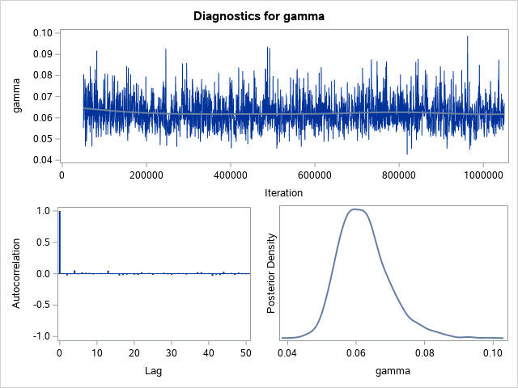
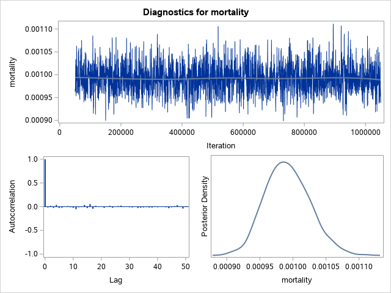
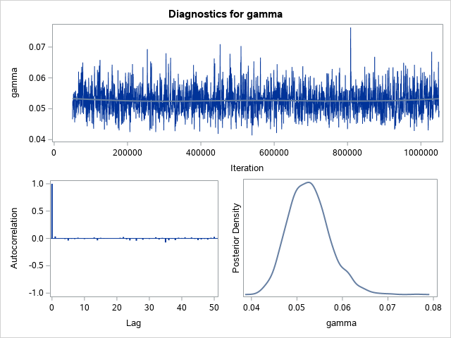
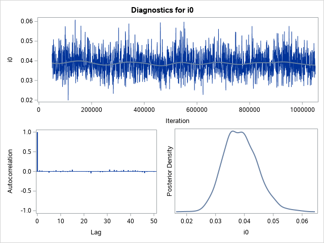
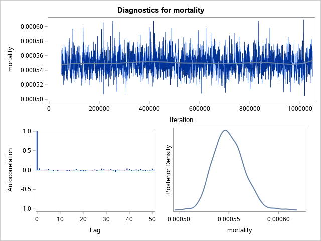
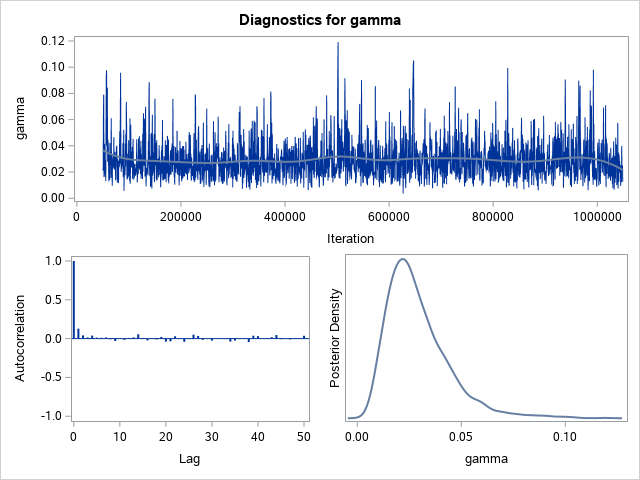

| MCMC analysis of regions |
The MCMC Procedure
|
|
|---|
| Parameters | ||||
|---|---|---|---|---|
| Block | Parameter | Sampling Method |
Initial Value |
Prior Distribution |
| 1 | log_mort | N-Metropolis | -4.6052 | normal(-4.605170186, sd= 2.302585093) |
| log_i0 | -4.6052 | normal(-4.605170186, sd=3.4538776395) | ||
| log_R0 | 1.0986 | normal(1.0986122887, sd=0.9210340372) | ||
| log_gamma | -2.9957 | normal(-2.995732274, sd=1.1512925465) | ||
| Tuning History | |||
|---|---|---|---|
| Phase | Block | Scale | Acceptance Rate |
| 1 | 1 | 2.3800 | 0.000200 |
| 2 | 1 | 0.5981 | 0.000360 |
| 3 | 1 | 0.1567 | 0.2308 |
| 4 | 1 | 0.1222 | 0.3950 |
| Burn-In History | ||
|---|---|---|
| Block | Scale | Acceptance Rate |
| 1 | 0.1222 | 0.3931 |
| Sampling History | ||
|---|---|---|
| Block | Scale | Acceptance Rate |
| 1 | 0.1222 | 0.3919 |
| MCMC analysis of regions |
The MCMC Procedure
| Posterior Summaries and Intervals | |||||
|---|---|---|---|---|---|
| Parameter | N | Mean | Standard Deviation |
95% HPD Interval | |
| mortality | 2000 | 0.000640 | 0.000028 | 0.000597 | 0.000694 |
| i0 | 2000 | 0.1094 | 0.0155 | 0.0794 | 0.1400 |
| R0 | 2000 | 2.5809 | 0.3538 | 1.8904 | 3.2661 |
| beta | 2000 | 0.3055 | 0.00849 | 0.2895 | 0.3223 |
| gamma | 2000 | 0.1206 | 0.0176 | 0.0886 | 0.1537 |
| MCMC analysis of regions |
The MCMC Procedure
| Monte Carlo Standard Errors | |||
|---|---|---|---|
| Parameter | MCSE | Standard Deviation |
MCSE/SD |
| mortality | 9.727E-7 | 0.000028 | 0.0343 |
| i0 | 0.000521 | 0.0155 | 0.0336 |
| R0 | 0.0128 | 0.3538 | 0.0361 |
| beta | 0.000215 | 0.00849 | 0.0253 |
| gamma | 0.000631 | 0.0176 | 0.0359 |
| Posterior Autocorrelations | ||||
|---|---|---|---|---|
| Parameter | Lag 1 | Lag 5 | Lag 10 | Lag 50 |
| mortality | 0.3641 | 0.0135 | 0.0208 | -0.0461 |
| i0 | 0.3555 | 0.0165 | 0.0163 | -0.0051 |
| R0 | 0.4667 | 0.0097 | 0.0103 | -0.0188 |
| beta | 0.0993 | 0.0122 | -0.0396 | 0.0457 |
| gamma | 0.4290 | 0.0230 | 0.0134 | -0.0304 |
| Geweke Diagnostics | ||
|---|---|---|
| Parameter | z | Pr > |z| |
| mortality | -0.7409 | 0.4587 |
| i0 | 1.1640 | 0.2444 |
| R0 | 1.2289 | 0.2191 |
| beta | 0.6556 | 0.5121 |
| gamma | -0.9893 | 0.3225 |
| Raftery-Lewis Diagnostics | ||||
|---|---|---|---|---|
| Quantile=0.025 Accuracy=+/-0.005 Probability=0.95 Epsilon=0.001 | ||||
| Parameter | Number of Samples | Dependence Factor |
||
| Burn-In | Total | Minimum | ||
| mortality | . | . | 3746 | . |
| i0 | . | . | 3746 | . |
| R0 | . | . | 3746 | . |
| beta | . | . | 3746 | . |
| gamma | . | . | 3746 | . |
| NOTE: The minimum required sample size of 3746 is larger than the available chain length of 2000. | ||||
| Heidelberger-Welch Diagnostics | ||||||||
|---|---|---|---|---|---|---|---|---|
| Parameter | Stationarity Test | Half-Width Test | ||||||
| Cramer-von Mises Stat |
p-Value | Test Outcome |
Iterations Discarded |
Half-Width | Mean | Relative Half-Width |
Test Outcome |
|
| mortality | 0.0827 | 0.6763 | Passed | 0 | 2.073E-6 | 0.000640 | 0.00324 | Passed |
| i0 | 0.1578 | 0.3666 | Passed | 0 | 0.00107 | 0.1094 | 0.00977 | Passed |
| R0 | 0.2377 | 0.2050 | Passed | 0 | 0.0247 | 2.5809 | 0.00958 | Passed |
| beta | 0.0680 | 0.7636 | Passed | 0 | 0.000402 | 0.3055 | 0.00131 | Passed |
| gamma | 0.1729 | 0.3266 | Passed | 0 | 0.00125 | 0.1206 | 0.0104 | Passed |
| Effective Sample Sizes | |||
|---|---|---|---|
| Parameter | ESS | Autocorrelation Time |
Efficiency |
| mortality | 851.1 | 2.3500 | 0.4255 |
| i0 | 887.0 | 2.2548 | 0.4435 |
| R0 | 768.2 | 2.6035 | 0.3841 |
| beta | 1563.2 | 1.2794 | 0.7816 |
| gamma | 776.2 | 2.5768 | 0.3881 |
| Posterior Summaries and Intervals for Prediction | |||||
|---|---|---|---|---|---|
| Parameter | N | Mean | Standard Deviation |
95% HPD Interval | |
| int_dec_avg_dot_1 | 2000 | 73.6840 | 9.7032 | 57.0000 | 94.0000 |
| int_dec_avg_dot_2 | 2000 | 84.9495 | 10.2928 | 64.0000 | 104.0 |
| int_dec_avg_dot_3 | 2000 | 96.6495 | 10.7576 | 76.0000 | 118.0 |
| int_dec_avg_dot_4 | 2000 | 109.7 | 11.0135 | 87.0000 | 130.0 |
| int_dec_avg_dot_5 | 2000 | 122.9 | 11.8686 | 99.0000 | 145.0 |
| int_dec_avg_dot_6 | 2000 | 136.6 | 12.3441 | 114.0 | 161.0 |
| int_dec_avg_dot_7 | 2000 | 149.4 | 12.8110 | 122.0 | 172.0 |
| int_dec_avg_dot_8 | 2000 | 162.1 | 13.3479 | 136.0 | 187.0 |
| int_dec_avg_dot_9 | 2000 | 173.0 | 13.9347 | 146.0 | 199.0 |
| int_dec_avg_dot_10 | 2000 | 182.9 | 14.4603 | 152.0 | 209.0 |
| int_dec_avg_dot_11 | 2000 | 190.5 | 14.5568 | 160.0 | 217.0 |
| int_dec_avg_dot_12 | 2000 | 196.3 | 14.7090 | 166.0 | 223.0 |
| int_dec_avg_dot_13 | 2000 | 199.6 | 14.6708 | 172.0 | 228.0 |
| int_dec_avg_dot_14 | 2000 | 200.0 | 15.1463 | 170.0 | 229.0 |
| int_dec_avg_dot_15 | 2000 | 198.7 | 14.7928 | 170.0 | 227.0 |
| int_dec_avg_dot_16 | 2000 | 195.0 | 14.8620 | 164.0 | 221.0 |
| int_dec_avg_dot_17 | 2000 | 189.9 | 14.6107 | 159.0 | 216.0 |
| int_dec_avg_dot_18 | 2000 | 183.4 | 14.3937 | 156.0 | 212.0 |
| int_dec_avg_dot_19 | 2000 | 176.0 | 13.5747 | 149.0 | 202.0 |
| int_dec_avg_dot_20 | 2000 | 167.3 | 13.5253 | 140.0 | 193.0 |
| int_dec_avg_dot_21 | 2000 | 158.8 | 12.9909 | 135.0 | 185.0 |
| int_dec_avg_dot_22 | 2000 | 149.3 | 12.5433 | 123.0 | 171.0 |
| int_dec_avg_dot_23 | 2000 | 140.1 | 12.2500 | 116.0 | 163.0 |
| int_dec_avg_dot_24 | 2000 | 130.4 | 11.7038 | 109.0 | 154.0 |
| int_dec_avg_dot_25 | 2000 | 121.6 | 11.0285 | 99.0000 | 141.0 |
| int_dec_avg_dot_26 | 2000 | 113.1 | 10.8524 | 93.0000 | 134.0 |
| int_dec_avg_dot_27 | 2000 | 104.0 | 10.4681 | 83.0000 | 123.0 |
| int_dec_avg_dot_28 | 2000 | 96.2710 | 10.1171 | 74.0000 | 113.0 |
| int_dec_avg_dot_29 | 2000 | 88.8250 | 9.7042 | 69.0000 | 106.0 |
| int_dec_avg_dot_30 | 2000 | 82.1450 | 9.2358 | 64.0000 | 99.0000 |
| int_dec_avg_dot_31 | 2000 | 74.3305 | 8.8819 | 56.0000 | 90.0000 |
| int_dec_avg_dot_32 | 2000 | 68.7030 | 8.3790 | 52.0000 | 85.0000 |
| int_dec_avg_dot_33 | 2000 | 62.9705 | 8.1016 | 46.0000 | 77.0000 |
| int_dec_avg_dot_34 | 2000 | 57.2585 | 7.9027 | 41.0000 | 71.0000 |
| int_dec_avg_dot_35 | 2000 | 52.2605 | 7.3484 | 36.0000 | 65.0000 |
| int_dec_avg_dot_36 | 2000 | 47.5930 | 6.9723 | 33.0000 | 60.0000 |
| int_dec_avg_dot_37 | 2000 | 43.7620 | 6.8490 | 30.0000 | 56.0000 |
| int_dec_avg_dot_38 | 2000 | 39.5985 | 6.4779 | 27.0000 | 52.0000 |
| int_dec_avg_dot_39 | 2000 | 36.0770 | 6.3867 | 22.0000 | 47.0000 |
| int_dec_avg_dot_40 | 2000 | 32.8470 | 5.9782 | 21.0000 | 44.0000 |
| int_dec_avg_dot_41 | 2000 | 29.7030 | 5.9092 | 17.0000 | 40.0000 |
| int_dec_avg_dot_42 | 2000 | 27.1050 | 5.4301 | 17.0000 | 37.0000 |
| int_dec_avg_dot_43 | 2000 | 24.6560 | 5.4078 | 13.0000 | 34.0000 |
| MCMC analysis of regions |
The MCMC Procedure


| MCMC analysis of regions |
The MCMC Procedure
|
|
|---|
| Parameters | ||||
|---|---|---|---|---|
| Block | Parameter | Sampling Method |
Initial Value |
Prior Distribution |
| 1 | log_mort | N-Metropolis | -4.6052 | normal(-4.605170186, sd= 2.302585093) |
| log_i0 | -4.6052 | normal(-4.605170186, sd=3.4538776395) | ||
| log_R0 | 1.0986 | normal(1.0986122887, sd=0.9210340372) | ||
| log_gamma | -2.9957 | normal(-2.995732274, sd=1.1512925465) | ||
| Tuning History | |||
|---|---|---|---|
| Phase | Block | Scale | Acceptance Rate |
| 1 | 1 | 2.3800 | 0.000600 |
| 2 | 1 | 0.6482 | 0.00246 |
| 3 | 1 | 0.2000 | 0.1550 |
| 4 | 1 | 0.1315 | 0.5322 |
| 5 | 1 | 0.1967 | 0.6310 |
| 6 | 1 | 0.3827 | 0.6172 |
| 7 | 1 | 0.7157 | 0.5688 |
| 8 | 1 | 1.1737 | 0.4914 |
| 9 | 1 | 1.5942 | 0.4248 |
| Burn-In History | ||
|---|---|---|
| Block | Scale | Acceptance Rate |
| 1 | 1.5942 | 0.4246 |
| Sampling History | ||
|---|---|---|
| Block | Scale | Acceptance Rate |
| 1 | 1.5942 | 0.4243 |
| MCMC analysis of regions |
The MCMC Procedure
| Posterior Summaries and Intervals | |||||
|---|---|---|---|---|---|
| Parameter | N | Mean | Standard Deviation |
95% HPD Interval | |
| mortality | 2000 | 0.000455 | 9.775E-6 | 0.000435 | 0.000473 |
| i0 | 2000 | 0.1260 | 0.0110 | 0.1039 | 0.1470 |
| R0 | 2000 | 4.6868 | 0.7222 | 3.2744 | 6.0624 |
| beta | 2000 | 0.2868 | 0.0154 | 0.2562 | 0.3150 |
| gamma | 2000 | 0.0622 | 0.00731 | 0.0493 | 0.0774 |
| MCMC analysis of regions |
The MCMC Procedure
| Monte Carlo Standard Errors | |||
|---|---|---|---|
| Parameter | MCSE | Standard Deviation |
MCSE/SD |
| mortality | 2.297E-7 | 9.775E-6 | 0.0235 |
| i0 | 0.000240 | 0.0110 | 0.0219 |
| R0 | 0.0165 | 0.7222 | 0.0229 |
| beta | 0.000345 | 0.0154 | 0.0224 |
| gamma | 0.000163 | 0.00731 | 0.0224 |
| Posterior Autocorrelations | ||||
|---|---|---|---|---|
| Parameter | Lag 1 | Lag 5 | Lag 10 | Lag 50 |
| mortality | 0.0182 | -0.0129 | -0.0144 | -0.0142 |
| i0 | -0.0195 | 0.0087 | 0.0198 | -0.0086 |
| R0 | 0.0190 | 0.0030 | -0.0015 | -0.0164 |
| beta | 0.0008 | 0.0186 | 0.0023 | -0.0020 |
| gamma | 0.0094 | -0.0079 | 0.0054 | -0.0082 |
| Geweke Diagnostics | ||
|---|---|---|
| Parameter | z | Pr > |z| |
| mortality | . | . |
| i0 | -3.0543 | 0.0023 |
| R0 | -1.3496 | 0.1771 |
| beta | 0.2651 | 0.7909 |
| gamma | 2.3974 | 0.0165 |
| Raftery-Lewis Diagnostics | ||||
|---|---|---|---|---|
| Quantile=0.025 Accuracy=+/-0.005 Probability=0.95 Epsilon=0.001 | ||||
| Parameter | Number of Samples | Dependence Factor |
||
| Burn-In | Total | Minimum | ||
| mortality | . | . | 3746 | . |
| i0 | . | . | 3746 | . |
| R0 | . | . | 3746 | . |
| beta | . | . | 3746 | . |
| gamma | . | . | 3746 | . |
| NOTE: The minimum required sample size of 3746 is larger than the available chain length of 2000. | ||||
| Heidelberger-Welch Diagnostics | ||||||||
|---|---|---|---|---|---|---|---|---|
| Parameter | Stationarity Test | Half-Width Test | ||||||
| Cramer-von Mises Stat |
p-Value | Test Outcome |
Iterations Discarded |
Half-Width | Mean | Relative Half-Width |
Test Outcome |
|
| mortality | . | . | Failed | . | . | . | . | |
| i0 | 0.3349 | 0.1081 | Passed | 0 | 0.000478 | 0.1260 | 0.00379 | Passed |
| R0 | 0.1704 | 0.3329 | Passed | 0 | 0.0352 | 4.6868 | 0.00751 | Passed |
| beta | 0.0671 | 0.7695 | Passed | 0 | 0.000736 | 0.2868 | 0.00257 | Passed |
| gamma | 0.3244 | 0.1156 | Passed | 0 | 0.000354 | 0.0622 | 0.00569 | Passed |
| Effective Sample Sizes | |||
|---|---|---|---|
| Parameter | ESS | Autocorrelation Time |
Efficiency |
| mortality | 1811.4 | 1.1041 | 0.9057 |
| i0 | 2081.1 | 0.9610 | 1.0406 |
| R0 | 1908.4 | 1.0480 | 0.9542 |
| beta | 2000.0 | 1.0000 | 1.0000 |
| gamma | 2000.0 | 1.0000 | 1.0000 |
| Posterior Summaries and Intervals for Prediction | |||||
|---|---|---|---|---|---|
| Parameter | N | Mean | Standard Deviation |
95% HPD Interval | |
| int_dec_avg_dot_1 | 2000 | 37.6675 | 7.0408 | 23.0000 | 50.0000 |
| int_dec_avg_dot_2 | 2000 | 45.0110 | 7.3347 | 32.0000 | 59.0000 |
| int_dec_avg_dot_3 | 2000 | 53.0970 | 7.8103 | 37.0000 | 67.0000 |
| int_dec_avg_dot_4 | 2000 | 62.1460 | 8.2664 | 46.0000 | 78.0000 |
| int_dec_avg_dot_5 | 2000 | 71.8755 | 8.9847 | 53.0000 | 88.0000 |
| int_dec_avg_dot_6 | 2000 | 82.2225 | 9.4694 | 62.0000 | 99.0000 |
| int_dec_avg_dot_7 | 2000 | 92.8650 | 9.6903 | 73.0000 | 110.0 |
| int_dec_avg_dot_8 | 2000 | 103.1 | 10.7922 | 81.0000 | 123.0 |
| int_dec_avg_dot_9 | 2000 | 113.8 | 11.3972 | 91.0000 | 135.0 |
| int_dec_avg_dot_10 | 2000 | 123.1 | 11.8388 | 101.0 | 147.0 |
| int_dec_avg_dot_11 | 2000 | 131.3 | 12.3097 | 107.0 | 155.0 |
| int_dec_avg_dot_12 | 2000 | 138.6 | 12.3160 | 115.0 | 162.0 |
| int_dec_avg_dot_13 | 2000 | 143.4 | 12.4679 | 118.0 | 166.0 |
| int_dec_avg_dot_14 | 2000 | 146.4 | 12.9063 | 122.0 | 171.0 |
| int_dec_avg_dot_15 | 2000 | 148.5 | 12.7611 | 125.0 | 174.0 |
| int_dec_avg_dot_16 | 2000 | 149.4 | 12.6813 | 124.0 | 173.0 |
| int_dec_avg_dot_17 | 2000 | 147.9 | 12.7483 | 126.0 | 175.0 |
| int_dec_avg_dot_18 | 2000 | 146.2 | 12.5733 | 121.0 | 169.0 |
| int_dec_avg_dot_19 | 2000 | 143.2 | 12.7191 | 117.0 | 166.0 |
| int_dec_avg_dot_20 | 2000 | 139.1 | 12.3539 | 114.0 | 162.0 |
| int_dec_avg_dot_21 | 2000 | 135.1 | 11.9184 | 112.0 | 157.0 |
| int_dec_avg_dot_22 | 2000 | 130.2 | 11.9161 | 106.0 | 152.0 |
| int_dec_avg_dot_23 | 2000 | 125.0 | 11.4875 | 102.0 | 146.0 |
| int_dec_avg_dot_24 | 2000 | 119.8 | 11.5820 | 99.0000 | 143.0 |
| int_dec_avg_dot_25 | 2000 | 115.0 | 10.9543 | 91.0000 | 134.0 |
| int_dec_avg_dot_26 | 2000 | 110.2 | 11.1069 | 87.0000 | 130.0 |
| int_dec_avg_dot_27 | 2000 | 103.7 | 10.4914 | 82.0000 | 122.0 |
| int_dec_avg_dot_28 | 2000 | 99.1235 | 10.5392 | 77.0000 | 118.0 |
| int_dec_avg_dot_29 | 2000 | 94.4385 | 9.8353 | 76.0000 | 113.0 |
| int_dec_avg_dot_30 | 2000 | 89.3620 | 9.8033 | 69.0000 | 107.0 |
| int_dec_avg_dot_31 | 2000 | 84.7030 | 9.4469 | 67.0000 | 103.0 |
| int_dec_avg_dot_32 | 2000 | 80.1735 | 9.2077 | 61.0000 | 97.0000 |
| int_dec_avg_dot_33 | 2000 | 75.8320 | 9.0382 | 59.0000 | 93.0000 |
| int_dec_avg_dot_34 | 2000 | 71.8385 | 8.4056 | 55.0000 | 87.0000 |
| int_dec_avg_dot_35 | 2000 | 67.6050 | 8.3506 | 51.0000 | 83.0000 |
| int_dec_avg_dot_36 | 2000 | 64.0725 | 8.3786 | 46.0000 | 79.0000 |
| int_dec_avg_dot_37 | 2000 | 60.7705 | 7.9144 | 44.0000 | 75.0000 |
| int_dec_avg_dot_38 | 2000 | 57.3140 | 7.6392 | 42.0000 | 72.0000 |
| int_dec_avg_dot_39 | 2000 | 53.9140 | 7.6784 | 38.0000 | 68.0000 |
| int_dec_avg_dot_40 | 2000 | 50.7990 | 7.2222 | 38.0000 | 65.0000 |
| int_dec_avg_dot_41 | 2000 | 48.2560 | 7.1867 | 35.0000 | 62.0000 |
| int_dec_avg_dot_42 | 2000 | 45.4280 | 7.1386 | 31.0000 | 59.0000 |
| int_dec_avg_dot_43 | 2000 | 42.8660 | 7.0674 | 29.0000 | 56.0000 |
| MCMC analysis of regions |
The MCMC Procedure


| MCMC analysis of regions |
The MCMC Procedure
|
|
|---|
| Parameters | ||||
|---|---|---|---|---|
| Block | Parameter | Sampling Method |
Initial Value |
Prior Distribution |
| 1 | log_mort | N-Metropolis | -4.6052 | normal(-4.605170186, sd= 2.302585093) |
| log_i0 | -4.6052 | normal(-4.605170186, sd=3.4538776395) | ||
| log_R0 | 1.0986 | normal(1.0986122887, sd=0.9210340372) | ||
| log_gamma | -2.9957 | normal(-2.995732274, sd=1.1512925465) | ||
| Tuning History | |||
|---|---|---|---|
| Phase | Block | Scale | Acceptance Rate |
| 1 | 1 | 2.3800 | 0.000600 |
| 2 | 1 | 0.6482 | 0.00366 |
| 3 | 1 | 0.2085 | 0.1728 |
| 4 | 1 | 0.1429 | 0.5444 |
| 5 | 1 | 0.2203 | 0.6232 |
| 6 | 1 | 0.4191 | 0.6204 |
| 7 | 1 | 0.7908 | 0.5582 |
| 8 | 1 | 1.2621 | 0.4837 |
| 9 | 1 | 1.6843 | 0.4125 |
| Burn-In History | ||
|---|---|---|
| Block | Scale | Acceptance Rate |
| 1 | 1.6843 | 0.4124 |
| Sampling History | ||
|---|---|---|
| Block | Scale | Acceptance Rate |
| 1 | 1.6843 | 0.4120 |
| MCMC analysis of regions |
The MCMC Procedure
| Posterior Summaries and Intervals | |||||
|---|---|---|---|---|---|
| Parameter | N | Mean | Standard Deviation |
95% HPD Interval | |
| mortality | 2000 | 0.000514 | 0.000013 | 0.000488 | 0.000537 |
| i0 | 2000 | 0.0592 | 0.00585 | 0.0479 | 0.0704 |
| R0 | 2000 | 4.4788 | 0.6322 | 3.3443 | 5.8111 |
| beta | 2000 | 0.3097 | 0.0122 | 0.2871 | 0.3346 |
| gamma | 2000 | 0.0703 | 0.00859 | 0.0546 | 0.0882 |
| MCMC analysis of regions |
The MCMC Procedure
| Monte Carlo Standard Errors | |||
|---|---|---|---|
| Parameter | MCSE | Standard Deviation |
MCSE/SD |
| mortality | 2.817E-7 | 0.000013 | 0.0224 |
| i0 | 0.000131 | 0.00585 | 0.0224 |
| R0 | 0.0148 | 0.6322 | 0.0233 |
| beta | 0.000278 | 0.0122 | 0.0229 |
| gamma | 0.000200 | 0.00859 | 0.0233 |
| Posterior Autocorrelations | ||||
|---|---|---|---|---|
| Parameter | Lag 1 | Lag 5 | Lag 10 | Lag 50 |
| mortality | -0.0283 | 0.0129 | -0.0359 | 0.0021 |
| i0 | -0.0016 | 0.0021 | -0.0015 | 0.0037 |
| R0 | 0.0213 | 0.0192 | -0.0092 | -0.0187 |
| beta | 0.0224 | 0.0191 | 0.0496 | 0.0035 |
| gamma | 0.0272 | 0.0180 | -0.0144 | -0.0218 |
| Geweke Diagnostics | ||
|---|---|---|
| Parameter | z | Pr > |z| |
| mortality | 0.2261 | 0.8211 |
| i0 | 0.8594 | 0.3901 |
| R0 | 0.3857 | 0.6997 |
| beta | -0.6626 | 0.5076 |
| gamma | -0.4093 | 0.6823 |
| Raftery-Lewis Diagnostics | ||||
|---|---|---|---|---|
| Quantile=0.025 Accuracy=+/-0.005 Probability=0.95 Epsilon=0.001 | ||||
| Parameter | Number of Samples | Dependence Factor |
||
| Burn-In | Total | Minimum | ||
| mortality | . | . | 3746 | . |
| i0 | . | . | 3746 | . |
| R0 | . | . | 3746 | . |
| beta | . | . | 3746 | . |
| gamma | . | . | 3746 | . |
| NOTE: The minimum required sample size of 3746 is larger than the available chain length of 2000. | ||||
| Heidelberger-Welch Diagnostics | ||||||||
|---|---|---|---|---|---|---|---|---|
| Parameter | Stationarity Test | Half-Width Test | ||||||
| Cramer-von Mises Stat |
p-Value | Test Outcome |
Iterations Discarded |
Half-Width | Mean | Relative Half-Width |
Test Outcome |
|
| mortality | . | . | Failed | . | . | . | . | |
| i0 | 0.1413 | 0.4172 | Passed | 0 | 0.000268 | 0.0592 | 0.00453 | Passed |
| R0 | 0.0697 | 0.7537 | Passed | 0 | 0.0280 | 4.4788 | 0.00624 | Passed |
| beta | 0.0474 | 0.8919 | Passed | 0 | 0.000573 | 0.3097 | 0.00185 | Passed |
| gamma | 0.1014 | 0.5783 | Passed | 0 | 0.000395 | 0.0703 | 0.00562 | Passed |
| Effective Sample Sizes | |||
|---|---|---|---|
| Parameter | ESS | Autocorrelation Time |
Efficiency |
| mortality | 1987.2 | 1.0065 | 0.9936 |
| i0 | 2000.0 | 1.0000 | 1.0000 |
| R0 | 1835.2 | 1.0898 | 0.9176 |
| beta | 1914.3 | 1.0448 | 0.9571 |
| gamma | 1838.5 | 1.0879 | 0.9192 |
| Posterior Summaries and Intervals for Prediction | |||||
|---|---|---|---|---|---|
| Parameter | N | Mean | Standard Deviation |
95% HPD Interval | |
| int_dec_avg_dot_1 | 2000 | 15.4330 | 4.2997 | 7.0000 | 24.0000 |
| int_dec_avg_dot_2 | 2000 | 18.7175 | 4.4452 | 10.0000 | 27.0000 |
| int_dec_avg_dot_3 | 2000 | 22.9870 | 5.2244 | 12.0000 | 32.0000 |
| int_dec_avg_dot_4 | 2000 | 27.6775 | 5.5639 | 17.0000 | 38.0000 |
| int_dec_avg_dot_5 | 2000 | 33.0875 | 6.1159 | 20.0000 | 44.0000 |
| int_dec_avg_dot_6 | 2000 | 39.5445 | 6.6278 | 26.0000 | 52.0000 |
| int_dec_avg_dot_7 | 2000 | 46.9465 | 7.2200 | 32.0000 | 60.0000 |
| int_dec_avg_dot_8 | 2000 | 54.7310 | 7.4346 | 39.0000 | 68.0000 |
| int_dec_avg_dot_9 | 2000 | 63.5690 | 8.5784 | 46.0000 | 80.0000 |
| int_dec_avg_dot_10 | 2000 | 72.4930 | 8.7636 | 54.0000 | 88.0000 |
| int_dec_avg_dot_11 | 2000 | 81.3675 | 9.5110 | 64.0000 | 101.0 |
| int_dec_avg_dot_12 | 2000 | 90.0760 | 9.9177 | 71.0000 | 109.0 |
| int_dec_avg_dot_13 | 2000 | 98.5580 | 10.5303 | 77.0000 | 118.0 |
| int_dec_avg_dot_14 | 2000 | 106.3 | 10.7423 | 85.0000 | 127.0 |
| int_dec_avg_dot_15 | 2000 | 112.3 | 11.1679 | 90.0000 | 133.0 |
| int_dec_avg_dot_16 | 2000 | 116.6 | 11.5280 | 94.0000 | 139.0 |
| int_dec_avg_dot_17 | 2000 | 119.7 | 11.7629 | 94.0000 | 140.0 |
| int_dec_avg_dot_18 | 2000 | 121.3 | 10.8262 | 104.0 | 145.0 |
| int_dec_avg_dot_19 | 2000 | 121.1 | 11.3989 | 100.0 | 143.0 |
| int_dec_avg_dot_20 | 2000 | 120.4 | 11.1644 | 97.0000 | 141.0 |
| int_dec_avg_dot_21 | 2000 | 118.4 | 11.2092 | 97.0000 | 139.0 |
| int_dec_avg_dot_22 | 2000 | 115.2 | 11.5332 | 93.0000 | 136.0 |
| int_dec_avg_dot_23 | 2000 | 111.6 | 10.9934 | 90.0000 | 132.0 |
| int_dec_avg_dot_24 | 2000 | 107.9 | 10.8357 | 83.0000 | 126.0 |
| int_dec_avg_dot_25 | 2000 | 103.8 | 10.6028 | 82.0000 | 123.0 |
| int_dec_avg_dot_26 | 2000 | 98.8585 | 10.7618 | 78.0000 | 120.0 |
| int_dec_avg_dot_27 | 2000 | 94.3360 | 10.0106 | 74.0000 | 113.0 |
| int_dec_avg_dot_28 | 2000 | 89.1400 | 9.6701 | 69.0000 | 106.0 |
| int_dec_avg_dot_29 | 2000 | 84.6750 | 9.4636 | 64.0000 | 101.0 |
| int_dec_avg_dot_30 | 2000 | 80.0810 | 9.1721 | 63.0000 | 98.0000 |
| int_dec_avg_dot_31 | 2000 | 75.5270 | 8.8606 | 59.0000 | 93.0000 |
| int_dec_avg_dot_32 | 2000 | 71.9060 | 8.6640 | 53.0000 | 87.0000 |
| int_dec_avg_dot_33 | 2000 | 67.6270 | 8.2750 | 51.0000 | 83.0000 |
| int_dec_avg_dot_34 | 2000 | 63.5005 | 8.3439 | 46.0000 | 78.0000 |
| int_dec_avg_dot_35 | 2000 | 59.5425 | 7.9931 | 43.0000 | 74.0000 |
| int_dec_avg_dot_36 | 2000 | 55.9960 | 7.7458 | 40.0000 | 70.0000 |
| int_dec_avg_dot_37 | 2000 | 52.3885 | 7.6022 | 36.0000 | 66.0000 |
| int_dec_avg_dot_38 | 2000 | 49.3175 | 7.2715 | 35.0000 | 63.0000 |
| int_dec_avg_dot_39 | 2000 | 46.4410 | 7.0175 | 34.0000 | 60.0000 |
| int_dec_avg_dot_40 | 2000 | 43.2245 | 6.9295 | 29.0000 | 56.0000 |
| int_dec_avg_dot_41 | 2000 | 40.6385 | 6.8285 | 27.0000 | 53.0000 |
| int_dec_avg_dot_42 | 2000 | 37.9745 | 6.5620 | 24.0000 | 49.0000 |
| int_dec_avg_dot_43 | 2000 | 35.4265 | 6.3699 | 24.0000 | 48.0000 |
| MCMC analysis of regions |
The MCMC Procedure


| MCMC analysis of regions |
The MCMC Procedure
|
|
|---|
| Parameters | ||||
|---|---|---|---|---|
| Block | Parameter | Sampling Method |
Initial Value |
Prior Distribution |
| 1 | log_mort | N-Metropolis | -4.6052 | normal(-4.605170186, sd= 2.302585093) |
| log_i0 | -4.6052 | normal(-4.605170186, sd=3.4538776395) | ||
| log_R0 | 1.0986 | normal(1.0986122887, sd=0.9210340372) | ||
| log_gamma | -2.9957 | normal(-2.995732274, sd=1.1512925465) | ||
| Tuning History | |||
|---|---|---|---|
| Phase | Block | Scale | Acceptance Rate |
| 1 | 1 | 2.3800 | 0.000400 |
| 2 | 1 | 0.6283 | 0.0204 |
| 3 | 1 | 0.2532 | 0.3419 |
| Burn-In History | ||
|---|---|---|
| Block | Scale | Acceptance Rate |
| 1 | 0.2532 | 0.3442 |
| Sampling History | ||
|---|---|---|
| Block | Scale | Acceptance Rate |
| 1 | 0.2532 | 0.3439 |
| MCMC analysis of regions |
The MCMC Procedure
| Posterior Summaries and Intervals | |||||
|---|---|---|---|---|---|
| Parameter | N | Mean | Standard Deviation |
95% HPD Interval | |
| mortality | 2000 | 0.000871 | 0.000027 | 0.000820 | 0.000925 |
| i0 | 2000 | 0.0339 | 0.00573 | 0.0230 | 0.0452 |
| R0 | 2000 | 8.4515 | 1.0105 | 6.5409 | 10.4934 |
| beta | 2000 | 0.4115 | 0.0274 | 0.3609 | 0.4658 |
| gamma | 2000 | 0.0491 | 0.00368 | 0.0420 | 0.0562 |
| MCMC analysis of regions |
The MCMC Procedure
| Monte Carlo Standard Errors | |||
|---|---|---|---|
| Parameter | MCSE | Standard Deviation |
MCSE/SD |
| mortality | 6.957E-7 | 0.000027 | 0.0257 |
| i0 | 0.000132 | 0.00573 | 0.0230 |
| R0 | 0.0226 | 1.0105 | 0.0224 |
| beta | 0.000667 | 0.0274 | 0.0243 |
| gamma | 0.000082 | 0.00368 | 0.0224 |
| Posterior Autocorrelations | ||||
|---|---|---|---|---|
| Parameter | Lag 1 | Lag 5 | Lag 10 | Lag 50 |
| mortality | 0.0279 | 0.0331 | 0.0039 | 0.0021 |
| i0 | 0.0276 | -0.0169 | 0.0357 | 0.0043 |
| R0 | 0.0088 | 0.0148 | 0.0551 | 0.0388 |
| beta | 0.0119 | -0.0212 | 0.0646 | 0.0282 |
| gamma | 0.0009 | 0.0379 | 0.0188 | -0.0038 |
| Geweke Diagnostics | ||
|---|---|---|
| Parameter | z | Pr > |z| |
| mortality | -1.2518 | 0.2106 |
| i0 | 0.3734 | 0.7088 |
| R0 | -1.4991 | 0.1338 |
| beta | -0.7907 | 0.4291 |
| gamma | 1.6485 | 0.0992 |
| Raftery-Lewis Diagnostics | ||||
|---|---|---|---|---|
| Quantile=0.025 Accuracy=+/-0.005 Probability=0.95 Epsilon=0.001 | ||||
| Parameter | Number of Samples | Dependence Factor |
||
| Burn-In | Total | Minimum | ||
| mortality | . | . | 3746 | . |
| i0 | . | . | 3746 | . |
| R0 | . | . | 3746 | . |
| beta | . | . | 3746 | . |
| gamma | . | . | 3746 | . |
| NOTE: The minimum required sample size of 3746 is larger than the available chain length of 2000. | ||||
| Heidelberger-Welch Diagnostics | ||||||||
|---|---|---|---|---|---|---|---|---|
| Parameter | Stationarity Test | Half-Width Test | ||||||
| Cramer-von Mises Stat |
p-Value | Test Outcome |
Iterations Discarded |
Half-Width | Mean | Relative Half-Width |
Test Outcome |
|
| mortality | 0.3957 | 0.0742 | Passed | 0 | 0 | 0.000871 | 0 | Passed |
| i0 | 0.3959 | 0.0741 | Passed | 0 | 0.000259 | 0.0339 | 0.00762 | Passed |
| R0 | 0.3520 | 0.0971 | Passed | 400 | 0.0658 | 8.4751 | 0.00776 | Passed |
| beta | 0.4596 | 0.0505 | Passed | 0 | 0.00155 | 0.4115 | 0.00377 | Passed |
| gamma | 0.1845 | 0.2995 | Passed | 400 | 0.000206 | 0.0490 | 0.00421 | Passed |
| Effective Sample Sizes | |||
|---|---|---|---|
| Parameter | ESS | Autocorrelation Time |
Efficiency |
| mortality | 1512.6 | 1.3222 | 0.7563 |
| i0 | 1895.5 | 1.0552 | 0.9477 |
| R0 | 2000.0 | 1.0000 | 1.0000 |
| beta | 1689.5 | 1.1838 | 0.8448 |
| gamma | 2000.0 | 1.0000 | 1.0000 |
| Posterior Summaries and Intervals for Prediction | |||||
|---|---|---|---|---|---|
| Parameter | N | Mean | Standard Deviation |
95% HPD Interval | |
| int_dec_avg_dot_1 | 2000 | 3.5305 | 1.9837 | 0 | 7.0000 |
| int_dec_avg_dot_2 | 2000 | 4.7975 | 2.2676 | 1.0000 | 9.0000 |
| int_dec_avg_dot_3 | 2000 | 6.2780 | 2.6590 | 1.0000 | 11.0000 |
| int_dec_avg_dot_4 | 2000 | 8.2810 | 3.0517 | 2.0000 | 14.0000 |
| int_dec_avg_dot_5 | 2000 | 11.0105 | 3.4712 | 4.0000 | 17.0000 |
| int_dec_avg_dot_6 | 2000 | 14.4355 | 4.1543 | 6.0000 | 22.0000 |
| int_dec_avg_dot_7 | 2000 | 18.5735 | 4.6303 | 9.0000 | 27.0000 |
| int_dec_avg_dot_8 | 2000 | 23.7675 | 5.0240 | 14.0000 | 33.0000 |
| int_dec_avg_dot_9 | 2000 | 29.9350 | 5.7386 | 18.0000 | 40.0000 |
| int_dec_avg_dot_10 | 2000 | 36.7815 | 6.4867 | 23.0000 | 48.0000 |
| int_dec_avg_dot_11 | 2000 | 43.8690 | 6.8567 | 29.0000 | 56.0000 |
| int_dec_avg_dot_12 | 2000 | 50.6690 | 7.5521 | 35.0000 | 64.0000 |
| int_dec_avg_dot_13 | 2000 | 56.5610 | 8.0991 | 41.0000 | 72.0000 |
| int_dec_avg_dot_14 | 2000 | 60.9555 | 8.3766 | 44.0000 | 76.0000 |
| int_dec_avg_dot_15 | 2000 | 64.1875 | 8.3321 | 49.0000 | 81.0000 |
| int_dec_avg_dot_16 | 2000 | 66.1515 | 8.6090 | 48.0000 | 81.0000 |
| int_dec_avg_dot_17 | 2000 | 66.8835 | 8.5978 | 50.0000 | 83.0000 |
| int_dec_avg_dot_18 | 2000 | 66.2870 | 8.6161 | 48.0000 | 82.0000 |
| int_dec_avg_dot_19 | 2000 | 65.4195 | 8.3572 | 49.0000 | 81.0000 |
| int_dec_avg_dot_20 | 2000 | 63.5205 | 8.1863 | 46.0000 | 78.0000 |
| int_dec_avg_dot_21 | 2000 | 61.6885 | 8.1841 | 45.0000 | 77.0000 |
| int_dec_avg_dot_22 | 2000 | 59.5240 | 7.9374 | 44.0000 | 75.0000 |
| int_dec_avg_dot_23 | 2000 | 57.1195 | 7.8190 | 42.0000 | 72.0000 |
| int_dec_avg_dot_24 | 2000 | 54.6270 | 7.6020 | 39.0000 | 69.0000 |
| int_dec_avg_dot_25 | 2000 | 52.5220 | 7.3610 | 39.0000 | 67.0000 |
| int_dec_avg_dot_26 | 2000 | 50.0100 | 7.1594 | 35.0000 | 63.0000 |
| int_dec_avg_dot_27 | 2000 | 47.8610 | 7.0886 | 33.0000 | 60.0000 |
| int_dec_avg_dot_28 | 2000 | 45.7015 | 6.8128 | 32.0000 | 58.0000 |
| int_dec_avg_dot_29 | 2000 | 43.5415 | 7.0038 | 30.0000 | 57.0000 |
| int_dec_avg_dot_30 | 2000 | 41.6490 | 6.3815 | 29.0000 | 53.0000 |
| int_dec_avg_dot_31 | 2000 | 39.2110 | 6.1902 | 27.0000 | 50.0000 |
| int_dec_avg_dot_32 | 2000 | 37.7795 | 6.3538 | 26.0000 | 50.0000 |
| int_dec_avg_dot_33 | 2000 | 35.9740 | 5.9837 | 23.0000 | 46.0000 |
| int_dec_avg_dot_34 | 2000 | 34.1495 | 6.1400 | 23.0000 | 46.0000 |
| int_dec_avg_dot_35 | 2000 | 32.6005 | 5.7262 | 21.0000 | 43.0000 |
| int_dec_avg_dot_36 | 2000 | 30.5930 | 5.7016 | 18.0000 | 40.0000 |
| int_dec_avg_dot_37 | 2000 | 29.3030 | 5.4340 | 20.0000 | 40.0000 |
| int_dec_avg_dot_38 | 2000 | 28.0105 | 5.3394 | 17.0000 | 37.0000 |
| int_dec_avg_dot_39 | 2000 | 26.6575 | 5.2657 | 16.0000 | 36.0000 |
| int_dec_avg_dot_40 | 2000 | 25.1260 | 4.8731 | 15.0000 | 34.0000 |
| int_dec_avg_dot_41 | 2000 | 24.1505 | 5.0234 | 14.0000 | 33.0000 |
| int_dec_avg_dot_42 | 2000 | 22.9470 | 4.9158 | 14.0000 | 32.0000 |
| int_dec_avg_dot_43 | 2000 | 21.7740 | 4.9241 | 11.0000 | 30.0000 |
| int_dec_avg_dot_44 | 2000 | 20.7795 | 4.6768 | 11.0000 | 29.0000 |
| int_dec_avg_dot_45 | 2000 | 19.7650 | 4.5243 | 11.0000 | 28.0000 |
| int_dec_avg_dot_46 | 2000 | 18.8675 | 4.4231 | 10.0000 | 27.0000 |
| int_dec_avg_dot_47 | 2000 | 17.8185 | 4.3939 | 9.0000 | 26.0000 |
| int_dec_avg_dot_48 | 2000 | 16.9095 | 4.2822 | 7.0000 | 24.0000 |
| int_dec_avg_dot_49 | 2000 | 16.1180 | 4.2842 | 8.0000 | 24.0000 |
| int_dec_avg_dot_50 | 2000 | 15.3660 | 4.0949 | 6.0000 | 22.0000 |
| int_dec_avg_dot_51 | 2000 | 14.6750 | 4.0214 | 7.0000 | 22.0000 |
| MCMC analysis of regions |
The MCMC Procedure


| MCMC analysis of regions |
The MCMC Procedure
|
|
|---|
| Parameters | ||||
|---|---|---|---|---|
| Block | Parameter | Sampling Method |
Initial Value |
Prior Distribution |
| 1 | log_mort | N-Metropolis | -4.6052 | normal(-4.605170186, sd= 2.302585093) |
| log_i0 | -4.6052 | normal(-4.605170186, sd=3.4538776395) | ||
| log_R0 | 1.0986 | normal(1.0986122887, sd=0.9210340372) | ||
| log_gamma | -2.9957 | normal(-2.995732274, sd=1.1512925465) | ||
| Tuning History | |||
|---|---|---|---|
| Phase | Block | Scale | Acceptance Rate |
| 1 | 1 | 2.3800 | 0.000720 |
| 2 | 1 | 0.6577 | 0.00164 |
| 3 | 1 | 0.1952 | 0.1421 |
| 4 | 1 | 0.1243 | 0.5287 |
| 5 | 1 | 0.1844 | 0.6274 |
| 6 | 1 | 0.3550 | 0.6242 |
| 7 | 1 | 0.6772 | 0.5805 |
| 8 | 1 | 1.1453 | 0.5148 |
| 9 | 1 | 1.6432 | 0.4284 |
| 10 | 1 | 1.9392 | 0.3792 |
| Burn-In History | ||
|---|---|---|
| Block | Scale | Acceptance Rate |
| 1 | 1.9392 | 0.3769 |
| Sampling History | ||
|---|---|---|
| Block | Scale | Acceptance Rate |
| 1 | 1.9392 | 0.3810 |
| MCMC analysis of regions |
The MCMC Procedure
| Posterior Summaries and Intervals | |||||
|---|---|---|---|---|---|
| Parameter | N | Mean | Standard Deviation |
95% HPD Interval | |
| mortality | 2000 | 0.000992 | 0.000033 | 0.000935 | 0.00106 |
| i0 | 2000 | 0.0286 | 0.00381 | 0.0217 | 0.0365 |
| R0 | 2000 | 15.9582 | 1.6285 | 12.8363 | 19.1596 |
| beta | 2000 | 0.4468 | 0.0256 | 0.3979 | 0.4960 |
| gamma | 2000 | 0.0282 | 0.00174 | 0.0249 | 0.0317 |
| MCMC analysis of regions |
The MCMC Procedure
| Monte Carlo Standard Errors | |||
|---|---|---|---|
| Parameter | MCSE | Standard Deviation |
MCSE/SD |
| mortality | 7.166E-7 | 0.000033 | 0.0216 |
| i0 | 0.000080 | 0.00381 | 0.0209 |
| R0 | 0.0341 | 1.6285 | 0.0209 |
| beta | 0.000526 | 0.0256 | 0.0205 |
| gamma | 0.000038 | 0.00174 | 0.0220 |
| Posterior Autocorrelations | ||||
|---|---|---|---|---|
| Parameter | Lag 1 | Lag 5 | Lag 10 | Lag 50 |
| mortality | -0.0166 | -0.0267 | -0.0234 | 0.0104 |
| i0 | -0.0371 | 0.0168 | 0.0006 | 0.0129 |
| R0 | -0.0156 | -0.0100 | -0.0037 | -0.0122 |
| beta | -0.0133 | 0.0035 | -0.0029 | -0.0006 |
| gamma | -0.0211 | -0.0165 | -0.0028 | -0.0037 |
| Geweke Diagnostics | ||
|---|---|---|
| Parameter | z | Pr > |z| |
| mortality | 0.7002 | 0.4838 |
| i0 | -1.0086 | 0.3132 |
| R0 | 0.6128 | 0.5400 |
| beta | 0.5850 | 0.5586 |
| gamma | -0.6564 | 0.5116 |
| Raftery-Lewis Diagnostics | ||||
|---|---|---|---|---|
| Quantile=0.025 Accuracy=+/-0.005 Probability=0.95 Epsilon=0.001 | ||||
| Parameter | Number of Samples | Dependence Factor |
||
| Burn-In | Total | Minimum | ||
| mortality | . | . | 3746 | . |
| i0 | . | . | 3746 | . |
| R0 | . | . | 3746 | . |
| beta | . | . | 3746 | . |
| gamma | . | . | 3746 | . |
| NOTE: The minimum required sample size of 3746 is larger than the available chain length of 2000. | ||||
| Heidelberger-Welch Diagnostics | ||||||||
|---|---|---|---|---|---|---|---|---|
| Parameter | Stationarity Test | Half-Width Test | ||||||
| Cramer-von Mises Stat |
p-Value | Test Outcome |
Iterations Discarded |
Half-Width | Mean | Relative Half-Width |
Test Outcome |
|
| mortality | 0.0374 | 0.9459 | Passed | 0 | 0 | 0.000992 | 0 | Passed |
| i0 | 0.1620 | 0.3551 | Passed | 0 | 0.000149 | 0.0286 | 0.00521 | Passed |
| R0 | 0.0457 | 0.9016 | Passed | 0 | 0.0664 | 15.9582 | 0.00416 | Passed |
| beta | 0.0805 | 0.6890 | Passed | 0 | 0.00110 | 0.4468 | 0.00245 | Passed |
| gamma | 0.0234 | 0.9926 | Passed | 0 | 0.000070 | 0.0282 | 0.00250 | Passed |
| Effective Sample Sizes | |||
|---|---|---|---|
| Parameter | ESS | Autocorrelation Time |
Efficiency |
| mortality | 2148.8 | 0.9308 | 1.0744 |
| i0 | 2283.4 | 0.8759 | 1.1417 |
| R0 | 2284.1 | 0.8756 | 1.1420 |
| beta | 2373.8 | 0.8425 | 1.1869 |
| gamma | 2062.0 | 0.9699 | 1.0310 |
| Posterior Summaries and Intervals for Prediction | |||||
|---|---|---|---|---|---|
| Parameter | N | Mean | Standard Deviation |
95% HPD Interval | |
| int_dec_avg_dot_1 | 2000 | 6.0870 | 2.6088 | 0 | 10.0000 |
| int_dec_avg_dot_2 | 2000 | 8.5925 | 3.2038 | 2.0000 | 14.0000 |
| int_dec_avg_dot_3 | 2000 | 12.1530 | 3.6691 | 5.0000 | 19.0000 |
| int_dec_avg_dot_4 | 2000 | 16.7705 | 4.3835 | 7.0000 | 24.0000 |
| int_dec_avg_dot_5 | 2000 | 22.9700 | 5.3104 | 13.0000 | 33.0000 |
| int_dec_avg_dot_6 | 2000 | 31.7720 | 5.9789 | 20.0000 | 43.0000 |
| int_dec_avg_dot_7 | 2000 | 42.6945 | 6.7773 | 28.0000 | 54.0000 |
| int_dec_avg_dot_8 | 2000 | 56.2225 | 7.8411 | 40.0000 | 70.0000 |
| int_dec_avg_dot_9 | 2000 | 72.9660 | 9.1841 | 53.0000 | 89.0000 |
| int_dec_avg_dot_10 | 2000 | 91.5860 | 10.4695 | 68.0000 | 110.0 |
| int_dec_avg_dot_11 | 2000 | 110.3 | 11.3524 | 87.0000 | 131.0 |
| int_dec_avg_dot_12 | 2000 | 128.9 | 12.6841 | 105.0 | 153.0 |
| int_dec_avg_dot_13 | 2000 | 144.4 | 12.8721 | 119.0 | 168.0 |
| int_dec_avg_dot_14 | 2000 | 156.3 | 13.4240 | 132.0 | 184.0 |
| int_dec_avg_dot_15 | 2000 | 163.5 | 13.6111 | 135.0 | 188.0 |
| int_dec_avg_dot_16 | 2000 | 167.7 | 13.3578 | 142.0 | 193.0 |
| int_dec_avg_dot_17 | 2000 | 168.2 | 13.5267 | 141.0 | 194.0 |
| int_dec_avg_dot_18 | 2000 | 167.2 | 13.2639 | 140.0 | 193.0 |
| int_dec_avg_dot_19 | 2000 | 165.2 | 13.5495 | 138.0 | 190.0 |
| int_dec_avg_dot_20 | 2000 | 161.9 | 13.2282 | 137.0 | 187.0 |
| int_dec_avg_dot_21 | 2000 | 158.8 | 12.9415 | 133.0 | 183.0 |
| int_dec_avg_dot_22 | 2000 | 154.4 | 12.7453 | 130.0 | 180.0 |
| int_dec_avg_dot_23 | 2000 | 150.8 | 12.4133 | 125.0 | 173.0 |
| int_dec_avg_dot_24 | 2000 | 147.0 | 12.3006 | 123.0 | 170.0 |
| int_dec_avg_dot_25 | 2000 | 143.3 | 11.9935 | 118.0 | 165.0 |
| int_dec_avg_dot_26 | 2000 | 138.9 | 11.6448 | 115.0 | 160.0 |
| int_dec_avg_dot_27 | 2000 | 135.1 | 12.0834 | 109.0 | 156.0 |
| int_dec_avg_dot_28 | 2000 | 131.6 | 11.6686 | 110.0 | 155.0 |
| int_dec_avg_dot_29 | 2000 | 127.8 | 11.6013 | 106.0 | 151.0 |
| int_dec_avg_dot_30 | 2000 | 124.2 | 11.4194 | 103.0 | 147.0 |
| int_dec_avg_dot_31 | 2000 | 120.8 | 11.1420 | 96.0000 | 140.0 |
| int_dec_avg_dot_32 | 2000 | 117.4 | 11.3047 | 94.0000 | 138.0 |
| int_dec_avg_dot_33 | 2000 | 113.9 | 10.4344 | 94.0000 | 134.0 |
| int_dec_avg_dot_34 | 2000 | 110.8 | 10.8691 | 88.0000 | 130.0 |
| int_dec_avg_dot_35 | 2000 | 107.3 | 10.5408 | 87.0000 | 127.0 |
| int_dec_avg_dot_36 | 2000 | 104.4 | 10.1826 | 84.0000 | 123.0 |
| int_dec_avg_dot_37 | 2000 | 102.0 | 10.1629 | 81.0000 | 120.0 |
| int_dec_avg_dot_38 | 2000 | 98.7225 | 10.1573 | 77.0000 | 117.0 |
| int_dec_avg_dot_39 | 2000 | 96.1940 | 10.0630 | 76.0000 | 114.0 |
| int_dec_avg_dot_40 | 2000 | 93.3310 | 9.6901 | 75.0000 | 112.0 |
| int_dec_avg_dot_41 | 2000 | 90.6900 | 9.5688 | 71.0000 | 108.0 |
| int_dec_avg_dot_42 | 2000 | 88.0295 | 9.5607 | 69.0000 | 105.0 |
| int_dec_avg_dot_43 | 2000 | 85.4425 | 9.6238 | 66.0000 | 103.0 |
| int_dec_avg_dot_44 | 2000 | 83.1800 | 9.4974 | 64.0000 | 101.0 |
| int_dec_avg_dot_45 | 2000 | 80.9160 | 9.2183 | 63.0000 | 99.0000 |
| int_dec_avg_dot_46 | 2000 | 78.6915 | 9.1943 | 61.0000 | 96.0000 |
| int_dec_avg_dot_47 | 2000 | 76.6875 | 9.0944 | 58.0000 | 94.0000 |
| int_dec_avg_dot_48 | 2000 | 74.4050 | 9.2059 | 55.0000 | 90.0000 |
| int_dec_avg_dot_49 | 2000 | 72.4230 | 8.9938 | 55.0000 | 90.0000 |
| int_dec_avg_dot_50 | 2000 | 69.8870 | 8.8674 | 50.0000 | 85.0000 |
| int_dec_avg_dot_51 | 2000 | 68.2855 | 8.6506 | 51.0000 | 85.0000 |
| MCMC analysis of regions |
The MCMC Procedure



| MCMC analysis of regions |
The MCMC Procedure
|
|
|---|
| Parameters | ||||
|---|---|---|---|---|
| Block | Parameter | Sampling Method |
Initial Value |
Prior Distribution |
| 1 | log_mort | N-Metropolis | -4.6052 | normal(-4.605170186, sd= 2.302585093) |
| log_i0 | -4.6052 | normal(-4.605170186, sd=3.4538776395) | ||
| log_R0 | 1.0986 | normal(1.0986122887, sd=0.9210340372) | ||
| log_gamma | -2.9957 | normal(-2.995732274, sd=1.1512925465) | ||
| Tuning History | |||
|---|---|---|---|
| Phase | Block | Scale | Acceptance Rate |
| 1 | 1 | 2.3800 | 0.000300 |
| 2 | 1 | 0.6153 | 0.00222 |
| 3 | 1 | 0.1880 | 0.1971 |
| 4 | 1 | 0.1362 | 0.5745 |
| 5 | 1 | 0.2267 | 0.6285 |
| 6 | 1 | 0.4379 | 0.6139 |
| 7 | 1 | 0.8114 | 0.5637 |
| 8 | 1 | 1.3135 | 0.4889 |
| 9 | 1 | 1.7737 | 0.4051 |
| Burn-In History | ||
|---|---|---|
| Block | Scale | Acceptance Rate |
| 1 | 1.7737 | 0.4054 |
| Sampling History | ||
|---|---|---|
| Block | Scale | Acceptance Rate |
| 1 | 1.7737 | 0.4065 |
| MCMC analysis of regions |
The MCMC Procedure
| Posterior Summaries and Intervals | |||||
|---|---|---|---|---|---|
| Parameter | N | Mean | Standard Deviation |
95% HPD Interval | |
| mortality | 2000 | 0.00136 | 0.000017 | 0.00133 | 0.00139 |
| i0 | 2000 | 0.1183 | 0.00680 | 0.1050 | 0.1309 |
| R0 | 2000 | 6.8405 | 0.4470 | 6.0063 | 7.7180 |
| beta | 2000 | 0.3782 | 0.0151 | 0.3485 | 0.4065 |
| gamma | 2000 | 0.0554 | 0.00189 | 0.0518 | 0.0590 |
| MCMC analysis of regions |
The MCMC Procedure
| Monte Carlo Standard Errors | |||
|---|---|---|---|
| Parameter | MCSE | Standard Deviation |
MCSE/SD |
| mortality | 3.91E-7 | 0.000017 | 0.0224 |
| i0 | 0.000144 | 0.00680 | 0.0211 |
| R0 | 0.01000 | 0.4470 | 0.0224 |
| beta | 0.000338 | 0.0151 | 0.0224 |
| gamma | 0.000042 | 0.00189 | 0.0224 |
| Posterior Autocorrelations | ||||
|---|---|---|---|---|
| Parameter | Lag 1 | Lag 5 | Lag 10 | Lag 50 |
| mortality | 0.0013 | -0.0146 | 0.0006 | 0.0134 |
| i0 | 0.0384 | -0.0664 | -0.0218 | -0.0194 |
| R0 | -0.0009 | 0.0096 | 0.0255 | 0.0419 |
| beta | 0.0030 | -0.0009 | 0.0033 | 0.0349 |
| gamma | 0.0035 | -0.0050 | 0.0471 | 0.0088 |
| Geweke Diagnostics | ||
|---|---|---|
| Parameter | z | Pr > |z| |
| mortality | -1.5177 | 0.1291 |
| i0 | 0.9190 | 0.3581 |
| R0 | -1.1813 | 0.2375 |
| beta | -1.4630 | 0.1435 |
| gamma | 0.4276 | 0.6689 |
| Raftery-Lewis Diagnostics | ||||
|---|---|---|---|---|
| Quantile=0.025 Accuracy=+/-0.005 Probability=0.95 Epsilon=0.001 | ||||
| Parameter | Number of Samples | Dependence Factor |
||
| Burn-In | Total | Minimum | ||
| mortality | . | . | 3746 | . |
| i0 | . | . | 3746 | . |
| R0 | . | . | 3746 | . |
| beta | . | . | 3746 | . |
| gamma | . | . | 3746 | . |
| NOTE: The minimum required sample size of 3746 is larger than the available chain length of 2000. | ||||
| Heidelberger-Welch Diagnostics | ||||||||
|---|---|---|---|---|---|---|---|---|
| Parameter | Stationarity Test | Half-Width Test | ||||||
| Cramer-von Mises Stat |
p-Value | Test Outcome |
Iterations Discarded |
Half-Width | Mean | Relative Half-Width |
Test Outcome |
|
| mortality | . | . | Failed | . | . | . | . | |
| i0 | 0.1711 | 0.3313 | Passed | 0 | 0.000289 | 0.1183 | 0.00245 | Passed |
| R0 | 0.1091 | 0.5422 | Passed | 0 | 0.0199 | 6.8405 | 0.00291 | Passed |
| beta | 0.1684 | 0.3381 | Passed | 0 | 0.000654 | 0.3782 | 0.00173 | Passed |
| gamma | 0.0440 | 0.9116 | Passed | 0 | 0.000082 | 0.0554 | 0.00149 | Passed |
| Effective Sample Sizes | |||
|---|---|---|---|
| Parameter | ESS | Autocorrelation Time |
Efficiency |
| mortality | 2000.0 | 1.0000 | 1.0000 |
| i0 | 2241.9 | 0.8921 | 1.1210 |
| R0 | 2000.0 | 1.0000 | 1.0000 |
| beta | 2000.0 | 1.0000 | 1.0000 |
| gamma | 2000.0 | 1.0000 | 1.0000 |
| Posterior Summaries and Intervals for Prediction | |||||
|---|---|---|---|---|---|
| Parameter | N | Mean | Standard Deviation |
95% HPD Interval | |
| int_dec_avg_dot_1 | 2000 | 58.9395 | 8.5215 | 41.0000 | 74.0000 |
| int_dec_avg_dot_2 | 2000 | 75.1580 | 9.7840 | 56.0000 | 93.0000 |
| int_dec_avg_dot_3 | 2000 | 95.7240 | 10.4509 | 76.0000 | 116.0 |
| int_dec_avg_dot_4 | 2000 | 118.8 | 12.0444 | 93.0000 | 140.0 |
| int_dec_avg_dot_5 | 2000 | 145.7 | 12.5053 | 121.0 | 170.0 |
| int_dec_avg_dot_6 | 2000 | 174.5 | 14.0871 | 148.0 | 202.0 |
| int_dec_avg_dot_7 | 2000 | 203.8 | 15.1448 | 172.0 | 231.0 |
| int_dec_avg_dot_8 | 2000 | 232.6 | 16.1678 | 198.0 | 261.0 |
| int_dec_avg_dot_9 | 2000 | 258.0 | 17.3035 | 224.0 | 291.0 |
| int_dec_avg_dot_10 | 2000 | 279.7 | 18.0608 | 243.0 | 314.0 |
| int_dec_avg_dot_11 | 2000 | 293.9 | 18.2835 | 256.0 | 327.0 |
| int_dec_avg_dot_12 | 2000 | 303.5 | 18.0966 | 266.0 | 336.0 |
| int_dec_avg_dot_13 | 2000 | 306.8 | 18.2334 | 272.0 | 342.0 |
| int_dec_avg_dot_14 | 2000 | 306.2 | 18.4079 | 270.0 | 342.0 |
| int_dec_avg_dot_15 | 2000 | 301.2 | 17.9341 | 264.0 | 334.0 |
| int_dec_avg_dot_16 | 2000 | 293.5 | 17.7548 | 259.0 | 328.0 |
| int_dec_avg_dot_17 | 2000 | 284.8 | 17.7157 | 250.0 | 319.0 |
| int_dec_avg_dot_18 | 2000 | 273.7 | 17.1929 | 238.0 | 306.0 |
| int_dec_avg_dot_19 | 2000 | 263.5 | 16.8369 | 228.0 | 294.0 |
| int_dec_avg_dot_20 | 2000 | 251.2 | 16.6500 | 219.0 | 283.0 |
| int_dec_avg_dot_21 | 2000 | 240.2 | 16.0391 | 209.0 | 271.0 |
| int_dec_avg_dot_22 | 2000 | 227.9 | 15.4453 | 198.0 | 257.0 |
| int_dec_avg_dot_23 | 2000 | 217.6 | 15.4447 | 186.0 | 245.0 |
| int_dec_avg_dot_24 | 2000 | 206.3 | 14.7829 | 178.0 | 235.0 |
| int_dec_avg_dot_25 | 2000 | 195.2 | 14.6239 | 167.0 | 224.0 |
| int_dec_avg_dot_26 | 2000 | 185.0 | 13.9460 | 158.0 | 212.0 |
| int_dec_avg_dot_27 | 2000 | 176.3 | 13.5971 | 149.0 | 201.0 |
| int_dec_avg_dot_28 | 2000 | 166.6 | 13.0294 | 141.0 | 191.0 |
| int_dec_avg_dot_29 | 2000 | 157.7 | 12.8807 | 132.0 | 182.0 |
| int_dec_avg_dot_30 | 2000 | 149.0 | 12.7909 | 123.0 | 172.0 |
| int_dec_avg_dot_31 | 2000 | 141.2 | 11.8993 | 117.0 | 163.0 |
| int_dec_avg_dot_32 | 2000 | 133.9 | 11.9353 | 110.0 | 156.0 |
| int_dec_avg_dot_33 | 2000 | 126.8 | 11.1592 | 104.0 | 148.0 |
| int_dec_avg_dot_34 | 2000 | 120.0 | 10.9221 | 98.0000 | 140.0 |
| int_dec_avg_dot_35 | 2000 | 113.4 | 11.0052 | 92.0000 | 134.0 |
| int_dec_avg_dot_36 | 2000 | 106.9 | 10.4968 | 87.0000 | 128.0 |
| int_dec_avg_dot_37 | 2000 | 101.1 | 10.4016 | 81.0000 | 122.0 |
| int_dec_avg_dot_38 | 2000 | 95.8935 | 9.9835 | 75.0000 | 113.0 |
| int_dec_avg_dot_39 | 2000 | 90.7310 | 9.7387 | 72.0000 | 109.0 |
| int_dec_avg_dot_40 | 2000 | 85.7015 | 9.3363 | 68.0000 | 103.0 |
| int_dec_avg_dot_41 | 2000 | 80.9465 | 9.0720 | 65.0000 | 99.0000 |
| int_dec_avg_dot_42 | 2000 | 76.5290 | 8.7965 | 59.0000 | 93.0000 |
| int_dec_avg_dot_43 | 2000 | 72.0850 | 8.4377 | 56.0000 | 88.0000 |
| int_dec_avg_dot_44 | 2000 | 68.4505 | 8.4302 | 53.0000 | 85.0000 |
| int_dec_avg_dot_45 | 2000 | 64.3940 | 8.4544 | 47.0000 | 79.0000 |
| int_dec_avg_dot_46 | 2000 | 61.2255 | 8.1130 | 45.0000 | 77.0000 |
| int_dec_avg_dot_47 | 2000 | 57.7725 | 7.7966 | 43.0000 | 73.0000 |
| int_dec_avg_dot_48 | 2000 | 54.7285 | 7.5206 | 39.0000 | 68.0000 |
| int_dec_avg_dot_49 | 2000 | 51.6795 | 7.5941 | 35.0000 | 65.0000 |
| int_dec_avg_dot_50 | 2000 | 48.7055 | 7.2837 | 34.0000 | 62.0000 |
| int_dec_avg_dot_51 | 2000 | 46.1540 | 6.9016 | 31.0000 | 58.0000 |
| MCMC analysis of regions |
The MCMC Procedure

| MCMC analysis of regions |
The MCMC Procedure
|
|
|---|
| Parameters | ||||
|---|---|---|---|---|
| Block | Parameter | Sampling Method |
Initial Value |
Prior Distribution |
| 1 | log_mort | N-Metropolis | -4.6052 | normal(-4.605170186, sd= 2.302585093) |
| log_i0 | -4.6052 | normal(-4.605170186, sd=3.4538776395) | ||
| log_R0 | 1.0986 | normal(1.0986122887, sd=0.9210340372) | ||
| log_gamma | -2.9957 | normal(-2.995732274, sd=1.1512925465) | ||
| Tuning History | |||
|---|---|---|---|
| Phase | Block | Scale | Acceptance Rate |
| 1 | 1 | 2.3800 | 0.000280 |
| 2 | 1 | 0.6122 | 0.00382 |
| 3 | 1 | 0.1978 | 0.2226 |
| 4 | 1 | 0.1516 | 0.5720 |
| 5 | 1 | 0.2507 | 0.6288 |
| 6 | 1 | 0.4847 | 0.6060 |
| 7 | 1 | 0.8782 | 0.5554 |
| 8 | 1 | 1.3921 | 0.4648 |
| 9 | 1 | 1.7799 | 0.3957 |
| Burn-In History | ||
|---|---|---|
| Block | Scale | Acceptance Rate |
| 1 | 1.7799 | 0.3943 |
| Sampling History | ||
|---|---|---|
| Block | Scale | Acceptance Rate |
| 1 | 1.7799 | 0.3968 |
| MCMC analysis of regions |
The MCMC Procedure
| Posterior Summaries and Intervals | |||||
|---|---|---|---|---|---|
| Parameter | N | Mean | Standard Deviation |
95% HPD Interval | |
| mortality | 2000 | 0.000565 | 0.000013 | 0.000542 | 0.000592 |
| i0 | 2000 | 0.2403 | 0.0154 | 0.2104 | 0.2697 |
| R0 | 2000 | 6.5734 | 1.1141 | 4.4018 | 8.7178 |
| beta | 2000 | 0.3415 | 0.0323 | 0.2812 | 0.4040 |
| gamma | 2000 | 0.0527 | 0.00451 | 0.0448 | 0.0620 |
| MCMC analysis of regions |
The MCMC Procedure
| Monte Carlo Standard Errors | |||
|---|---|---|---|
| Parameter | MCSE | Standard Deviation |
MCSE/SD |
| mortality | 3.282E-7 | 0.000013 | 0.0249 |
| i0 | 0.000344 | 0.0154 | 0.0224 |
| R0 | 0.0254 | 1.1141 | 0.0228 |
| beta | 0.000722 | 0.0323 | 0.0224 |
| gamma | 0.000104 | 0.00451 | 0.0232 |
| Posterior Autocorrelations | ||||
|---|---|---|---|---|
| Parameter | Lag 1 | Lag 5 | Lag 10 | Lag 50 |
| mortality | 0.0437 | 0.0021 | 0.0171 | 0.0181 |
| i0 | 0.0063 | -0.0066 | 0.0033 | -0.0224 |
| R0 | 0.0179 | -0.0131 | 0.0272 | 0.0432 |
| beta | -0.0012 | -0.0051 | 0.0522 | 0.0465 |
| gamma | 0.0360 | -0.0383 | -0.0110 | 0.0291 |
| Geweke Diagnostics | ||
|---|---|---|
| Parameter | z | Pr > |z| |
| mortality | -0.4609 | 0.6449 |
| i0 | 0.3581 | 0.7203 |
| R0 | -1.3527 | 0.1762 |
| beta | -1.2207 | 0.2222 |
| gamma | 1.3185 | 0.1873 |
| Raftery-Lewis Diagnostics | ||||
|---|---|---|---|---|
| Quantile=0.025 Accuracy=+/-0.005 Probability=0.95 Epsilon=0.001 | ||||
| Parameter | Number of Samples | Dependence Factor |
||
| Burn-In | Total | Minimum | ||
| mortality | . | . | 3746 | . |
| i0 | . | . | 3746 | . |
| R0 | . | . | 3746 | . |
| beta | . | . | 3746 | . |
| gamma | . | . | 3746 | . |
| NOTE: The minimum required sample size of 3746 is larger than the available chain length of 2000. | ||||
| Heidelberger-Welch Diagnostics | ||||||||
|---|---|---|---|---|---|---|---|---|
| Parameter | Stationarity Test | Half-Width Test | ||||||
| Cramer-von Mises Stat |
p-Value | Test Outcome |
Iterations Discarded |
Half-Width | Mean | Relative Half-Width |
Test Outcome |
|
| mortality | . | . | Failed | . | . | . | . | |
| i0 | 0.2112 | 0.2469 | Passed | 0 | 0.000632 | 0.2403 | 0.00263 | Passed |
| R0 | 0.0624 | 0.7992 | Passed | 0 | 0.0501 | 6.5734 | 0.00762 | Passed |
| beta | 0.1048 | 0.5617 | Passed | 0 | 0.00143 | 0.3415 | 0.00418 | Passed |
| gamma | 0.0632 | 0.7938 | Passed | 0 | 0.000197 | 0.0527 | 0.00375 | Passed |
| Effective Sample Sizes | |||
|---|---|---|---|
| Parameter | ESS | Autocorrelation Time |
Efficiency |
| mortality | 1612.4 | 1.2404 | 0.8062 |
| i0 | 2000.0 | 1.0000 | 1.0000 |
| R0 | 1930.8 | 1.0358 | 0.9654 |
| beta | 2000.0 | 1.0000 | 1.0000 |
| gamma | 1865.6 | 1.0721 | 0.9328 |
| Posterior Summaries and Intervals for Prediction | |||||
|---|---|---|---|---|---|
| Parameter | N | Mean | Standard Deviation |
95% HPD Interval | |
| int_dec_avg_dot_1 | 2000 | 87.0790 | 11.3494 | 63.0000 | 108.0 |
| int_dec_avg_dot_2 | 2000 | 104.7 | 11.6849 | 82.0000 | 127.0 |
| int_dec_avg_dot_3 | 2000 | 124.0 | 11.9991 | 99.0000 | 145.0 |
| int_dec_avg_dot_4 | 2000 | 144.1 | 12.5556 | 118.0 | 168.0 |
| int_dec_avg_dot_5 | 2000 | 163.8 | 13.7353 | 136.0 | 189.0 |
| int_dec_avg_dot_6 | 2000 | 181.6 | 14.7553 | 154.0 | 210.0 |
| int_dec_avg_dot_7 | 2000 | 196.5 | 15.1446 | 166.0 | 227.0 |
| int_dec_avg_dot_8 | 2000 | 208.8 | 15.5309 | 176.0 | 236.0 |
| int_dec_avg_dot_9 | 2000 | 216.7 | 15.5917 | 185.0 | 247.0 |
| int_dec_avg_dot_10 | 2000 | 221.2 | 15.4391 | 192.0 | 252.0 |
| int_dec_avg_dot_11 | 2000 | 223.0 | 15.5209 | 195.0 | 255.0 |
| int_dec_avg_dot_12 | 2000 | 221.0 | 15.4215 | 191.0 | 252.0 |
| int_dec_avg_dot_13 | 2000 | 218.4 | 15.3058 | 190.0 | 249.0 |
| int_dec_avg_dot_14 | 2000 | 213.1 | 14.9402 | 185.0 | 242.0 |
| int_dec_avg_dot_15 | 2000 | 206.4 | 15.1645 | 176.0 | 234.0 |
| int_dec_avg_dot_16 | 2000 | 199.7 | 15.3691 | 170.0 | 229.0 |
| int_dec_avg_dot_17 | 2000 | 192.4 | 14.3747 | 163.0 | 218.0 |
| int_dec_avg_dot_18 | 2000 | 184.8 | 14.3721 | 154.0 | 211.0 |
| int_dec_avg_dot_19 | 2000 | 176.8 | 14.1078 | 148.0 | 203.0 |
| int_dec_avg_dot_20 | 2000 | 169.7 | 13.6238 | 141.0 | 195.0 |
| int_dec_avg_dot_21 | 2000 | 162.1 | 13.2822 | 135.0 | 186.0 |
| int_dec_avg_dot_22 | 2000 | 153.9 | 12.9643 | 129.0 | 178.0 |
| int_dec_avg_dot_23 | 2000 | 147.0 | 12.3889 | 124.0 | 172.0 |
| int_dec_avg_dot_24 | 2000 | 139.6 | 12.1552 | 117.0 | 164.0 |
| int_dec_avg_dot_25 | 2000 | 133.5 | 12.0186 | 110.0 | 156.0 |
| int_dec_avg_dot_26 | 2000 | 127.2 | 11.4009 | 106.0 | 150.0 |
| int_dec_avg_dot_27 | 2000 | 120.2 | 11.1646 | 98.0000 | 141.0 |
| int_dec_avg_dot_28 | 2000 | 114.7 | 11.1145 | 94.0000 | 136.0 |
| int_dec_avg_dot_29 | 2000 | 109.2 | 10.5654 | 89.0000 | 130.0 |
| int_dec_avg_dot_30 | 2000 | 103.3 | 10.6075 | 81.0000 | 122.0 |
| int_dec_avg_dot_31 | 2000 | 98.1800 | 10.1852 | 79.0000 | 118.0 |
| int_dec_avg_dot_32 | 2000 | 93.1295 | 9.8269 | 73.0000 | 111.0 |
| int_dec_avg_dot_33 | 2000 | 88.3060 | 9.5861 | 67.0000 | 104.0 |
| int_dec_avg_dot_34 | 2000 | 83.8290 | 9.4829 | 66.0000 | 102.0 |
| int_dec_avg_dot_35 | 2000 | 79.6955 | 9.3635 | 60.0000 | 97.0000 |
| int_dec_avg_dot_36 | 2000 | 75.7950 | 9.0099 | 59.0000 | 94.0000 |
| int_dec_avg_dot_37 | 2000 | 71.5545 | 8.9971 | 54.0000 | 88.0000 |
| int_dec_avg_dot_38 | 2000 | 67.9040 | 8.7314 | 50.0000 | 84.0000 |
| int_dec_avg_dot_39 | 2000 | 64.5390 | 8.5922 | 48.0000 | 81.0000 |
| int_dec_avg_dot_40 | 2000 | 61.0985 | 8.4474 | 44.0000 | 77.0000 |
| MCMC analysis of regions |
The MCMC Procedure



| MCMC analysis of regions |
The MCMC Procedure
|
|
|---|
| Parameters | ||||
|---|---|---|---|---|
| Block | Parameter | Sampling Method |
Initial Value |
Prior Distribution |
| 1 | log_mort | N-Metropolis | -4.6052 | normal(-4.605170186, sd= 2.302585093) |
| log_i0 | -4.6052 | normal(-4.605170186, sd=3.4538776395) | ||
| log_R0 | 1.0986 | normal(1.0986122887, sd=0.9210340372) | ||
| log_gamma | -2.9957 | normal(-2.995732274, sd=1.1512925465) | ||
| Tuning History | |||
|---|---|---|---|
| Phase | Block | Scale | Acceptance Rate |
| 1 | 1 | 2.3800 | 0.000220 |
| 2 | 1 | 0.6020 | 0.0265 |
| 3 | 1 | 0.2536 | 0.3556 |
| Burn-In History | ||
|---|---|---|
| Block | Scale | Acceptance Rate |
| 1 | 0.2536 | 0.3496 |
| Sampling History | ||
|---|---|---|
| Block | Scale | Acceptance Rate |
| 1 | 0.2536 | 0.3542 |
| MCMC analysis of regions |
The MCMC Procedure
| Posterior Summaries and Intervals | |||||
|---|---|---|---|---|---|
| Parameter | N | Mean | Standard Deviation |
95% HPD Interval | |
| mortality | 2000 | 0.000273 | 0.000010 | 0.000255 | 0.000293 |
| i0 | 2000 | 0.0387 | 0.00579 | 0.0271 | 0.0495 |
| R0 | 2000 | 5.0371 | 0.8531 | 3.4261 | 6.7114 |
| beta | 2000 | 0.2916 | 0.0158 | 0.2624 | 0.3225 |
| gamma | 2000 | 0.0593 | 0.00883 | 0.0432 | 0.0765 |
| MCMC analysis of regions |
The MCMC Procedure
| Monte Carlo Standard Errors | |||
|---|---|---|---|
| Parameter | MCSE | Standard Deviation |
MCSE/SD |
| mortality | 2.341E-7 | 0.000010 | 0.0232 |
| i0 | 0.000135 | 0.00579 | 0.0234 |
| R0 | 0.0183 | 0.8531 | 0.0214 |
| beta | 0.000351 | 0.0158 | 0.0223 |
| gamma | 0.000202 | 0.00883 | 0.0229 |
| Posterior Autocorrelations | ||||
|---|---|---|---|---|
| Parameter | Lag 1 | Lag 5 | Lag 10 | Lag 50 |
| mortality | 0.0381 | -0.0391 | -0.0060 | -0.0048 |
| i0 | 0.0265 | -0.0311 | -0.0171 | -0.0092 |
| R0 | 0.0483 | 0.0049 | 0.0096 | 0.0062 |
| beta | 0.0134 | -0.0272 | 0.0019 | 0.0034 |
| gamma | 0.0730 | 0.0111 | -0.0065 | 0.0041 |
| Geweke Diagnostics | ||
|---|---|---|
| Parameter | z | Pr > |z| |
| mortality | 0.4128 | 0.6797 |
| i0 | 0.8427 | 0.3994 |
| R0 | 0.3844 | 0.7007 |
| beta | -0.2647 | 0.7912 |
| gamma | -0.7820 | 0.4342 |
| Raftery-Lewis Diagnostics | ||||
|---|---|---|---|---|
| Quantile=0.025 Accuracy=+/-0.005 Probability=0.95 Epsilon=0.001 | ||||
| Parameter | Number of Samples | Dependence Factor |
||
| Burn-In | Total | Minimum | ||
| mortality | . | . | 3746 | . |
| i0 | . | . | 3746 | . |
| R0 | . | . | 3746 | . |
| beta | . | . | 3746 | . |
| gamma | . | . | 3746 | . |
| NOTE: The minimum required sample size of 3746 is larger than the available chain length of 2000. | ||||
| Heidelberger-Welch Diagnostics | ||||||||
|---|---|---|---|---|---|---|---|---|
| Parameter | Stationarity Test | Half-Width Test | ||||||
| Cramer-von Mises Stat |
p-Value | Test Outcome |
Iterations Discarded |
Half-Width | Mean | Relative Half-Width |
Test Outcome |
|
| mortality | . | . | Failed | . | . | . | . | |
| i0 | 0.1016 | 0.5772 | Passed | 0 | 0.000272 | 0.0387 | 0.00703 | Passed |
| R0 | 0.0283 | 0.9814 | Passed | 0 | 0.0319 | 5.0371 | 0.00632 | Passed |
| beta | 0.0356 | 0.9544 | Passed | 0 | 0.000684 | 0.2916 | 0.00235 | Passed |
| gamma | 0.0688 | 0.7587 | Passed | 0 | 0.000375 | 0.0593 | 0.00632 | Passed |
| Effective Sample Sizes | |||
|---|---|---|---|
| Parameter | ESS | Autocorrelation Time |
Efficiency |
| mortality | 1858.3 | 1.0763 | 0.9291 |
| i0 | 1831.2 | 1.0922 | 0.9156 |
| R0 | 2183.8 | 0.9158 | 1.0919 |
| beta | 2014.5 | 0.9928 | 1.0072 |
| gamma | 1909.3 | 1.0475 | 0.9547 |
| Posterior Summaries and Intervals for Prediction | |||||
|---|---|---|---|---|---|
| Parameter | N | Mean | Standard Deviation |
95% HPD Interval | |
| int_dec_avg_dot_1 | 2000 | 3.7270 | 1.9787 | 0 | 7.0000 |
| int_dec_avg_dot_2 | 2000 | 4.4825 | 2.2186 | 0 | 8.0000 |
| int_dec_avg_dot_3 | 2000 | 5.6190 | 2.5016 | 1.0000 | 10.0000 |
| int_dec_avg_dot_4 | 2000 | 6.6655 | 2.7281 | 1.0000 | 11.0000 |
| int_dec_avg_dot_5 | 2000 | 8.0295 | 2.9942 | 2.0000 | 13.0000 |
| int_dec_avg_dot_6 | 2000 | 9.7035 | 3.2462 | 4.0000 | 16.0000 |
| int_dec_avg_dot_7 | 2000 | 11.6275 | 3.6208 | 4.0000 | 18.0000 |
| int_dec_avg_dot_8 | 2000 | 13.9280 | 3.8986 | 6.0000 | 21.0000 |
| int_dec_avg_dot_9 | 2000 | 16.1515 | 4.2187 | 8.0000 | 24.0000 |
| int_dec_avg_dot_10 | 2000 | 19.2305 | 4.4803 | 10.0000 | 27.0000 |
| int_dec_avg_dot_11 | 2000 | 22.1450 | 4.7908 | 13.0000 | 31.0000 |
| int_dec_avg_dot_12 | 2000 | 25.5980 | 5.1847 | 14.0000 | 34.0000 |
| int_dec_avg_dot_13 | 2000 | 28.8365 | 5.6547 | 18.0000 | 39.0000 |
| int_dec_avg_dot_14 | 2000 | 32.1140 | 5.9968 | 20.0000 | 43.0000 |
| int_dec_avg_dot_15 | 2000 | 35.4680 | 6.2574 | 23.0000 | 47.0000 |
| int_dec_avg_dot_16 | 2000 | 38.3040 | 6.4929 | 25.0000 | 50.0000 |
| int_dec_avg_dot_17 | 2000 | 41.3610 | 6.8120 | 28.0000 | 54.0000 |
| int_dec_avg_dot_18 | 2000 | 43.2715 | 6.9633 | 30.0000 | 57.0000 |
| int_dec_avg_dot_19 | 2000 | 45.3315 | 7.0086 | 31.0000 | 58.0000 |
| int_dec_avg_dot_20 | 2000 | 46.7500 | 7.1048 | 33.0000 | 60.0000 |
| int_dec_avg_dot_21 | 2000 | 47.6760 | 7.2612 | 33.0000 | 61.0000 |
| int_dec_avg_dot_22 | 2000 | 47.8125 | 7.1852 | 34.0000 | 61.0000 |
| int_dec_avg_dot_23 | 2000 | 47.3650 | 6.9993 | 34.0000 | 61.0000 |
| int_dec_avg_dot_24 | 2000 | 46.8805 | 7.2438 | 32.0000 | 60.0000 |
| int_dec_avg_dot_25 | 2000 | 46.0065 | 7.2664 | 32.0000 | 60.0000 |
| int_dec_avg_dot_26 | 2000 | 45.1215 | 7.0079 | 30.0000 | 57.0000 |
| int_dec_avg_dot_27 | 2000 | 43.3485 | 7.1947 | 28.0000 | 56.0000 |
| int_dec_avg_dot_28 | 2000 | 42.3305 | 6.7371 | 28.0000 | 54.0000 |
| int_dec_avg_dot_29 | 2000 | 40.9105 | 6.5501 | 26.0000 | 52.0000 |
| int_dec_avg_dot_30 | 2000 | 38.9915 | 6.5310 | 26.0000 | 51.0000 |
| int_dec_avg_dot_31 | 2000 | 37.6970 | 6.3533 | 25.0000 | 49.0000 |
| int_dec_avg_dot_32 | 2000 | 35.9860 | 6.1486 | 23.0000 | 47.0000 |
| int_dec_avg_dot_33 | 2000 | 34.4500 | 6.0388 | 24.0000 | 47.0000 |
| int_dec_avg_dot_34 | 2000 | 32.7535 | 5.8541 | 22.0000 | 44.0000 |
| int_dec_avg_dot_35 | 2000 | 31.2210 | 5.7162 | 19.0000 | 41.0000 |
| int_dec_avg_dot_36 | 2000 | 29.7795 | 5.5093 | 19.0000 | 40.0000 |
| int_dec_avg_dot_37 | 2000 | 28.1590 | 5.2748 | 18.0000 | 38.0000 |
| int_dec_avg_dot_38 | 2000 | 26.6940 | 5.4903 | 16.0000 | 37.0000 |
| int_dec_avg_dot_39 | 2000 | 25.4545 | 5.1138 | 16.0000 | 35.0000 |
| int_dec_avg_dot_40 | 2000 | 23.9120 | 5.0498 | 15.0000 | 34.0000 |
| int_dec_avg_dot_41 | 2000 | 22.8570 | 4.7813 | 13.0000 | 31.0000 |
| int_dec_avg_dot_42 | 2000 | 21.5330 | 4.7654 | 12.0000 | 30.0000 |
| int_dec_avg_dot_43 | 2000 | 20.4305 | 4.7329 | 11.0000 | 29.0000 |
| int_dec_avg_dot_44 | 2000 | 19.4305 | 4.4153 | 10.0000 | 27.0000 |
| int_dec_avg_dot_45 | 2000 | 18.3420 | 4.5139 | 10.0000 | 27.0000 |
| int_dec_avg_dot_46 | 2000 | 17.3105 | 4.4347 | 8.0000 | 25.0000 |
| int_dec_avg_dot_47 | 2000 | 16.4175 | 4.2133 | 8.0000 | 24.0000 |
| int_dec_avg_dot_48 | 2000 | 15.5225 | 3.9762 | 8.0000 | 23.0000 |
| int_dec_avg_dot_49 | 2000 | 14.6200 | 4.0305 | 5.0000 | 21.0000 |
| int_dec_avg_dot_50 | 2000 | 13.9760 | 3.9624 | 6.0000 | 21.0000 |
| MCMC analysis of regions |
The MCMC Procedure




| MCMC analysis of regions |
The MCMC Procedure
|
|
|---|
| Parameters | ||||
|---|---|---|---|---|
| Block | Parameter | Sampling Method |
Initial Value |
Prior Distribution |
| 1 | log_mort | N-Metropolis | -4.6052 | normal(-4.605170186, sd= 2.302585093) |
| log_i0 | -4.6052 | normal(-4.605170186, sd=3.4538776395) | ||
| log_R0 | 1.0986 | normal(1.0986122887, sd=0.9210340372) | ||
| log_gamma | -2.9957 | normal(-2.995732274, sd=1.1512925465) | ||
| Tuning History | |||
|---|---|---|---|
| Phase | Block | Scale | Acceptance Rate |
| 1 | 1 | 2.3800 | 0.000420 |
| 2 | 1 | 0.6306 | 0.0200 |
| 3 | 1 | 0.2533 | 0.3766 |
| Burn-In History | ||
|---|---|---|
| Block | Scale | Acceptance Rate |
| 1 | 0.2533 | 0.3733 |
| Sampling History | ||
|---|---|---|
| Block | Scale | Acceptance Rate |
| 1 | 0.2533 | 0.3757 |
| MCMC analysis of regions |
The MCMC Procedure
| Posterior Summaries and Intervals | |||||
|---|---|---|---|---|---|
| Parameter | N | Mean | Standard Deviation |
95% HPD Interval | |
| mortality | 2000 | 0.000550 | 0.000015 | 0.000523 | 0.000579 |
| i0 | 2000 | 0.3669 | 0.0356 | 0.2936 | 0.4328 |
| R0 | 2000 | 5.8926 | 1.4805 | 3.1380 | 8.7712 |
| beta | 2000 | 0.2990 | 0.0474 | 0.2133 | 0.3951 |
| gamma | 2000 | 0.0521 | 0.00614 | 0.0416 | 0.0646 |
| MCMC analysis of regions |
The MCMC Procedure
| Monte Carlo Standard Errors | |||
|---|---|---|---|
| Parameter | MCSE | Standard Deviation |
MCSE/SD |
| mortality | 3.493E-7 | 0.000015 | 0.0233 |
| i0 | 0.000819 | 0.0356 | 0.0230 |
| R0 | 0.0345 | 1.4805 | 0.0233 |
| beta | 0.00110 | 0.0474 | 0.0233 |
| gamma | 0.000147 | 0.00614 | 0.0239 |
| Posterior Autocorrelations | ||||
|---|---|---|---|---|
| Parameter | Lag 1 | Lag 5 | Lag 10 | Lag 50 |
| mortality | 0.0440 | 0.0270 | 0.0077 | 0.0377 |
| i0 | 0.0279 | 0.0200 | -0.0202 | -0.0452 |
| R0 | 0.0434 | -0.0163 | -0.0089 | 0.0344 |
| beta | 0.0412 | -0.0133 | -0.0251 | 0.0252 |
| gamma | 0.0710 | -0.0061 | 0.0030 | 0.0251 |
| Geweke Diagnostics | ||
|---|---|---|
| Parameter | z | Pr > |z| |
| mortality | -0.6261 | 0.5313 |
| i0 | -0.4737 | 0.6357 |
| R0 | 0.1038 | 0.9174 |
| beta | 0.1158 | 0.9078 |
| gamma | -0.0775 | 0.9382 |
| Raftery-Lewis Diagnostics | ||||
|---|---|---|---|---|
| Quantile=0.025 Accuracy=+/-0.005 Probability=0.95 Epsilon=0.001 | ||||
| Parameter | Number of Samples | Dependence Factor |
||
| Burn-In | Total | Minimum | ||
| mortality | . | . | 3746 | . |
| i0 | . | . | 3746 | . |
| R0 | . | . | 3746 | . |
| beta | . | . | 3746 | . |
| gamma | . | . | 3746 | . |
| NOTE: The minimum required sample size of 3746 is larger than the available chain length of 2000. | ||||
| Heidelberger-Welch Diagnostics | ||||||||
|---|---|---|---|---|---|---|---|---|
| Parameter | Stationarity Test | Half-Width Test | ||||||
| Cramer-von Mises Stat |
p-Value | Test Outcome |
Iterations Discarded |
Half-Width | Mean | Relative Half-Width |
Test Outcome |
|
| mortality | . | . | Failed | . | . | . | . | |
| i0 | 0.0734 | 0.7309 | Passed | 0 | 0.00179 | 0.3669 | 0.00489 | Passed |
| R0 | 0.0364 | 0.9509 | Passed | 0 | 0.0596 | 5.8926 | 0.0101 | Passed |
| beta | 0.0351 | 0.9564 | Passed | 0 | 0.00186 | 0.2990 | 0.00623 | Passed |
| gamma | 0.0498 | 0.8776 | Passed | 0 | 0.000300 | 0.0521 | 0.00577 | Passed |
| Effective Sample Sizes | |||
|---|---|---|---|
| Parameter | ESS | Autocorrelation Time |
Efficiency |
| mortality | 1838.2 | 1.0880 | 0.9191 |
| i0 | 1894.3 | 1.0558 | 0.9472 |
| R0 | 1840.3 | 1.0868 | 0.9201 |
| beta | 1847.8 | 1.0824 | 0.9239 |
| gamma | 1751.3 | 1.1420 | 0.8757 |
| Posterior Summaries and Intervals for Prediction | |||||
|---|---|---|---|---|---|
| Parameter | N | Mean | Standard Deviation |
95% HPD Interval | |
| int_dec_avg_dot_1 | 2000 | 57.8700 | 9.4359 | 40.0000 | 75.0000 |
| int_dec_avg_dot_2 | 2000 | 65.8545 | 9.0513 | 47.0000 | 82.0000 |
| int_dec_avg_dot_3 | 2000 | 73.2545 | 9.2048 | 55.0000 | 91.0000 |
| int_dec_avg_dot_4 | 2000 | 80.2605 | 9.4378 | 62.0000 | 98.0000 |
| int_dec_avg_dot_5 | 2000 | 85.9405 | 10.2680 | 65.0000 | 105.0 |
| int_dec_avg_dot_6 | 2000 | 90.5245 | 10.3335 | 69.0000 | 109.0 |
| int_dec_avg_dot_7 | 2000 | 93.5090 | 10.1893 | 74.0000 | 113.0 |
| int_dec_avg_dot_8 | 2000 | 95.9280 | 10.5598 | 76.0000 | 117.0 |
| int_dec_avg_dot_9 | 2000 | 96.1230 | 10.6649 | 74.0000 | 115.0 |
| int_dec_avg_dot_10 | 2000 | 96.1235 | 10.0841 | 77.0000 | 115.0 |
| int_dec_avg_dot_11 | 2000 | 95.0945 | 10.1673 | 76.0000 | 115.0 |
| int_dec_avg_dot_12 | 2000 | 92.9990 | 10.2673 | 71.0000 | 111.0 |
| int_dec_avg_dot_13 | 2000 | 90.8560 | 9.7608 | 70.0000 | 108.0 |
| int_dec_avg_dot_14 | 2000 | 88.4435 | 10.0471 | 69.0000 | 108.0 |
| int_dec_avg_dot_15 | 2000 | 85.9710 | 9.6529 | 65.0000 | 103.0 |
| int_dec_avg_dot_16 | 2000 | 82.4260 | 9.4254 | 65.0000 | 101.0 |
| int_dec_avg_dot_17 | 2000 | 79.5975 | 9.0873 | 61.0000 | 96.0000 |
| int_dec_avg_dot_18 | 2000 | 76.4825 | 9.2546 | 57.0000 | 93.0000 |
| int_dec_avg_dot_19 | 2000 | 73.2545 | 8.7739 | 55.0000 | 89.0000 |
| int_dec_avg_dot_20 | 2000 | 69.8770 | 8.6424 | 51.0000 | 85.0000 |
| int_dec_avg_dot_21 | 2000 | 66.9290 | 8.5121 | 50.0000 | 83.0000 |
| int_dec_avg_dot_22 | 2000 | 63.7550 | 8.2181 | 47.0000 | 79.0000 |
| int_dec_avg_dot_23 | 2000 | 61.4010 | 8.1368 | 47.0000 | 78.0000 |
| int_dec_avg_dot_24 | 2000 | 58.0710 | 7.8797 | 42.0000 | 73.0000 |
| int_dec_avg_dot_25 | 2000 | 55.0510 | 7.7245 | 40.0000 | 69.0000 |
| int_dec_avg_dot_26 | 2000 | 52.5585 | 7.5027 | 37.0000 | 66.0000 |
| int_dec_avg_dot_27 | 2000 | 50.1615 | 7.0593 | 34.0000 | 62.0000 |
| int_dec_avg_dot_28 | 2000 | 47.8075 | 7.2335 | 33.0000 | 61.0000 |
| int_dec_avg_dot_29 | 2000 | 45.5190 | 6.6297 | 33.0000 | 58.0000 |
| int_dec_avg_dot_30 | 2000 | 43.1970 | 6.6191 | 30.0000 | 55.0000 |
| int_dec_avg_dot_31 | 2000 | 41.1000 | 6.5303 | 28.0000 | 53.0000 |
| int_dec_avg_dot_32 | 2000 | 39.2400 | 6.4693 | 26.0000 | 51.0000 |
| int_dec_avg_dot_33 | 2000 | 37.2525 | 6.3153 | 25.0000 | 49.0000 |
| int_dec_avg_dot_34 | 2000 | 35.2340 | 6.2165 | 24.0000 | 47.0000 |
| int_dec_avg_dot_35 | 2000 | 33.6495 | 5.9385 | 22.0000 | 45.0000 |
| int_dec_avg_dot_36 | 2000 | 31.8865 | 5.7931 | 20.0000 | 42.0000 |
| int_dec_avg_dot_37 | 2000 | 30.4965 | 5.7629 | 18.0000 | 41.0000 |
| int_dec_avg_dot_38 | 2000 | 28.9670 | 5.6537 | 18.0000 | 39.0000 |
| int_dec_avg_dot_39 | 2000 | 27.4095 | 5.4421 | 16.0000 | 37.0000 |
| int_dec_avg_dot_40 | 2000 | 26.1675 | 5.2432 | 15.0000 | 35.0000 |
| int_dec_avg_dot_41 | 2000 | 24.9570 | 5.3703 | 14.0000 | 35.0000 |
| int_dec_avg_dot_42 | 2000 | 23.4625 | 4.9817 | 14.0000 | 33.0000 |
| int_dec_avg_dot_43 | 2000 | 22.3485 | 5.0776 | 13.0000 | 32.0000 |
| MCMC analysis of regions |
The MCMC Procedure



| MCMC analysis of regions |
The MCMC Procedure
|
|
|---|
| Parameters | ||||
|---|---|---|---|---|
| Block | Parameter | Sampling Method |
Initial Value |
Prior Distribution |
| 1 | log_mort | N-Metropolis | -4.6052 | normal(-4.605170186, sd= 2.302585093) |
| log_i0 | -4.6052 | normal(-4.605170186, sd=3.4538776395) | ||
| log_R0 | 1.0986 | normal(1.0986122887, sd=0.9210340372) | ||
| log_gamma | -2.9957 | normal(-2.995732274, sd=1.1512925465) | ||
| Tuning History | |||
|---|---|---|---|
| Phase | Block | Scale | Acceptance Rate |
| 1 | 1 | 2.3800 | 0.000680 |
| 2 | 1 | 0.6547 | 0.00370 |
| 3 | 1 | 0.2108 | 0.1474 |
| 4 | 1 | 0.1360 | 0.4713 |
| 5 | 1 | 0.1764 | 0.6000 |
| 6 | 1 | 0.3144 | 0.5484 |
| 7 | 1 | 0.4897 | 0.4524 |
| 8 | 1 | 0.6091 | 0.4593 |
| 9 | 1 | 0.7692 | 0.4091 |
| Burn-In History | ||
|---|---|---|
| Block | Scale | Acceptance Rate |
| 1 | 0.7692 | 0.4171 |
| Sampling History | ||
|---|---|---|
| Block | Scale | Acceptance Rate |
| 1 | 0.7692 | 0.4069 |
| MCMC analysis of regions |
The MCMC Procedure
| Posterior Summaries and Intervals | |||||
|---|---|---|---|---|---|
| Parameter | N | Mean | Standard Deviation |
95% HPD Interval | |
| mortality | 2000 | 0.000113 | 0.000025 | 0.000081 | 0.000165 |
| i0 | 2000 | 0.00475 | 0.00164 | 0.00133 | 0.00756 |
| R0 | 2000 | 1.6919 | 0.2379 | 1.2387 | 2.1470 |
| beta | 2000 | 0.5185 | 0.1087 | 0.3798 | 0.7430 |
| gamma | 2000 | 0.3210 | 0.1192 | 0.1595 | 0.5670 |
| MCMC analysis of regions |
The MCMC Procedure
| Monte Carlo Standard Errors | |||
|---|---|---|---|
| Parameter | MCSE | Standard Deviation |
MCSE/SD |
| mortality | 7.257E-7 | 0.000025 | 0.0287 |
| i0 | 0.000040 | 0.00164 | 0.0242 |
| R0 | 0.00491 | 0.2379 | 0.0206 |
| beta | 0.00313 | 0.1087 | 0.0288 |
| gamma | 0.00341 | 0.1192 | 0.0286 |
| Posterior Autocorrelations | ||||
|---|---|---|---|---|
| Parameter | Lag 1 | Lag 5 | Lag 10 | Lag 50 |
| mortality | 0.2329 | -0.0364 | -0.0226 | 0.0389 |
| i0 | 0.0852 | -0.0331 | -0.0084 | 0.0171 |
| R0 | 0.0767 | -0.0360 | -0.0007 | 0.0059 |
| beta | 0.2381 | -0.0387 | -0.0249 | 0.0382 |
| gamma | 0.2266 | -0.0406 | -0.0249 | 0.0347 |
| Geweke Diagnostics | ||
|---|---|---|
| Parameter | z | Pr > |z| |
| mortality | -0.4282 | 0.6685 |
| i0 | 0.3783 | 0.7052 |
| R0 | 1.0588 | 0.2897 |
| beta | -0.1231 | 0.9020 |
| gamma | -0.2596 | 0.7951 |
| Raftery-Lewis Diagnostics | ||||
|---|---|---|---|---|
| Quantile=0.025 Accuracy=+/-0.005 Probability=0.95 Epsilon=0.001 | ||||
| Parameter | Number of Samples | Dependence Factor |
||
| Burn-In | Total | Minimum | ||
| mortality | . | . | 3746 | . |
| i0 | . | . | 3746 | . |
| R0 | . | . | 3746 | . |
| beta | . | . | 3746 | . |
| gamma | . | . | 3746 | . |
| NOTE: The minimum required sample size of 3746 is larger than the available chain length of 2000. | ||||
| Heidelberger-Welch Diagnostics | ||||||||
|---|---|---|---|---|---|---|---|---|
| Parameter | Stationarity Test | Half-Width Test | ||||||
| Cramer-von Mises Stat |
p-Value | Test Outcome |
Iterations Discarded |
Half-Width | Mean | Relative Half-Width |
Test Outcome |
|
| mortality | 0.0998 | 0.5857 | Passed | 0 | 0 | 0.000113 | 0 | Passed |
| i0 | 0.1948 | 0.2778 | Passed | 0 | 0.000063 | 0.00475 | 0.0132 | Passed |
| R0 | 0.2776 | 0.1566 | Passed | 0 | 0.00957 | 1.6919 | 0.00566 | Passed |
| beta | 0.0855 | 0.6608 | Passed | 0 | 0.00563 | 0.5185 | 0.0109 | Passed |
| gamma | 0.0994 | 0.5880 | Passed | 0 | 0.00607 | 0.3210 | 0.0189 | Passed |
| Effective Sample Sizes | |||
|---|---|---|---|
| Parameter | ESS | Autocorrelation Time |
Efficiency |
| mortality | 1215.9 | 1.6449 | 0.6080 |
| i0 | 1708.8 | 1.1704 | 0.8544 |
| R0 | 2347.9 | 0.8518 | 1.1739 |
| beta | 1202.0 | 1.6639 | 0.6010 |
| gamma | 1224.6 | 1.6332 | 0.6123 |
| Posterior Summaries and Intervals for Prediction | |||||
|---|---|---|---|---|---|
| Parameter | N | Mean | Standard Deviation |
95% HPD Interval | |
| int_dec_avg_dot_1 | 2000 | 2.6815 | 1.6755 | 0 | 6.0000 |
| int_dec_avg_dot_2 | 2000 | 3.1665 | 1.8627 | 0 | 7.0000 |
| int_dec_avg_dot_3 | 2000 | 3.7550 | 2.0097 | 0 | 7.0000 |
| int_dec_avg_dot_4 | 2000 | 4.5515 | 2.1674 | 0 | 8.0000 |
| int_dec_avg_dot_5 | 2000 | 5.5165 | 2.4291 | 1.0000 | 10.0000 |
| int_dec_avg_dot_6 | 2000 | 6.4335 | 2.5230 | 2.0000 | 11.0000 |
| int_dec_avg_dot_7 | 2000 | 7.5970 | 2.8363 | 1.0000 | 12.0000 |
| int_dec_avg_dot_8 | 2000 | 9.1035 | 3.0799 | 3.0000 | 15.0000 |
| int_dec_avg_dot_9 | 2000 | 10.6305 | 3.3455 | 3.0000 | 16.0000 |
| int_dec_avg_dot_10 | 2000 | 12.4220 | 3.6693 | 5.0000 | 19.0000 |
| int_dec_avg_dot_11 | 2000 | 14.7580 | 4.0438 | 7.0000 | 22.0000 |
| int_dec_avg_dot_12 | 2000 | 17.0695 | 4.3519 | 7.0000 | 24.0000 |
| int_dec_avg_dot_13 | 2000 | 20.0185 | 4.6296 | 10.0000 | 28.0000 |
| int_dec_avg_dot_14 | 2000 | 23.0635 | 4.9677 | 13.0000 | 32.0000 |
| int_dec_avg_dot_15 | 2000 | 26.4240 | 5.4449 | 15.0000 | 36.0000 |
| int_dec_avg_dot_16 | 2000 | 30.1820 | 5.6514 | 18.0000 | 40.0000 |
| int_dec_avg_dot_17 | 2000 | 33.9095 | 6.0490 | 22.0000 | 45.0000 |
| int_dec_avg_dot_18 | 2000 | 37.9030 | 6.5782 | 25.0000 | 50.0000 |
| int_dec_avg_dot_19 | 2000 | 42.0495 | 6.8273 | 28.0000 | 54.0000 |
| int_dec_avg_dot_20 | 2000 | 45.4735 | 7.2806 | 30.0000 | 58.0000 |
| int_dec_avg_dot_21 | 2000 | 49.2040 | 7.1993 | 36.0000 | 64.0000 |
| int_dec_avg_dot_22 | 2000 | 52.2285 | 7.6744 | 38.0000 | 67.0000 |
| int_dec_avg_dot_23 | 2000 | 54.6795 | 7.6794 | 40.0000 | 69.0000 |
| int_dec_avg_dot_24 | 2000 | 56.4280 | 7.8515 | 39.0000 | 70.0000 |
| int_dec_avg_dot_25 | 2000 | 57.3675 | 7.9646 | 41.0000 | 72.0000 |
| int_dec_avg_dot_26 | 2000 | 57.3095 | 7.9118 | 41.0000 | 72.0000 |
| int_dec_avg_dot_27 | 2000 | 56.4365 | 7.8360 | 40.0000 | 70.0000 |
| int_dec_avg_dot_28 | 2000 | 54.9115 | 7.9813 | 40.0000 | 70.0000 |
| int_dec_avg_dot_29 | 2000 | 52.2695 | 7.3826 | 38.0000 | 66.0000 |
| int_dec_avg_dot_30 | 2000 | 49.5945 | 7.6303 | 34.0000 | 63.0000 |
| int_dec_avg_dot_31 | 2000 | 46.5350 | 7.1356 | 32.0000 | 60.0000 |
| int_dec_avg_dot_32 | 2000 | 43.4020 | 7.0350 | 30.0000 | 57.0000 |
| int_dec_avg_dot_33 | 2000 | 39.3275 | 6.6043 | 25.0000 | 51.0000 |
| int_dec_avg_dot_34 | 2000 | 36.2635 | 6.3480 | 24.0000 | 48.0000 |
| int_dec_avg_dot_35 | 2000 | 32.5070 | 5.9393 | 20.0000 | 43.0000 |
| int_dec_avg_dot_36 | 2000 | 29.0480 | 5.6205 | 19.0000 | 40.0000 |
| int_dec_avg_dot_37 | 2000 | 25.9320 | 5.1645 | 15.0000 | 35.0000 |
| int_dec_avg_dot_38 | 2000 | 23.0305 | 4.7381 | 13.0000 | 31.0000 |
| int_dec_avg_dot_39 | 2000 | 20.3120 | 4.6925 | 11.0000 | 29.0000 |
| int_dec_avg_dot_40 | 2000 | 17.7485 | 4.2088 | 9.0000 | 25.0000 |
| int_dec_avg_dot_41 | 2000 | 15.5630 | 4.1295 | 7.0000 | 23.0000 |
| int_dec_avg_dot_42 | 2000 | 13.7055 | 3.7268 | 6.0000 | 20.0000 |
| int_dec_avg_dot_43 | 2000 | 11.8375 | 3.5173 | 5.0000 | 18.0000 |
| int_dec_avg_dot_44 | 2000 | 10.3020 | 3.2083 | 4.0000 | 16.0000 |
| int_dec_avg_dot_45 | 2000 | 8.9160 | 3.0222 | 4.0000 | 15.0000 |
| int_dec_avg_dot_46 | 2000 | 7.7535 | 2.8846 | 1.0000 | 12.0000 |
| int_dec_avg_dot_47 | 2000 | 6.7625 | 2.5986 | 2.0000 | 11.0000 |
| int_dec_avg_dot_48 | 2000 | 5.7960 | 2.4340 | 1.0000 | 10.0000 |
| int_dec_avg_dot_49 | 2000 | 4.9630 | 2.3092 | 1.0000 | 9.0000 |
| int_dec_avg_dot_50 | 2000 | 4.2270 | 2.1356 | 0 | 8.0000 |
| int_dec_avg_dot_51 | 2000 | 3.6280 | 1.9979 | 0 | 7.0000 |
| int_dec_avg_dot_52 | 2000 | 3.1795 | 1.9173 | 0 | 7.0000 |
| int_dec_avg_dot_53 | 2000 | 2.7700 | 1.6889 | 0 | 6.0000 |
| int_dec_avg_dot_54 | 2000 | 2.3640 | 1.5384 | 0 | 5.0000 |
| int_dec_avg_dot_55 | 2000 | 2.0190 | 1.4805 | 0 | 5.0000 |
| int_dec_avg_dot_56 | 2000 | 1.6900 | 1.3266 | 0 | 4.0000 |
| MCMC analysis of regions |
The MCMC Procedure


| MCMC analysis of regions |
The MCMC Procedure
|
|
|---|
| Parameters | ||||
|---|---|---|---|---|
| Block | Parameter | Sampling Method |
Initial Value |
Prior Distribution |
| 1 | log_mort | N-Metropolis | -4.6052 | normal(-4.605170186, sd= 2.302585093) |
| log_i0 | -4.6052 | normal(-4.605170186, sd=3.4538776395) | ||
| log_R0 | 1.0986 | normal(1.0986122887, sd=0.9210340372) | ||
| log_gamma | -2.9957 | normal(-2.995732274, sd=1.1512925465) | ||
| Tuning History | |||
|---|---|---|---|
| Phase | Block | Scale | Acceptance Rate |
| 1 | 1 | 2.3800 | 0.000500 |
| 2 | 1 | 0.6390 | 0.00176 |
| 3 | 1 | 0.1909 | 0.0970 |
| 4 | 1 | 0.1075 | 0.4362 |
| 5 | 1 | 0.1291 | 0.6074 |
| 6 | 1 | 0.2348 | 0.6236 |
| 7 | 1 | 0.4472 | 0.6066 |
| 8 | 1 | 0.8117 | 0.5423 |
| 9 | 1 | 1.2450 | 0.4639 |
| 10 | 1 | 1.5884 | 0.3836 |
| Burn-In History | ||
|---|---|---|
| Block | Scale | Acceptance Rate |
| 1 | 1.5884 | 0.3901 |
| Sampling History | ||
|---|---|---|
| Block | Scale | Acceptance Rate |
| 1 | 1.5884 | 0.3885 |
| MCMC analysis of regions |
The MCMC Procedure
| Posterior Summaries and Intervals | |||||
|---|---|---|---|---|---|
| Parameter | N | Mean | Standard Deviation |
95% HPD Interval | |
| mortality | 2000 | 0.000149 | 8.912E-6 | 0.000134 | 0.000167 |
| i0 | 2000 | 0.0100 | 0.00149 | 0.00718 | 0.0129 |
| R0 | 2000 | 2.4572 | 0.3134 | 1.8945 | 3.1145 |
| beta | 2000 | 0.4021 | 0.0173 | 0.3717 | 0.4360 |
| gamma | 2000 | 0.1670 | 0.0280 | 0.1201 | 0.2232 |
| MCMC analysis of regions |
The MCMC Procedure
| Monte Carlo Standard Errors | |||
|---|---|---|---|
| Parameter | MCSE | Standard Deviation |
MCSE/SD |
| mortality | 1.93E-7 | 8.912E-6 | 0.0217 |
| i0 | 0.000032 | 0.00149 | 0.0214 |
| R0 | 0.00696 | 0.3134 | 0.0222 |
| beta | 0.000392 | 0.0173 | 0.0227 |
| gamma | 0.000619 | 0.0280 | 0.0221 |
| Posterior Autocorrelations | ||||
|---|---|---|---|---|
| Parameter | Lag 1 | Lag 5 | Lag 10 | Lag 50 |
| mortality | -0.0262 | -0.0001 | 0.0311 | -0.0072 |
| i0 | -0.0424 | 0.0303 | -0.0028 | 0.0465 |
| R0 | -0.0434 | -0.0013 | 0.0329 | 0.0013 |
| beta | -0.0327 | 0.0316 | -0.0119 | 0.0387 |
| gamma | -0.0389 | 0.0049 | 0.0127 | 0.0122 |
| Geweke Diagnostics | ||
|---|---|---|
| Parameter | z | Pr > |z| |
| mortality | . | . |
| i0 | 2.3925 | 0.0167 |
| R0 | 0.9093 | 0.3632 |
| beta | -2.2349 | 0.0254 |
| gamma | -1.3423 | 0.1795 |
| Raftery-Lewis Diagnostics | ||||
|---|---|---|---|---|
| Quantile=0.025 Accuracy=+/-0.005 Probability=0.95 Epsilon=0.001 | ||||
| Parameter | Number of Samples | Dependence Factor |
||
| Burn-In | Total | Minimum | ||
| mortality | . | . | 3746 | . |
| i0 | . | . | 3746 | . |
| R0 | . | . | 3746 | . |
| beta | . | . | 3746 | . |
| gamma | . | . | 3746 | . |
| NOTE: The minimum required sample size of 3746 is larger than the available chain length of 2000. | ||||
| Heidelberger-Welch Diagnostics | ||||||||
|---|---|---|---|---|---|---|---|---|
| Parameter | Stationarity Test | Half-Width Test | ||||||
| Cramer-von Mises Stat |
p-Value | Test Outcome |
Iterations Discarded |
Half-Width | Mean | Relative Half-Width |
Test Outcome |
|
| mortality | . | . | Failed | . | . | . | . | |
| i0 | 0.2086 | 0.2515 | Passed | 0 | 0.000068 | 0.0100 | 0.00673 | Passed |
| R0 | . | . | Failed | . | . | . | . | |
| beta | 0.1506 | 0.3876 | Passed | 0 | 0.000743 | 0.4021 | 0.00185 | Passed |
| gamma | 0.4439 | 0.0555 | Passed | 0 | 0.00120 | 0.1670 | 0.00717 | Passed |
| Effective Sample Sizes | |||
|---|---|---|---|
| Parameter | ESS | Autocorrelation Time |
Efficiency |
| mortality | 2131.8 | 0.9382 | 1.0659 |
| i0 | 2185.4 | 0.9152 | 1.0927 |
| R0 | 2026.2 | 0.9871 | 1.0131 |
| beta | 1941.7 | 1.0300 | 0.9709 |
| gamma | 2050.2 | 0.9755 | 1.0251 |
| Posterior Summaries and Intervals for Prediction | |||||
|---|---|---|---|---|---|
| Parameter | N | Mean | Standard Deviation |
95% HPD Interval | |
| int_dec_avg_dot_1 | 2000 | 2.7360 | 1.7369 | 0 | 6.0000 |
| int_dec_avg_dot_2 | 2000 | 3.4500 | 1.9505 | 0 | 7.0000 |
| int_dec_avg_dot_3 | 2000 | 4.0950 | 2.0630 | 0 | 8.0000 |
| int_dec_avg_dot_4 | 2000 | 5.1735 | 2.3217 | 1.0000 | 9.0000 |
| int_dec_avg_dot_5 | 2000 | 6.2290 | 2.5262 | 2.0000 | 11.0000 |
| int_dec_avg_dot_6 | 2000 | 7.5580 | 2.8204 | 1.0000 | 12.0000 |
| int_dec_avg_dot_7 | 2000 | 9.2190 | 3.1602 | 3.0000 | 15.0000 |
| int_dec_avg_dot_8 | 2000 | 11.2920 | 3.4483 | 4.0000 | 17.0000 |
| int_dec_avg_dot_9 | 2000 | 13.5520 | 3.7534 | 6.0000 | 20.0000 |
| int_dec_avg_dot_10 | 2000 | 16.2835 | 4.1834 | 8.0000 | 24.0000 |
| int_dec_avg_dot_11 | 2000 | 19.3145 | 4.5783 | 10.0000 | 28.0000 |
| int_dec_avg_dot_12 | 2000 | 22.9610 | 5.0477 | 13.0000 | 32.0000 |
| int_dec_avg_dot_13 | 2000 | 26.9445 | 5.3332 | 17.0000 | 37.0000 |
| int_dec_avg_dot_14 | 2000 | 31.6475 | 5.8888 | 19.0000 | 42.0000 |
| int_dec_avg_dot_15 | 2000 | 36.3750 | 6.2651 | 24.0000 | 48.0000 |
| int_dec_avg_dot_16 | 2000 | 41.2040 | 6.8804 | 28.0000 | 54.0000 |
| int_dec_avg_dot_17 | 2000 | 46.1095 | 7.2849 | 33.0000 | 61.0000 |
| int_dec_avg_dot_18 | 2000 | 50.7990 | 7.5697 | 36.0000 | 65.0000 |
| int_dec_avg_dot_19 | 2000 | 55.0375 | 8.0557 | 38.0000 | 70.0000 |
| int_dec_avg_dot_20 | 2000 | 58.9300 | 7.9635 | 42.0000 | 73.0000 |
| int_dec_avg_dot_21 | 2000 | 61.4145 | 8.4033 | 44.0000 | 76.0000 |
| int_dec_avg_dot_22 | 2000 | 62.9380 | 8.3724 | 45.0000 | 78.0000 |
| int_dec_avg_dot_23 | 2000 | 63.9655 | 8.2853 | 47.0000 | 79.0000 |
| int_dec_avg_dot_24 | 2000 | 63.8055 | 8.4400 | 46.0000 | 79.0000 |
| int_dec_avg_dot_25 | 2000 | 62.3170 | 8.0977 | 46.0000 | 77.0000 |
| int_dec_avg_dot_26 | 2000 | 60.1095 | 8.2472 | 44.0000 | 76.0000 |
| int_dec_avg_dot_27 | 2000 | 57.2535 | 7.7195 | 42.0000 | 72.0000 |
| int_dec_avg_dot_28 | 2000 | 53.8760 | 7.8376 | 39.0000 | 69.0000 |
| int_dec_avg_dot_29 | 2000 | 50.9025 | 7.2070 | 36.0000 | 64.0000 |
| int_dec_avg_dot_30 | 2000 | 46.7535 | 7.1526 | 32.0000 | 60.0000 |
| int_dec_avg_dot_31 | 2000 | 43.4155 | 6.9079 | 29.0000 | 56.0000 |
| int_dec_avg_dot_32 | 2000 | 39.3325 | 6.7765 | 26.0000 | 52.0000 |
| int_dec_avg_dot_33 | 2000 | 35.6805 | 6.2812 | 23.0000 | 47.0000 |
| int_dec_avg_dot_34 | 2000 | 32.4025 | 5.8724 | 20.0000 | 43.0000 |
| int_dec_avg_dot_35 | 2000 | 29.2635 | 5.6408 | 19.0000 | 40.0000 |
| int_dec_avg_dot_36 | 2000 | 26.3065 | 5.2714 | 15.0000 | 36.0000 |
| int_dec_avg_dot_37 | 2000 | 23.3260 | 4.9955 | 13.0000 | 32.0000 |
| int_dec_avg_dot_38 | 2000 | 21.0100 | 4.6491 | 11.0000 | 29.0000 |
| int_dec_avg_dot_39 | 2000 | 18.6240 | 4.3847 | 10.0000 | 27.0000 |
| int_dec_avg_dot_40 | 2000 | 16.7985 | 4.1889 | 8.0000 | 24.0000 |
| int_dec_avg_dot_41 | 2000 | 14.8755 | 3.8545 | 6.0000 | 21.0000 |
| int_dec_avg_dot_42 | 2000 | 13.1460 | 3.7695 | 6.0000 | 20.0000 |
| int_dec_avg_dot_43 | 2000 | 11.5100 | 3.4101 | 4.0000 | 17.0000 |
| int_dec_avg_dot_44 | 2000 | 10.3145 | 3.2709 | 4.0000 | 16.0000 |
| int_dec_avg_dot_45 | 2000 | 9.0450 | 3.0367 | 3.0000 | 14.0000 |
| int_dec_avg_dot_46 | 2000 | 8.0565 | 2.8444 | 2.0000 | 13.0000 |
| int_dec_avg_dot_47 | 2000 | 7.0315 | 2.6425 | 2.0000 | 12.0000 |
| int_dec_avg_dot_48 | 2000 | 6.2555 | 2.5549 | 1.0000 | 11.0000 |
| int_dec_avg_dot_49 | 2000 | 5.5485 | 2.3720 | 1.0000 | 10.0000 |
| int_dec_avg_dot_50 | 2000 | 4.8150 | 2.2622 | 1.0000 | 9.0000 |
| int_dec_avg_dot_51 | 2000 | 4.2540 | 2.1224 | 1.0000 | 8.0000 |
| int_dec_avg_dot_52 | 2000 | 3.7960 | 1.9903 | 0 | 7.0000 |
| int_dec_avg_dot_53 | 2000 | 3.3210 | 1.9104 | 0 | 7.0000 |
| int_dec_avg_dot_54 | 2000 | 2.8795 | 1.7244 | 0 | 6.0000 |
| int_dec_avg_dot_55 | 2000 | 2.5355 | 1.6118 | 0 | 5.0000 |
| int_dec_avg_dot_56 | 2000 | 2.2705 | 1.5857 | 0 | 5.0000 |
| MCMC analysis of regions |
The MCMC Procedure


| MCMC analysis of regions |
The MCMC Procedure
|
|
|---|
| Parameters | ||||
|---|---|---|---|---|
| Block | Parameter | Sampling Method |
Initial Value |
Prior Distribution |
| 1 | log_mort | N-Metropolis | -4.6052 | normal(-4.605170186, sd= 2.302585093) |
| log_i0 | -4.6052 | normal(-4.605170186, sd=3.4538776395) | ||
| log_R0 | 1.0986 | normal(1.0986122887, sd=0.9210340372) | ||
| log_gamma | -2.9957 | normal(-2.995732274, sd=1.1512925465) | ||
| Tuning History | |||
|---|---|---|---|
| Phase | Block | Scale | Acceptance Rate |
| 1 | 1 | 2.3800 | 0.000240 |
| 2 | 1 | 0.6056 | 0.00850 |
| 3 | 1 | 0.2151 | 0.2276 |
| 4 | 1 | 0.1666 | 0.5440 |
| 5 | 1 | 0.2567 | 0.6183 |
| 6 | 1 | 0.4815 | 0.6100 |
| 7 | 1 | 0.8821 | 0.5438 |
| 8 | 1 | 1.3580 | 0.4621 |
| 9 | 1 | 1.7260 | 0.3915 |
| Burn-In History | ||
|---|---|---|
| Block | Scale | Acceptance Rate |
| 1 | 1.7260 | 0.3959 |
| Sampling History | ||
|---|---|---|
| Block | Scale | Acceptance Rate |
| 1 | 1.7260 | 0.3954 |
| MCMC analysis of regions |
The MCMC Procedure
| Posterior Summaries and Intervals | |||||
|---|---|---|---|---|---|
| Parameter | N | Mean | Standard Deviation |
95% HPD Interval | |
| mortality | 2000 | 0.000160 | 4.536E-6 | 0.000152 | 0.000169 |
| i0 | 2000 | 0.00728 | 0.000898 | 0.00565 | 0.00913 |
| R0 | 2000 | 3.2086 | 0.3640 | 2.4637 | 3.8965 |
| beta | 2000 | 0.4033 | 0.0101 | 0.3849 | 0.4239 |
| gamma | 2000 | 0.1272 | 0.0140 | 0.1035 | 0.1582 |
| MCMC analysis of regions |
The MCMC Procedure
| Monte Carlo Standard Errors | |||
|---|---|---|---|
| Parameter | MCSE | Standard Deviation |
MCSE/SD |
| mortality | 1.014E-7 | 4.536E-6 | 0.0224 |
| i0 | 0.000020 | 0.000898 | 0.0226 |
| R0 | 0.00831 | 0.3640 | 0.0228 |
| beta | 0.000226 | 0.0101 | 0.0224 |
| gamma | 0.000319 | 0.0140 | 0.0227 |
| Posterior Autocorrelations | ||||
|---|---|---|---|---|
| Parameter | Lag 1 | Lag 5 | Lag 10 | Lag 50 |
| mortality | -0.0054 | -0.0095 | 0.0122 | -0.0022 |
| i0 | 0.0119 | 0.0205 | -0.0024 | 0.0182 |
| R0 | 0.0207 | -0.0088 | 0.0457 | 0.0032 |
| beta | -0.0066 | 0.0062 | -0.0041 | -0.0038 |
| gamma | 0.0255 | 0.0009 | 0.0268 | -0.0010 |
| Geweke Diagnostics | ||
|---|---|---|
| Parameter | z | Pr > |z| |
| mortality | . | . |
| i0 | -1.3039 | 0.1923 |
| R0 | 1.2951 | 0.1953 |
| beta | 1.8644 | 0.0623 |
| gamma | -0.9454 | 0.3445 |
| Raftery-Lewis Diagnostics | ||||
|---|---|---|---|---|
| Quantile=0.025 Accuracy=+/-0.005 Probability=0.95 Epsilon=0.001 | ||||
| Parameter | Number of Samples | Dependence Factor |
||
| Burn-In | Total | Minimum | ||
| mortality | . | . | 3746 | . |
| i0 | . | . | 3746 | . |
| R0 | . | . | 3746 | . |
| beta | . | . | 3746 | . |
| gamma | . | . | 3746 | . |
| NOTE: The minimum required sample size of 3746 is larger than the available chain length of 2000. | ||||
| Heidelberger-Welch Diagnostics | ||||||||
|---|---|---|---|---|---|---|---|---|
| Parameter | Stationarity Test | Half-Width Test | ||||||
| Cramer-von Mises Stat |
p-Value | Test Outcome |
Iterations Discarded |
Half-Width | Mean | Relative Half-Width |
Test Outcome |
|
| mortality | . | . | Failed | . | . | . | . | |
| i0 | 0.2050 | 0.2581 | Passed | 0 | 0.000043 | 0.00728 | 0.00591 | Passed |
| R0 | 0.3722 | 0.0856 | Passed | 0 | 0.0185 | 3.2086 | 0.00576 | Passed |
| beta | 0.1878 | 0.2925 | Passed | 0 | 0.000451 | 0.4033 | 0.00112 | Passed |
| gamma | 0.3211 | 0.1180 | Passed | 0 | 0.000707 | 0.1272 | 0.00555 | Passed |
| Effective Sample Sizes | |||
|---|---|---|---|
| Parameter | ESS | Autocorrelation Time |
Efficiency |
| mortality | 2000.0 | 1.0000 | 1.0000 |
| i0 | 1953.5 | 1.0238 | 0.9768 |
| R0 | 1920.5 | 1.0414 | 0.9602 |
| beta | 2000.0 | 1.0000 | 1.0000 |
| gamma | 1944.2 | 1.0287 | 0.9721 |
| Posterior Summaries and Intervals for Prediction | |||||
|---|---|---|---|---|---|
| Parameter | N | Mean | Standard Deviation |
95% HPD Interval | |
| int_dec_avg_dot_1 | 2000 | 1.9655 | 1.5078 | 0 | 5.0000 |
| int_dec_avg_dot_2 | 2000 | 2.4355 | 1.5950 | 0 | 5.0000 |
| int_dec_avg_dot_3 | 2000 | 3.1765 | 1.8537 | 0 | 6.0000 |
| int_dec_avg_dot_4 | 2000 | 3.9955 | 2.0990 | 0 | 8.0000 |
| int_dec_avg_dot_5 | 2000 | 5.0915 | 2.2869 | 1.0000 | 9.0000 |
| int_dec_avg_dot_6 | 2000 | 6.4765 | 2.6292 | 1.0000 | 11.0000 |
| int_dec_avg_dot_7 | 2000 | 7.9395 | 2.9041 | 2.0000 | 13.0000 |
| int_dec_avg_dot_8 | 2000 | 10.1430 | 3.3166 | 4.0000 | 16.0000 |
| int_dec_avg_dot_9 | 2000 | 12.7605 | 3.8431 | 6.0000 | 20.0000 |
| int_dec_avg_dot_10 | 2000 | 15.7320 | 4.0642 | 7.0000 | 23.0000 |
| int_dec_avg_dot_11 | 2000 | 19.5690 | 4.5344 | 11.0000 | 28.0000 |
| int_dec_avg_dot_12 | 2000 | 24.1755 | 5.1510 | 14.0000 | 33.0000 |
| int_dec_avg_dot_13 | 2000 | 29.4720 | 5.6636 | 18.0000 | 40.0000 |
| int_dec_avg_dot_14 | 2000 | 35.3175 | 6.2535 | 23.0000 | 47.0000 |
| int_dec_avg_dot_15 | 2000 | 42.8185 | 6.7942 | 29.0000 | 55.0000 |
| int_dec_avg_dot_16 | 2000 | 50.0180 | 7.3521 | 35.0000 | 63.0000 |
| int_dec_avg_dot_17 | 2000 | 57.6745 | 8.3872 | 40.0000 | 73.0000 |
| int_dec_avg_dot_18 | 2000 | 65.6665 | 8.6612 | 47.0000 | 81.0000 |
| int_dec_avg_dot_19 | 2000 | 72.5585 | 9.2238 | 55.0000 | 90.0000 |
| int_dec_avg_dot_20 | 2000 | 79.4560 | 9.7296 | 59.0000 | 97.0000 |
| int_dec_avg_dot_21 | 2000 | 84.3385 | 9.4559 | 65.0000 | 102.0 |
| int_dec_avg_dot_22 | 2000 | 87.2680 | 9.8134 | 67.0000 | 105.0 |
| int_dec_avg_dot_23 | 2000 | 89.5415 | 9.9267 | 70.0000 | 108.0 |
| int_dec_avg_dot_24 | 2000 | 89.4040 | 9.6163 | 70.0000 | 107.0 |
| int_dec_avg_dot_25 | 2000 | 87.6695 | 9.7611 | 67.0000 | 105.0 |
| int_dec_avg_dot_26 | 2000 | 85.1555 | 9.5273 | 66.0000 | 103.0 |
| int_dec_avg_dot_27 | 2000 | 81.1780 | 9.3874 | 62.0000 | 99.0000 |
| int_dec_avg_dot_28 | 2000 | 76.5650 | 8.9167 | 60.0000 | 93.0000 |
| int_dec_avg_dot_29 | 2000 | 72.2800 | 8.7728 | 54.0000 | 88.0000 |
| int_dec_avg_dot_30 | 2000 | 66.7435 | 8.7812 | 50.0000 | 84.0000 |
| int_dec_avg_dot_31 | 2000 | 61.8770 | 8.3210 | 46.0000 | 78.0000 |
| int_dec_avg_dot_32 | 2000 | 56.6930 | 8.0390 | 40.0000 | 71.0000 |
| int_dec_avg_dot_33 | 2000 | 51.7295 | 7.5783 | 36.0000 | 65.0000 |
| int_dec_avg_dot_34 | 2000 | 47.3000 | 7.0293 | 33.0000 | 60.0000 |
| int_dec_avg_dot_35 | 2000 | 42.8165 | 6.6836 | 31.0000 | 56.0000 |
| int_dec_avg_dot_36 | 2000 | 38.5750 | 6.3041 | 26.0000 | 50.0000 |
| int_dec_avg_dot_37 | 2000 | 35.2165 | 6.1366 | 24.0000 | 47.0000 |
| int_dec_avg_dot_38 | 2000 | 31.3025 | 5.7477 | 19.0000 | 41.0000 |
| int_dec_avg_dot_39 | 2000 | 28.4225 | 5.4266 | 17.0000 | 38.0000 |
| int_dec_avg_dot_40 | 2000 | 25.2465 | 5.1046 | 14.0000 | 34.0000 |
| int_dec_avg_dot_41 | 2000 | 22.8935 | 4.8665 | 13.0000 | 32.0000 |
| int_dec_avg_dot_42 | 2000 | 20.6225 | 4.5264 | 12.0000 | 29.0000 |
| int_dec_avg_dot_43 | 2000 | 18.1745 | 4.4507 | 9.0000 | 26.0000 |
| int_dec_avg_dot_44 | 2000 | 16.3615 | 4.2095 | 8.0000 | 24.0000 |
| int_dec_avg_dot_45 | 2000 | 14.6440 | 3.9403 | 7.0000 | 22.0000 |
| int_dec_avg_dot_46 | 2000 | 13.2720 | 3.7970 | 6.0000 | 20.0000 |
| int_dec_avg_dot_47 | 2000 | 11.6895 | 3.4237 | 5.0000 | 18.0000 |
| int_dec_avg_dot_48 | 2000 | 10.5020 | 3.4053 | 3.0000 | 16.0000 |
| int_dec_avg_dot_49 | 2000 | 9.4470 | 3.1035 | 3.0000 | 15.0000 |
| int_dec_avg_dot_50 | 2000 | 8.4425 | 2.9836 | 3.0000 | 14.0000 |
| int_dec_avg_dot_51 | 2000 | 7.3850 | 2.8287 | 1.0000 | 12.0000 |
| int_dec_avg_dot_52 | 2000 | 6.6805 | 2.5868 | 1.0000 | 11.0000 |
| int_dec_avg_dot_53 | 2000 | 5.9740 | 2.4697 | 1.0000 | 10.0000 |
| int_dec_avg_dot_54 | 2000 | 5.2925 | 2.3805 | 0 | 9.0000 |
| int_dec_avg_dot_55 | 2000 | 4.6410 | 2.2629 | 1.0000 | 9.0000 |
| int_dec_avg_dot_56 | 2000 | 4.2280 | 2.0749 | 1.0000 | 8.0000 |
| MCMC analysis of regions |
The MCMC Procedure


| MCMC analysis of regions |
The MCMC Procedure
|
|
|---|
| Parameters | ||||
|---|---|---|---|---|
| Block | Parameter | Sampling Method |
Initial Value |
Prior Distribution |
| 1 | log_mort | N-Metropolis | -4.6052 | normal(-4.605170186, sd= 2.302585093) |
| log_i0 | -4.6052 | normal(-4.605170186, sd=3.4538776395) | ||
| log_R0 | 1.0986 | normal(1.0986122887, sd=0.9210340372) | ||
| log_gamma | -2.9957 | normal(-2.995732274, sd=1.1512925465) | ||
| Tuning History | |||
|---|---|---|---|
| Phase | Block | Scale | Acceptance Rate |
| 1 | 1 | 2.3800 | 0.000300 |
| 2 | 1 | 0.6153 | 0.00324 |
| 3 | 1 | 0.1953 | 0.1842 |
| 4 | 1 | 0.1375 | 0.5119 |
| 5 | 1 | 0.1959 | 0.5857 |
| 6 | 1 | 0.3359 | 0.4969 |
| 7 | 1 | 0.4621 | 0.3487 |
| Burn-In History | ||
|---|---|---|
| Block | Scale | Acceptance Rate |
| 1 | 0.4621 | 0.3723 |
| Sampling History | ||
|---|---|---|
| Block | Scale | Acceptance Rate |
| 1 | 0.4621 | 0.3732 |
| MCMC analysis of regions |
The MCMC Procedure
| Posterior Summaries and Intervals | |||||
|---|---|---|---|---|---|
| Parameter | N | Mean | Standard Deviation |
95% HPD Interval | |
| mortality | 2000 | 0.00105 | 0.000156 | 0.000898 | 0.00138 |
| i0 | 2000 | 0.0246 | 0.00917 | 0.00758 | 0.0422 |
| R0 | 2000 | 2.2474 | 0.5470 | 1.3055 | 3.3184 |
| beta | 2000 | 0.2330 | 0.0409 | 0.1847 | 0.3146 |
| gamma | 2000 | 0.1135 | 0.0488 | 0.0476 | 0.2118 |
| MCMC analysis of regions |
The MCMC Procedure
| Monte Carlo Standard Errors | |||
|---|---|---|---|
| Parameter | MCSE | Standard Deviation |
MCSE/SD |
| mortality | 5.117E-6 | 0.000156 | 0.0328 |
| i0 | 0.000247 | 0.00917 | 0.0269 |
| R0 | 0.0145 | 0.5470 | 0.0266 |
| beta | 0.00133 | 0.0409 | 0.0326 |
| gamma | 0.00150 | 0.0488 | 0.0308 |
| Posterior Autocorrelations | ||||
|---|---|---|---|---|
| Parameter | Lag 1 | Lag 5 | Lag 10 | Lag 50 |
| mortality | 0.2458 | 0.0144 | -0.0052 | 0.0124 |
| i0 | 0.1464 | -0.0277 | 0.0098 | 0.0414 |
| R0 | 0.1565 | -0.0323 | 0.0088 | 0.0251 |
| beta | 0.2537 | 0.0161 | -0.0096 | 0.0183 |
| gamma | 0.2372 | 0.0038 | -0.0031 | 0.0196 |
| Geweke Diagnostics | ||
|---|---|---|
| Parameter | z | Pr > |z| |
| mortality | -0.4823 | 0.6296 |
| i0 | 0.6633 | 0.5071 |
| R0 | 0.7692 | 0.4418 |
| beta | -0.3033 | 0.7617 |
| gamma | -0.4598 | 0.6457 |
| Raftery-Lewis Diagnostics | ||||
|---|---|---|---|---|
| Quantile=0.025 Accuracy=+/-0.005 Probability=0.95 Epsilon=0.001 | ||||
| Parameter | Number of Samples | Dependence Factor |
||
| Burn-In | Total | Minimum | ||
| mortality | . | . | 3746 | . |
| i0 | . | . | 3746 | . |
| R0 | . | . | 3746 | . |
| beta | . | . | 3746 | . |
| gamma | . | . | 3746 | . |
| NOTE: The minimum required sample size of 3746 is larger than the available chain length of 2000. | ||||
| Heidelberger-Welch Diagnostics | ||||||||
|---|---|---|---|---|---|---|---|---|
| Parameter | Stationarity Test | Half-Width Test | ||||||
| Cramer-von Mises Stat |
p-Value | Test Outcome |
Iterations Discarded |
Half-Width | Mean | Relative Half-Width |
Test Outcome |
|
| mortality | 0.0346 | 0.9589 | Passed | 0 | 9.937E-6 | 0.00105 | 0.00943 | Passed |
| i0 | 0.0434 | 0.9149 | Passed | 0 | 0.000444 | 0.0246 | 0.0181 | Passed |
| R0 | 0.0474 | 0.8920 | Passed | 0 | 0.0285 | 2.2474 | 0.0127 | Passed |
| beta | 0.0298 | 0.9769 | Passed | 0 | 0.00247 | 0.2330 | 0.0106 | Passed |
| gamma | 0.0293 | 0.9784 | Passed | 0 | 0.00291 | 0.1135 | 0.0257 | Passed |
| Effective Sample Sizes | |||
|---|---|---|---|
| Parameter | ESS | Autocorrelation Time |
Efficiency |
| mortality | 928.6 | 2.1538 | 0.4643 |
| i0 | 1384.3 | 1.4447 | 0.6922 |
| R0 | 1414.3 | 1.4141 | 0.7072 |
| beta | 942.1 | 2.1229 | 0.4711 |
| gamma | 1057.4 | 1.8914 | 0.5287 |
| Posterior Summaries and Intervals for Prediction | |||||
|---|---|---|---|---|---|
| Parameter | N | Mean | Standard Deviation |
95% HPD Interval | |
| int_dec_avg_dot_1 | 2000 | 10.8485 | 3.5682 | 3.0000 | 17.0000 |
| int_dec_avg_dot_2 | 2000 | 12.1505 | 3.6163 | 4.0000 | 18.0000 |
| int_dec_avg_dot_3 | 2000 | 13.4880 | 3.8274 | 7.0000 | 21.0000 |
| int_dec_avg_dot_4 | 2000 | 14.8720 | 3.9265 | 7.0000 | 22.0000 |
| int_dec_avg_dot_5 | 2000 | 16.5170 | 4.3048 | 8.0000 | 24.0000 |
| int_dec_avg_dot_6 | 2000 | 18.4240 | 4.5464 | 8.0000 | 26.0000 |
| int_dec_avg_dot_7 | 2000 | 20.2925 | 4.7228 | 11.0000 | 29.0000 |
| int_dec_avg_dot_8 | 2000 | 22.5030 | 4.8871 | 13.0000 | 32.0000 |
| int_dec_avg_dot_9 | 2000 | 24.8275 | 4.9941 | 15.0000 | 34.0000 |
| int_dec_avg_dot_10 | 2000 | 27.3505 | 5.4127 | 16.0000 | 37.0000 |
| int_dec_avg_dot_11 | 2000 | 30.0250 | 5.6936 | 18.0000 | 40.0000 |
| int_dec_avg_dot_12 | 2000 | 32.8505 | 5.7611 | 21.0000 | 43.0000 |
| int_dec_avg_dot_13 | 2000 | 35.9140 | 5.9960 | 24.0000 | 47.0000 |
| int_dec_avg_dot_14 | 2000 | 39.2545 | 6.3298 | 27.0000 | 51.0000 |
| int_dec_avg_dot_15 | 2000 | 42.2130 | 6.8180 | 29.0000 | 55.0000 |
| int_dec_avg_dot_16 | 2000 | 45.8835 | 6.8361 | 32.0000 | 58.0000 |
| int_dec_avg_dot_17 | 2000 | 49.2000 | 7.3296 | 36.0000 | 63.0000 |
| int_dec_avg_dot_18 | 2000 | 52.6095 | 7.3526 | 37.0000 | 65.0000 |
| int_dec_avg_dot_19 | 2000 | 56.2535 | 7.7459 | 42.0000 | 72.0000 |
| int_dec_avg_dot_20 | 2000 | 60.2130 | 8.2148 | 42.0000 | 74.0000 |
| int_dec_avg_dot_21 | 2000 | 64.1440 | 8.2778 | 47.0000 | 79.0000 |
| int_dec_avg_dot_22 | 2000 | 67.5480 | 8.4033 | 51.0000 | 83.0000 |
| int_dec_avg_dot_23 | 2000 | 71.0155 | 8.7127 | 52.0000 | 86.0000 |
| int_dec_avg_dot_24 | 2000 | 73.6765 | 8.9554 | 54.0000 | 90.0000 |
| int_dec_avg_dot_25 | 2000 | 76.6635 | 9.0047 | 59.0000 | 93.0000 |
| int_dec_avg_dot_26 | 2000 | 79.3760 | 9.0018 | 62.0000 | 96.0000 |
| int_dec_avg_dot_27 | 2000 | 82.0050 | 9.1048 | 64.0000 | 99.0000 |
| int_dec_avg_dot_28 | 2000 | 83.7825 | 9.2834 | 65.0000 | 101.0 |
| int_dec_avg_dot_29 | 2000 | 85.5810 | 9.7372 | 67.0000 | 104.0 |
| int_dec_avg_dot_30 | 2000 | 86.4095 | 9.7065 | 66.0000 | 104.0 |
| int_dec_avg_dot_31 | 2000 | 87.2135 | 9.6148 | 68.0000 | 105.0 |
| int_dec_avg_dot_32 | 2000 | 87.5905 | 9.6619 | 68.0000 | 105.0 |
| int_dec_avg_dot_33 | 2000 | 87.7185 | 9.5588 | 67.0000 | 104.0 |
| int_dec_avg_dot_34 | 2000 | 87.4225 | 9.7241 | 69.0000 | 106.0 |
| int_dec_avg_dot_35 | 2000 | 86.5950 | 9.5909 | 67.0000 | 104.0 |
| int_dec_avg_dot_36 | 2000 | 85.3815 | 9.4345 | 66.0000 | 103.0 |
| int_dec_avg_dot_37 | 2000 | 84.0930 | 9.4697 | 65.0000 | 101.0 |
| int_dec_avg_dot_38 | 2000 | 82.4605 | 9.3412 | 65.0000 | 100.0 |
| int_dec_avg_dot_39 | 2000 | 80.3365 | 9.3961 | 62.0000 | 98.0000 |
| int_dec_avg_dot_40 | 2000 | 78.5280 | 9.0986 | 60.0000 | 95.0000 |
| int_dec_avg_dot_41 | 2000 | 76.3585 | 8.9081 | 60.0000 | 93.0000 |
| int_dec_avg_dot_42 | 2000 | 73.6815 | 8.7574 | 57.0000 | 91.0000 |
| int_dec_avg_dot_43 | 2000 | 70.9330 | 8.7694 | 52.0000 | 86.0000 |
| int_dec_avg_dot_44 | 2000 | 68.6025 | 8.6465 | 53.0000 | 85.0000 |
| int_dec_avg_dot_45 | 2000 | 65.4025 | 8.3169 | 49.0000 | 80.0000 |
| int_dec_avg_dot_46 | 2000 | 62.9655 | 8.2116 | 47.0000 | 78.0000 |
| int_dec_avg_dot_47 | 2000 | 60.0070 | 7.8654 | 43.0000 | 74.0000 |
| int_dec_avg_dot_48 | 2000 | 57.2020 | 7.7052 | 43.0000 | 72.0000 |
| int_dec_avg_dot_49 | 2000 | 54.5035 | 7.6540 | 39.0000 | 68.0000 |
| int_dec_avg_dot_50 | 2000 | 52.0520 | 7.3800 | 37.0000 | 66.0000 |
| int_dec_avg_dot_51 | 2000 | 49.0980 | 7.2555 | 35.0000 | 63.0000 |
| int_dec_avg_dot_52 | 2000 | 46.5445 | 7.1217 | 32.0000 | 60.0000 |
| int_dec_avg_dot_53 | 2000 | 44.5205 | 6.8556 | 31.0000 | 57.0000 |
| int_dec_avg_dot_54 | 2000 | 42.0070 | 6.5777 | 29.0000 | 54.0000 |
| int_dec_avg_dot_55 | 2000 | 39.6980 | 6.5824 | 26.0000 | 52.0000 |
| int_dec_avg_dot_56 | 2000 | 37.7230 | 6.6260 | 25.0000 | 50.0000 |
| int_dec_avg_dot_57 | 2000 | 35.3905 | 6.3999 | 21.0000 | 46.0000 |
| MCMC analysis of regions |
The MCMC Procedure


| MCMC analysis of regions |
The MCMC Procedure
|
|
|---|
| Parameters | ||||
|---|---|---|---|---|
| Block | Parameter | Sampling Method |
Initial Value |
Prior Distribution |
| 1 | log_mort | N-Metropolis | -4.6052 | normal(-4.605170186, sd= 2.302585093) |
| log_i0 | -4.6052 | normal(-4.605170186, sd=3.4538776395) | ||
| log_R0 | 1.0986 | normal(1.0986122887, sd=0.9210340372) | ||
| log_gamma | -2.9957 | normal(-2.995732274, sd=1.1512925465) | ||
| Tuning History | |||
|---|---|---|---|
| Phase | Block | Scale | Acceptance Rate |
| 1 | 1 | 2.3800 | 0.000540 |
| 2 | 1 | 0.6429 | 0.000180 |
| 3 | 1 | 0.1604 | 0.0396 |
| 4 | 1 | 0.0728 | 0.3421 |
| Burn-In History | ||
|---|---|---|
| Block | Scale | Acceptance Rate |
| 1 | 0.0728 | 0.3450 |
| Sampling History | ||
|---|---|---|
| Block | Scale | Acceptance Rate |
| 1 | 0.0728 | 0.3439 |
| MCMC analysis of regions |
The MCMC Procedure
| Posterior Summaries and Intervals | |||||
|---|---|---|---|---|---|
| Parameter | N | Mean | Standard Deviation |
95% HPD Interval | |
| mortality | 2000 | 0.00167 | 0.000019 | 0.00164 | 0.00171 |
| i0 | 2000 | 0.1281 | 0.00587 | 0.1168 | 0.1394 |
| R0 | 2000 | 6.7612 | 0.3742 | 6.0396 | 7.4781 |
| beta | 2000 | 0.2814 | 0.00862 | 0.2646 | 0.2975 |
| gamma | 2000 | 0.0417 | 0.00137 | 0.0390 | 0.0443 |
| MCMC analysis of regions |
The MCMC Procedure
| Monte Carlo Standard Errors | |||
|---|---|---|---|
| Parameter | MCSE | Standard Deviation |
MCSE/SD |
| mortality | 4.907E-7 | 0.000019 | 0.0257 |
| i0 | 0.000171 | 0.00587 | 0.0291 |
| R0 | 0.0115 | 0.3742 | 0.0308 |
| beta | 0.000270 | 0.00862 | 0.0313 |
| gamma | 0.000042 | 0.00137 | 0.0306 |
| Posterior Autocorrelations | ||||
|---|---|---|---|---|
| Parameter | Lag 1 | Lag 5 | Lag 10 | Lag 50 |
| mortality | 0.1627 | -0.0091 | -0.0349 | 0.0138 |
| i0 | 0.2648 | 0.0034 | 0.0011 | 0.0181 |
| R0 | 0.3907 | -0.0344 | 0.0298 | -0.0063 |
| beta | 0.3330 | -0.0105 | 0.0120 | 0.0028 |
| gamma | 0.3576 | -0.0393 | 0.0297 | -0.0128 |
| Geweke Diagnostics | ||
|---|---|---|
| Parameter | z | Pr > |z| |
| mortality | 2.2119 | 0.0270 |
| i0 | 0.4639 | 0.6427 |
| R0 | 1.9873 | 0.0469 |
| beta | 1.6997 | 0.0892 |
| gamma | -1.9908 | 0.0465 |
| Raftery-Lewis Diagnostics | ||||
|---|---|---|---|---|
| Quantile=0.025 Accuracy=+/-0.005 Probability=0.95 Epsilon=0.001 | ||||
| Parameter | Number of Samples | Dependence Factor |
||
| Burn-In | Total | Minimum | ||
| mortality | . | . | 3746 | . |
| i0 | . | . | 3746 | . |
| R0 | . | . | 3746 | . |
| beta | . | . | 3746 | . |
| gamma | . | . | 3746 | . |
| NOTE: The minimum required sample size of 3746 is larger than the available chain length of 2000. | ||||
| Heidelberger-Welch Diagnostics | ||||||||
|---|---|---|---|---|---|---|---|---|
| Parameter | Stationarity Test | Half-Width Test | ||||||
| Cramer-von Mises Stat |
p-Value | Test Outcome |
Iterations Discarded |
Half-Width | Mean | Relative Half-Width |
Test Outcome |
|
| mortality | . | . | Failed | . | . | . | . | |
| i0 | 0.0577 | 0.8287 | Passed | 0 | 0.000364 | 0.1281 | 0.00284 | Passed |
| R0 | 0.1243 | 0.4785 | Passed | 0 | 0.0241 | 6.7612 | 0.00356 | Passed |
| beta | 0.1231 | 0.4828 | Passed | 0 | 0.000553 | 0.2814 | 0.00197 | Passed |
| gamma | 0.1168 | 0.5087 | Passed | 0 | 0.000084 | 0.0417 | 0.00202 | Passed |
| Effective Sample Sizes | |||
|---|---|---|---|
| Parameter | ESS | Autocorrelation Time |
Efficiency |
| mortality | 1509.0 | 1.3254 | 0.7545 |
| i0 | 1180.1 | 1.6947 | 0.5901 |
| R0 | 1055.1 | 1.8956 | 0.5275 |
| beta | 1018.0 | 1.9647 | 0.5090 |
| gamma | 1069.7 | 1.8697 | 0.5349 |
| Posterior Summaries and Intervals for Prediction | |||||
|---|---|---|---|---|---|
| Parameter | N | Mean | Standard Deviation |
95% HPD Interval | |
| int_dec_avg_dot_1 | 2000 | 86.7245 | 10.5741 | 68.0000 | 108.0 |
| int_dec_avg_dot_2 | 2000 | 104.7 | 11.1351 | 82.0000 | 125.0 |
| int_dec_avg_dot_3 | 2000 | 125.4 | 11.7918 | 100.0 | 146.0 |
| int_dec_avg_dot_4 | 2000 | 148.4 | 12.8196 | 122.0 | 172.0 |
| int_dec_avg_dot_5 | 2000 | 174.3 | 13.8308 | 148.0 | 202.0 |
| int_dec_avg_dot_6 | 2000 | 201.1 | 14.8904 | 172.0 | 230.0 |
| int_dec_avg_dot_7 | 2000 | 231.7 | 15.8078 | 199.0 | 261.0 |
| int_dec_avg_dot_8 | 2000 | 260.7 | 16.8504 | 227.0 | 292.0 |
| int_dec_avg_dot_9 | 2000 | 289.4 | 17.4435 | 253.0 | 320.0 |
| int_dec_avg_dot_10 | 2000 | 318.7 | 18.5682 | 283.0 | 355.0 |
| int_dec_avg_dot_11 | 2000 | 343.0 | 19.0300 | 303.0 | 377.0 |
| int_dec_avg_dot_12 | 2000 | 365.7 | 19.9857 | 327.0 | 404.0 |
| int_dec_avg_dot_13 | 2000 | 384.2 | 20.4859 | 342.0 | 421.0 |
| int_dec_avg_dot_14 | 2000 | 396.5 | 21.0364 | 355.0 | 436.0 |
| int_dec_avg_dot_15 | 2000 | 406.0 | 21.1895 | 362.0 | 445.0 |
| int_dec_avg_dot_16 | 2000 | 410.5 | 20.7229 | 367.0 | 449.0 |
| int_dec_avg_dot_17 | 2000 | 412.0 | 20.7561 | 370.0 | 450.0 |
| int_dec_avg_dot_18 | 2000 | 410.7 | 21.4535 | 366.0 | 450.0 |
| int_dec_avg_dot_19 | 2000 | 406.4 | 20.7894 | 364.0 | 445.0 |
| int_dec_avg_dot_20 | 2000 | 399.1 | 20.8713 | 355.0 | 437.0 |
| int_dec_avg_dot_21 | 2000 | 391.9 | 20.0254 | 351.0 | 428.0 |
| int_dec_avg_dot_22 | 2000 | 382.3 | 19.9064 | 344.0 | 421.0 |
| int_dec_avg_dot_23 | 2000 | 372.4 | 20.5671 | 332.0 | 412.0 |
| int_dec_avg_dot_24 | 2000 | 361.4 | 19.3526 | 323.0 | 397.0 |
| int_dec_avg_dot_25 | 2000 | 350.2 | 19.4723 | 314.0 | 389.0 |
| int_dec_avg_dot_26 | 2000 | 338.7 | 19.0410 | 300.0 | 375.0 |
| int_dec_avg_dot_27 | 2000 | 327.8 | 19.2488 | 289.0 | 364.0 |
| int_dec_avg_dot_28 | 2000 | 315.8 | 18.4036 | 279.0 | 349.0 |
| int_dec_avg_dot_29 | 2000 | 304.9 | 17.9970 | 268.0 | 338.0 |
| int_dec_avg_dot_30 | 2000 | 293.6 | 17.7089 | 260.0 | 328.0 |
| int_dec_avg_dot_31 | 2000 | 281.9 | 17.0101 | 246.0 | 313.0 |
| int_dec_avg_dot_32 | 2000 | 271.6 | 17.0195 | 240.0 | 306.0 |
| int_dec_avg_dot_33 | 2000 | 261.0 | 16.3532 | 231.0 | 293.0 |
| int_dec_avg_dot_34 | 2000 | 251.1 | 15.6226 | 221.0 | 281.0 |
| int_dec_avg_dot_35 | 2000 | 241.3 | 16.1798 | 210.0 | 273.0 |
| int_dec_avg_dot_36 | 2000 | 232.5 | 15.4161 | 203.0 | 262.0 |
| int_dec_avg_dot_37 | 2000 | 222.6 | 15.1009 | 193.0 | 251.0 |
| int_dec_avg_dot_38 | 2000 | 213.9 | 14.8382 | 182.0 | 240.0 |
| int_dec_avg_dot_39 | 2000 | 205.6 | 14.7738 | 178.0 | 234.0 |
| int_dec_avg_dot_40 | 2000 | 197.4 | 14.6712 | 168.0 | 223.0 |
| int_dec_avg_dot_41 | 2000 | 189.4 | 14.2300 | 162.0 | 216.0 |
| int_dec_avg_dot_42 | 2000 | 181.9 | 13.7038 | 154.0 | 206.0 |
| int_dec_avg_dot_43 | 2000 | 174.7 | 13.4720 | 149.0 | 202.0 |
| int_dec_avg_dot_44 | 2000 | 167.2 | 13.2254 | 141.0 | 192.0 |
| int_dec_avg_dot_45 | 2000 | 160.3 | 12.7743 | 134.0 | 184.0 |
| int_dec_avg_dot_46 | 2000 | 154.0 | 12.7849 | 126.0 | 176.0 |
| int_dec_avg_dot_47 | 2000 | 148.0 | 12.2132 | 124.0 | 171.0 |
| int_dec_avg_dot_48 | 2000 | 141.0 | 12.1914 | 116.0 | 163.0 |
| int_dec_avg_dot_49 | 2000 | 135.9 | 11.9624 | 113.0 | 159.0 |
| int_dec_avg_dot_50 | 2000 | 130.6 | 11.7454 | 109.0 | 154.0 |
| int_dec_avg_dot_51 | 2000 | 125.3 | 11.4022 | 101.0 | 145.0 |
| int_dec_avg_dot_52 | 2000 | 119.8 | 11.2728 | 98.0000 | 141.0 |
| int_dec_avg_dot_53 | 2000 | 115.3 | 10.9530 | 94.0000 | 136.0 |
| int_dec_avg_dot_54 | 2000 | 110.2 | 11.1271 | 89.0000 | 132.0 |
| int_dec_avg_dot_55 | 2000 | 106.1 | 10.7298 | 85.0000 | 127.0 |
| int_dec_avg_dot_56 | 2000 | 101.3 | 10.4732 | 80.0000 | 121.0 |
| int_dec_avg_dot_57 | 2000 | 97.5290 | 10.5834 | 77.0000 | 118.0 |
| MCMC analysis of regions |
The MCMC Procedure


| MCMC analysis of regions |
The MCMC Procedure
|
|
|---|
| Parameters | ||||
|---|---|---|---|---|
| Block | Parameter | Sampling Method |
Initial Value |
Prior Distribution |
| 1 | log_mort | N-Metropolis | -4.6052 | normal(-4.605170186, sd= 2.302585093) |
| log_i0 | -4.6052 | normal(-4.605170186, sd=3.4538776395) | ||
| log_R0 | 1.0986 | normal(1.0986122887, sd=0.9210340372) | ||
| log_gamma | -2.9957 | normal(-2.995732274, sd=1.1512925465) | ||
| Tuning History | |||
|---|---|---|---|
| Phase | Block | Scale | Acceptance Rate |
| 1 | 1 | 2.3800 | 0.000440 |
| 2 | 1 | 0.6328 | 0.00486 |
| 3 | 1 | 0.2100 | 0.1897 |
| 4 | 1 | 0.1497 | 0.5474 |
| 5 | 1 | 0.2325 | 0.6249 |
| 6 | 1 | 0.4445 | 0.6168 |
| 7 | 1 | 0.8302 | 0.5555 |
| 8 | 1 | 1.3161 | 0.4803 |
| 9 | 1 | 1.7427 | 0.4099 |
| Burn-In History | ||
|---|---|---|
| Block | Scale | Acceptance Rate |
| 1 | 1.7427 | 0.4047 |
| Sampling History | ||
|---|---|---|
| Block | Scale | Acceptance Rate |
| 1 | 1.7427 | 0.4044 |
| MCMC analysis of regions |
The MCMC Procedure
| Posterior Summaries and Intervals | |||||
|---|---|---|---|---|---|
| Parameter | N | Mean | Standard Deviation |
95% HPD Interval | |
| mortality | 2000 | 0.00104 | 0.000037 | 0.000964 | 0.00111 |
| i0 | 2000 | 0.1606 | 0.0145 | 0.1346 | 0.1902 |
| R0 | 2000 | 7.6830 | 1.3160 | 4.9854 | 10.1565 |
| beta | 2000 | 0.2450 | 0.0213 | 0.2053 | 0.2878 |
| gamma | 2000 | 0.0324 | 0.00332 | 0.0261 | 0.0388 |
| MCMC analysis of regions |
The MCMC Procedure
| Monte Carlo Standard Errors | |||
|---|---|---|---|
| Parameter | MCSE | Standard Deviation |
MCSE/SD |
| mortality | 8.487E-7 | 0.000037 | 0.0228 |
| i0 | 0.000324 | 0.0145 | 0.0224 |
| R0 | 0.0288 | 1.3160 | 0.0219 |
| beta | 0.000459 | 0.0213 | 0.0215 |
| gamma | 0.000074 | 0.00332 | 0.0224 |
| Posterior Autocorrelations | ||||
|---|---|---|---|---|
| Parameter | Lag 1 | Lag 5 | Lag 10 | Lag 50 |
| mortality | 0.0192 | 0.0150 | -0.0461 | 0.0003 |
| i0 | -0.0024 | -0.0063 | 0.0082 | -0.0317 |
| R0 | -0.0211 | 0.0100 | -0.0535 | -0.0160 |
| beta | -0.0365 | 0.0182 | -0.0460 | -0.0256 |
| gamma | 0.0003 | -0.0035 | -0.0302 | -0.0046 |
| Geweke Diagnostics | ||
|---|---|---|
| Parameter | z | Pr > |z| |
| mortality | 1.4464 | 0.1481 |
| i0 | 1.3646 | 0.1724 |
| R0 | 0.5076 | 0.6117 |
| beta | -0.1317 | 0.8952 |
| gamma | -0.7578 | 0.4486 |
| Raftery-Lewis Diagnostics | ||||
|---|---|---|---|---|
| Quantile=0.025 Accuracy=+/-0.005 Probability=0.95 Epsilon=0.001 | ||||
| Parameter | Number of Samples | Dependence Factor |
||
| Burn-In | Total | Minimum | ||
| mortality | . | . | 3746 | . |
| i0 | . | . | 3746 | . |
| R0 | . | . | 3746 | . |
| beta | . | . | 3746 | . |
| gamma | . | . | 3746 | . |
| NOTE: The minimum required sample size of 3746 is larger than the available chain length of 2000. | ||||
| Heidelberger-Welch Diagnostics | ||||||||
|---|---|---|---|---|---|---|---|---|
| Parameter | Stationarity Test | Half-Width Test | ||||||
| Cramer-von Mises Stat |
p-Value | Test Outcome |
Iterations Discarded |
Half-Width | Mean | Relative Half-Width |
Test Outcome |
|
| mortality | 0.3526 | 0.0967 | Passed | 0 | 1.734E-6 | 0.00104 | 0.00167 | Passed |
| i0 | 0.4350 | 0.0585 | Passed | 0 | 0.000646 | 0.1606 | 0.00402 | Passed |
| R0 | 0.0327 | 0.9664 | Passed | 0 | 0.0420 | 7.6830 | 0.00547 | Passed |
| beta | 0.1044 | 0.5639 | Passed | 0 | 0.000676 | 0.2450 | 0.00276 | Passed |
| gamma | 0.0814 | 0.6838 | Passed | 0 | 0.000122 | 0.0324 | 0.00375 | Passed |
| Effective Sample Sizes | |||
|---|---|---|---|
| Parameter | ESS | Autocorrelation Time |
Efficiency |
| mortality | 1926.1 | 1.0384 | 0.9630 |
| i0 | 2000.0 | 1.0000 | 1.0000 |
| R0 | 2088.0 | 0.9579 | 1.0440 |
| beta | 2157.7 | 0.9269 | 1.0788 |
| gamma | 2000.0 | 1.0000 | 1.0000 |
| Posterior Summaries and Intervals for Prediction | |||||
|---|---|---|---|---|---|
| Parameter | N | Mean | Standard Deviation |
95% HPD Interval | |
| int_dec_avg_dot_1 | 2000 | 23.9060 | 5.4985 | 13.0000 | 34.0000 |
| int_dec_avg_dot_2 | 2000 | 27.9740 | 5.6737 | 17.0000 | 38.0000 |
| int_dec_avg_dot_3 | 2000 | 32.3125 | 6.1181 | 21.0000 | 44.0000 |
| int_dec_avg_dot_4 | 2000 | 37.7715 | 6.5020 | 26.0000 | 51.0000 |
| int_dec_avg_dot_5 | 2000 | 43.0195 | 7.0274 | 29.0000 | 56.0000 |
| int_dec_avg_dot_6 | 2000 | 49.1685 | 7.4062 | 36.0000 | 63.0000 |
| int_dec_avg_dot_7 | 2000 | 54.9590 | 7.7840 | 40.0000 | 70.0000 |
| int_dec_avg_dot_8 | 2000 | 61.0870 | 8.1675 | 44.0000 | 76.0000 |
| int_dec_avg_dot_9 | 2000 | 67.2585 | 8.7612 | 49.0000 | 83.0000 |
| int_dec_avg_dot_10 | 2000 | 72.3480 | 8.7465 | 54.0000 | 88.0000 |
| int_dec_avg_dot_11 | 2000 | 77.6275 | 9.3903 | 57.0000 | 93.0000 |
| int_dec_avg_dot_12 | 2000 | 82.2095 | 9.7135 | 62.0000 | 100.0 |
| int_dec_avg_dot_13 | 2000 | 86.6840 | 9.6749 | 67.0000 | 104.0 |
| int_dec_avg_dot_14 | 2000 | 89.7340 | 9.9029 | 68.0000 | 107.0 |
| int_dec_avg_dot_15 | 2000 | 91.6260 | 10.1576 | 71.0000 | 110.0 |
| int_dec_avg_dot_16 | 2000 | 93.4605 | 10.2172 | 71.0000 | 111.0 |
| int_dec_avg_dot_17 | 2000 | 93.9130 | 10.4068 | 75.0000 | 114.0 |
| int_dec_avg_dot_18 | 2000 | 94.2890 | 9.9928 | 74.0000 | 113.0 |
| int_dec_avg_dot_19 | 2000 | 94.1535 | 10.1598 | 74.0000 | 114.0 |
| int_dec_avg_dot_20 | 2000 | 93.9230 | 10.3421 | 74.0000 | 113.0 |
| int_dec_avg_dot_21 | 2000 | 93.0090 | 9.6205 | 72.0000 | 110.0 |
| int_dec_avg_dot_22 | 2000 | 91.4040 | 9.8969 | 71.0000 | 109.0 |
| int_dec_avg_dot_23 | 2000 | 90.1820 | 9.9578 | 70.0000 | 109.0 |
| int_dec_avg_dot_24 | 2000 | 88.5655 | 9.6039 | 70.0000 | 106.0 |
| int_dec_avg_dot_25 | 2000 | 86.8210 | 9.6977 | 66.0000 | 104.0 |
| int_dec_avg_dot_26 | 2000 | 84.6600 | 9.6468 | 64.0000 | 102.0 |
| int_dec_avg_dot_27 | 2000 | 82.7905 | 9.4224 | 63.0000 | 99.0000 |
| int_dec_avg_dot_28 | 2000 | 80.3335 | 9.3779 | 60.0000 | 96.0000 |
| int_dec_avg_dot_29 | 2000 | 78.4905 | 9.1113 | 61.0000 | 95.0000 |
| int_dec_avg_dot_30 | 2000 | 76.1270 | 9.0326 | 57.0000 | 92.0000 |
| int_dec_avg_dot_31 | 2000 | 74.1980 | 8.7425 | 57.0000 | 91.0000 |
| int_dec_avg_dot_32 | 2000 | 72.4190 | 8.6270 | 55.0000 | 88.0000 |
| int_dec_avg_dot_33 | 2000 | 69.9455 | 8.4834 | 53.0000 | 85.0000 |
| int_dec_avg_dot_34 | 2000 | 68.2985 | 8.5805 | 51.0000 | 84.0000 |
| int_dec_avg_dot_35 | 2000 | 66.0395 | 8.4776 | 50.0000 | 82.0000 |
| int_dec_avg_dot_36 | 2000 | 63.9330 | 8.1722 | 46.0000 | 78.0000 |
| int_dec_avg_dot_37 | 2000 | 62.3660 | 8.1843 | 47.0000 | 79.0000 |
| int_dec_avg_dot_38 | 2000 | 60.3225 | 7.8907 | 45.0000 | 75.0000 |
| int_dec_avg_dot_39 | 2000 | 58.5665 | 7.6795 | 42.0000 | 72.0000 |
| int_dec_avg_dot_40 | 2000 | 56.7780 | 7.6497 | 43.0000 | 72.0000 |
| int_dec_avg_dot_41 | 2000 | 54.9280 | 7.7498 | 38.0000 | 68.0000 |
| int_dec_avg_dot_42 | 2000 | 53.3775 | 7.3939 | 39.0000 | 67.0000 |
| int_dec_avg_dot_43 | 2000 | 51.6345 | 7.2742 | 36.0000 | 64.0000 |
| int_dec_avg_dot_44 | 2000 | 50.0535 | 7.1392 | 36.0000 | 63.0000 |
| int_dec_avg_dot_45 | 2000 | 48.7540 | 7.2389 | 34.0000 | 62.0000 |
| int_dec_avg_dot_46 | 2000 | 46.9465 | 6.9508 | 33.0000 | 60.0000 |
| int_dec_avg_dot_47 | 2000 | 45.5315 | 6.8490 | 32.0000 | 58.0000 |
| int_dec_avg_dot_48 | 2000 | 44.1760 | 6.7694 | 30.0000 | 56.0000 |
| int_dec_avg_dot_49 | 2000 | 42.9090 | 6.8110 | 30.0000 | 56.0000 |
| int_dec_avg_dot_50 | 2000 | 41.3630 | 6.7913 | 28.0000 | 54.0000 |
| int_dec_avg_dot_51 | 2000 | 40.2190 | 6.3259 | 28.0000 | 52.0000 |
| int_dec_avg_dot_52 | 2000 | 38.7750 | 6.4745 | 25.0000 | 50.0000 |
| int_dec_avg_dot_53 | 2000 | 37.4505 | 6.3869 | 23.0000 | 48.0000 |
| int_dec_avg_dot_54 | 2000 | 36.1720 | 6.2163 | 23.0000 | 47.0000 |
| int_dec_avg_dot_55 | 2000 | 35.2450 | 6.1517 | 24.0000 | 47.0000 |
| int_dec_avg_dot_56 | 2000 | 34.3825 | 6.1095 | 23.0000 | 46.0000 |
| int_dec_avg_dot_57 | 2000 | 33.1370 | 6.1514 | 20.0000 | 44.0000 |
| MCMC analysis of regions |
The MCMC Procedure


| MCMC analysis of regions |
The MCMC Procedure
|
|
|---|
| Parameters | ||||
|---|---|---|---|---|
| Block | Parameter | Sampling Method |
Initial Value |
Prior Distribution |
| 1 | log_mort | N-Metropolis | -4.6052 | normal(-4.605170186, sd= 2.302585093) |
| log_i0 | -4.6052 | normal(-4.605170186, sd=3.4538776395) | ||
| log_R0 | 1.0986 | normal(1.0986122887, sd=0.9210340372) | ||
| log_gamma | -2.9957 | normal(-2.995732274, sd=1.1512925465) | ||
| Tuning History | |||
|---|---|---|---|
| Phase | Block | Scale | Acceptance Rate |
| 1 | 1 | 2.3800 | 0.000260 |
| 2 | 1 | 0.6090 | 0.00574 |
| 3 | 1 | 0.2061 | 0.1580 |
| 4 | 1 | 0.1364 | 0.4617 |
| 5 | 1 | 0.1732 | 0.5782 |
| 6 | 1 | 0.2911 | 0.5319 |
| 7 | 1 | 0.4352 | 0.4748 |
| 8 | 1 | 0.5692 | 0.3965 |
| Burn-In History | ||
|---|---|---|
| Block | Scale | Acceptance Rate |
| 1 | 0.5692 | 0.3726 |
| Sampling History | ||
|---|---|---|
| Block | Scale | Acceptance Rate |
| 1 | 0.5692 | 0.3866 |
| MCMC analysis of regions |
The MCMC Procedure
| Posterior Summaries and Intervals | |||||
|---|---|---|---|---|---|
| Parameter | N | Mean | Standard Deviation |
95% HPD Interval | |
| mortality | 2000 | 0.000990 | 0.000087 | 0.000891 | 0.00113 |
| i0 | 2000 | 0.00875 | 0.00293 | 0.00280 | 0.0142 |
| R0 | 2000 | 2.6669 | 0.6931 | 1.4528 | 4.0199 |
| beta | 2000 | 0.2929 | 0.0514 | 0.2278 | 0.3835 |
| gamma | 2000 | 0.1218 | 0.0571 | 0.0444 | 0.2215 |
| MCMC analysis of regions |
The MCMC Procedure
| Monte Carlo Standard Errors | |||
|---|---|---|---|
| Parameter | MCSE | Standard Deviation |
MCSE/SD |
| mortality | 4.745E-6 | 0.000087 | 0.0543 |
| i0 | 0.000109 | 0.00293 | 0.0371 |
| R0 | 0.0232 | 0.6931 | 0.0335 |
| beta | 0.00270 | 0.0514 | 0.0525 |
| gamma | 0.00292 | 0.0571 | 0.0511 |
| Posterior Autocorrelations | ||||
|---|---|---|---|---|
| Parameter | Lag 1 | Lag 5 | Lag 10 | Lag 50 |
| mortality | 0.5978 | 0.2388 | 0.0038 | 0.0168 |
| i0 | 0.2023 | 0.0512 | 0.0211 | 0.0065 |
| R0 | 0.1613 | 0.0308 | 0.0198 | 0.0094 |
| beta | 0.5089 | 0.1994 | 0.0316 | -0.0035 |
| gamma | 0.4823 | 0.1837 | 0.0326 | -0.0003 |
| Geweke Diagnostics | ||
|---|---|---|
| Parameter | z | Pr > |z| |
| mortality | 1.5663 | 0.1173 |
| i0 | -1.6857 | 0.0918 |
| R0 | -1.3965 | 0.1626 |
| beta | 1.7538 | 0.0795 |
| gamma | 1.7269 | 0.0842 |
| Raftery-Lewis Diagnostics | ||||
|---|---|---|---|---|
| Quantile=0.025 Accuracy=+/-0.005 Probability=0.95 Epsilon=0.001 | ||||
| Parameter | Number of Samples | Dependence Factor |
||
| Burn-In | Total | Minimum | ||
| mortality | . | . | 3746 | . |
| i0 | . | . | 3746 | . |
| R0 | . | . | 3746 | . |
| beta | . | . | 3746 | . |
| gamma | . | . | 3746 | . |
| NOTE: The minimum required sample size of 3746 is larger than the available chain length of 2000. | ||||
| Heidelberger-Welch Diagnostics | ||||||||
|---|---|---|---|---|---|---|---|---|
| Parameter | Stationarity Test | Half-Width Test | ||||||
| Cramer-von Mises Stat |
p-Value | Test Outcome |
Iterations Discarded |
Half-Width | Mean | Relative Half-Width |
Test Outcome |
|
| mortality | 0.0809 | 0.6869 | Passed | 0 | 9.758E-6 | 0.000990 | 0.00986 | Passed |
| i0 | 0.2015 | 0.2647 | Passed | 0 | 0.000229 | 0.00875 | 0.0262 | Passed |
| R0 | 0.2394 | 0.2025 | Passed | 0 | 0.0477 | 2.6669 | 0.0179 | Passed |
| beta | 0.1200 | 0.4953 | Passed | 0 | 0.00563 | 0.2929 | 0.0192 | Passed |
| gamma | 0.1238 | 0.4801 | Passed | 0 | 0.00609 | 0.1218 | 0.0500 | Passed |
| Effective Sample Sizes | |||
|---|---|---|---|
| Parameter | ESS | Autocorrelation Time |
Efficiency |
| mortality | 338.8 | 5.9032 | 0.1694 |
| i0 | 727.2 | 2.7504 | 0.3636 |
| R0 | 890.6 | 2.2458 | 0.4453 |
| beta | 362.2 | 5.5221 | 0.1811 |
| gamma | 383.3 | 5.2180 | 0.1916 |
| Posterior Summaries and Intervals for Prediction | |||||
|---|---|---|---|---|---|
| Parameter | N | Mean | Standard Deviation |
95% HPD Interval | |
| int_dec_avg_dot_1 | 2000 | 6.2185 | 2.5794 | 0 | 10.0000 |
| int_dec_avg_dot_2 | 2000 | 7.3865 | 2.8288 | 2.0000 | 12.0000 |
| int_dec_avg_dot_3 | 2000 | 8.5370 | 2.9484 | 3.0000 | 14.0000 |
| int_dec_avg_dot_4 | 2000 | 10.0055 | 3.3231 | 3.0000 | 16.0000 |
| int_dec_avg_dot_5 | 2000 | 11.6715 | 3.5058 | 5.0000 | 18.0000 |
| int_dec_avg_dot_6 | 2000 | 13.5655 | 3.7551 | 7.0000 | 21.0000 |
| int_dec_avg_dot_7 | 2000 | 15.6280 | 4.1566 | 7.0000 | 23.0000 |
| int_dec_avg_dot_8 | 2000 | 18.2785 | 4.4912 | 9.0000 | 26.0000 |
| int_dec_avg_dot_9 | 2000 | 21.1445 | 4.8479 | 13.0000 | 31.0000 |
| int_dec_avg_dot_10 | 2000 | 24.6800 | 5.0718 | 13.0000 | 33.0000 |
| int_dec_avg_dot_11 | 2000 | 28.3385 | 5.6360 | 18.0000 | 39.0000 |
| int_dec_avg_dot_12 | 2000 | 32.9055 | 5.8255 | 21.0000 | 43.0000 |
| int_dec_avg_dot_13 | 2000 | 37.9420 | 6.3352 | 26.0000 | 50.0000 |
| int_dec_avg_dot_14 | 2000 | 43.3155 | 6.6952 | 31.0000 | 56.0000 |
| int_dec_avg_dot_15 | 2000 | 49.3330 | 7.2213 | 36.0000 | 63.0000 |
| int_dec_avg_dot_16 | 2000 | 56.5290 | 7.6133 | 40.0000 | 70.0000 |
| int_dec_avg_dot_17 | 2000 | 64.2105 | 8.3225 | 47.0000 | 79.0000 |
| int_dec_avg_dot_18 | 2000 | 72.0735 | 8.8230 | 57.0000 | 91.0000 |
| int_dec_avg_dot_19 | 2000 | 81.0300 | 9.2698 | 64.0000 | 99.0000 |
| int_dec_avg_dot_20 | 2000 | 90.8120 | 9.8644 | 70.0000 | 108.0 |
| int_dec_avg_dot_21 | 2000 | 100.7 | 10.2739 | 78.0000 | 119.0 |
| int_dec_avg_dot_22 | 2000 | 110.8 | 11.1951 | 89.0000 | 132.0 |
| int_dec_avg_dot_23 | 2000 | 120.9 | 11.6179 | 97.0000 | 142.0 |
| int_dec_avg_dot_24 | 2000 | 131.2 | 11.8522 | 108.0 | 153.0 |
| int_dec_avg_dot_25 | 2000 | 141.5 | 12.5312 | 117.0 | 164.0 |
| int_dec_avg_dot_26 | 2000 | 150.4 | 12.7963 | 122.0 | 172.0 |
| int_dec_avg_dot_27 | 2000 | 158.6 | 12.9318 | 132.0 | 182.0 |
| int_dec_avg_dot_28 | 2000 | 166.3 | 13.6787 | 140.0 | 193.0 |
| int_dec_avg_dot_29 | 2000 | 172.6 | 13.3785 | 146.0 | 198.0 |
| int_dec_avg_dot_30 | 2000 | 177.2 | 13.5799 | 151.0 | 203.0 |
| int_dec_avg_dot_31 | 2000 | 182.0 | 14.1946 | 152.0 | 208.0 |
| int_dec_avg_dot_32 | 2000 | 182.5 | 14.1282 | 155.0 | 209.0 |
| int_dec_avg_dot_33 | 2000 | 180.8 | 14.0993 | 152.0 | 206.0 |
| int_dec_avg_dot_34 | 2000 | 178.1 | 13.9704 | 150.0 | 205.0 |
| int_dec_avg_dot_35 | 2000 | 174.6 | 13.7411 | 147.0 | 200.0 |
| int_dec_avg_dot_36 | 2000 | 169.3 | 13.6005 | 144.0 | 196.0 |
| int_dec_avg_dot_37 | 2000 | 163.9 | 13.5864 | 137.0 | 189.0 |
| int_dec_avg_dot_38 | 2000 | 157.3 | 13.0994 | 131.0 | 183.0 |
| int_dec_avg_dot_39 | 2000 | 150.8 | 13.1343 | 123.0 | 174.0 |
| int_dec_avg_dot_40 | 2000 | 143.8 | 13.0334 | 118.0 | 168.0 |
| int_dec_avg_dot_41 | 2000 | 136.4 | 12.9732 | 110.0 | 161.0 |
| int_dec_avg_dot_42 | 2000 | 129.6 | 12.9920 | 104.0 | 154.0 |
| MCMC analysis of regions |
The MCMC Procedure


| MCMC analysis of regions |
The MCMC Procedure
|
|
|---|
| Parameters | ||||
|---|---|---|---|---|
| Block | Parameter | Sampling Method |
Initial Value |
Prior Distribution |
| 1 | log_mort | N-Metropolis | -4.6052 | normal(-4.605170186, sd= 2.302585093) |
| log_i0 | -4.6052 | normal(-4.605170186, sd=3.4538776395) | ||
| log_R0 | 1.0986 | normal(1.0986122887, sd=0.9210340372) | ||
| log_gamma | -2.9957 | normal(-2.995732274, sd=1.1512925465) | ||
| Tuning History | |||
|---|---|---|---|
| Phase | Block | Scale | Acceptance Rate |
| 1 | 1 | 2.3800 | 0.000280 |
| 2 | 1 | 0.6122 | 0.00630 |
| 3 | 1 | 0.2095 | 0.1906 |
| 4 | 1 | 0.1496 | 0.5334 |
| 5 | 1 | 0.2245 | 0.6220 |
| 6 | 1 | 0.4255 | 0.6088 |
| 7 | 1 | 0.7771 | 0.5601 |
| 8 | 1 | 1.2465 | 0.4767 |
| 9 | 1 | 1.6369 | 0.4131 |
| Burn-In History | ||
|---|---|---|
| Block | Scale | Acceptance Rate |
| 1 | 1.6369 | 0.4082 |
| Sampling History | ||
|---|---|---|
| Block | Scale | Acceptance Rate |
| 1 | 1.6369 | 0.4107 |
| MCMC analysis of regions |
The MCMC Procedure
| Posterior Summaries and Intervals | |||||
|---|---|---|---|---|---|
| Parameter | N | Mean | Standard Deviation |
95% HPD Interval | |
| mortality | 2000 | 0.00293 | 0.000519 | 0.00209 | 0.00392 |
| i0 | 2000 | 0.0340 | 0.00288 | 0.0286 | 0.0401 |
| R0 | 2000 | 22.4361 | 5.7772 | 13.1520 | 33.6606 |
| beta | 2000 | 0.2812 | 0.0116 | 0.2608 | 0.3071 |
| gamma | 2000 | 0.0132 | 0.00281 | 0.00790 | 0.0188 |
| MCMC analysis of regions |
The MCMC Procedure
| Monte Carlo Standard Errors | |||
|---|---|---|---|
| Parameter | MCSE | Standard Deviation |
MCSE/SD |
| mortality | 0.000012 | 0.000519 | 0.0238 |
| i0 | 0.000058 | 0.00288 | 0.0202 |
| R0 | 0.1374 | 5.7772 | 0.0238 |
| beta | 0.000263 | 0.0116 | 0.0227 |
| gamma | 0.000066 | 0.00281 | 0.0234 |
| Posterior Autocorrelations | ||||
|---|---|---|---|---|
| Parameter | Lag 1 | Lag 5 | Lag 10 | Lag 50 |
| mortality | 0.0644 | -0.0073 | -0.0001 | 0.0268 |
| i0 | -0.0302 | -0.0216 | -0.0452 | -0.0477 |
| R0 | 0.0655 | -0.0164 | 0.0032 | 0.0366 |
| beta | -0.0106 | -0.0423 | -0.0082 | 0.0169 |
| gamma | 0.0472 | -0.0195 | -0.0007 | 0.0413 |
| Geweke Diagnostics | ||
|---|---|---|
| Parameter | z | Pr > |z| |
| mortality | -0.3598 | 0.7190 |
| i0 | -0.4267 | 0.6696 |
| R0 | -0.3041 | 0.7610 |
| beta | 0.5340 | 0.5934 |
| gamma | 0.0734 | 0.9415 |
| Raftery-Lewis Diagnostics | ||||
|---|---|---|---|---|
| Quantile=0.025 Accuracy=+/-0.005 Probability=0.95 Epsilon=0.001 | ||||
| Parameter | Number of Samples | Dependence Factor |
||
| Burn-In | Total | Minimum | ||
| mortality | . | . | 3746 | . |
| i0 | . | . | 3746 | . |
| R0 | . | . | 3746 | . |
| beta | . | . | 3746 | . |
| gamma | . | . | 3746 | . |
| NOTE: The minimum required sample size of 3746 is larger than the available chain length of 2000. | ||||
| Heidelberger-Welch Diagnostics | ||||||||
|---|---|---|---|---|---|---|---|---|
| Parameter | Stationarity Test | Half-Width Test | ||||||
| Cramer-von Mises Stat |
p-Value | Test Outcome |
Iterations Discarded |
Half-Width | Mean | Relative Half-Width |
Test Outcome |
|
| mortality | 0.0443 | 0.9097 | Passed | 0 | 0.000024 | 0.00293 | 0.00831 | Passed |
| i0 | 0.0692 | 0.7566 | Passed | 0 | 0.000111 | 0.0340 | 0.00326 | Passed |
| R0 | 0.0660 | 0.7764 | Passed | 0 | 0.2726 | 22.4361 | 0.0121 | Passed |
| beta | 0.0791 | 0.6969 | Passed | 0 | 0.000532 | 0.2812 | 0.00189 | Passed |
| gamma | 0.0403 | 0.9314 | Passed | 0 | 0.000126 | 0.0132 | 0.00953 | Passed |
| Effective Sample Sizes | |||
|---|---|---|---|
| Parameter | ESS | Autocorrelation Time |
Efficiency |
| mortality | 1771.9 | 1.1287 | 0.8860 |
| i0 | 2443.0 | 0.8187 | 1.2215 |
| R0 | 1768.2 | 1.1311 | 0.8841 |
| beta | 1949.0 | 1.0262 | 0.9745 |
| gamma | 1827.4 | 1.0944 | 0.9137 |
| Posterior Summaries and Intervals for Prediction | |||||
|---|---|---|---|---|---|
| Parameter | N | Mean | Standard Deviation |
95% HPD Interval | |
| int_dec_avg_dot_1 | 2000 | 11.2675 | 3.5913 | 5.0000 | 18.0000 |
| int_dec_avg_dot_2 | 2000 | 14.2210 | 4.0405 | 5.0000 | 21.0000 |
| int_dec_avg_dot_3 | 2000 | 17.7480 | 4.5066 | 9.0000 | 26.0000 |
| int_dec_avg_dot_4 | 2000 | 22.2370 | 5.0169 | 13.0000 | 32.0000 |
| int_dec_avg_dot_5 | 2000 | 27.9935 | 5.4307 | 18.0000 | 38.0000 |
| int_dec_avg_dot_6 | 2000 | 34.3690 | 6.2022 | 23.0000 | 46.0000 |
| int_dec_avg_dot_7 | 2000 | 42.3665 | 6.9656 | 28.0000 | 55.0000 |
| int_dec_avg_dot_8 | 2000 | 52.3915 | 7.6178 | 37.0000 | 66.0000 |
| int_dec_avg_dot_9 | 2000 | 63.8050 | 8.4245 | 46.0000 | 79.0000 |
| int_dec_avg_dot_10 | 2000 | 77.6420 | 9.1962 | 58.0000 | 94.0000 |
| int_dec_avg_dot_11 | 2000 | 93.0865 | 10.2928 | 72.0000 | 112.0 |
| int_dec_avg_dot_12 | 2000 | 110.2 | 11.0860 | 89.0000 | 131.0 |
| int_dec_avg_dot_13 | 2000 | 129.2 | 11.9688 | 105.0 | 151.0 |
| int_dec_avg_dot_14 | 2000 | 149.0 | 12.8734 | 123.0 | 173.0 |
| int_dec_avg_dot_15 | 2000 | 168.6 | 13.8414 | 143.0 | 196.0 |
| int_dec_avg_dot_16 | 2000 | 188.1 | 14.4960 | 160.0 | 215.0 |
| int_dec_avg_dot_17 | 2000 | 205.5 | 15.2111 | 174.0 | 233.0 |
| int_dec_avg_dot_18 | 2000 | 222.3 | 16.0033 | 191.0 | 253.0 |
| int_dec_avg_dot_19 | 2000 | 236.3 | 15.7844 | 208.0 | 268.0 |
| int_dec_avg_dot_20 | 2000 | 247.6 | 16.6243 | 214.0 | 278.0 |
| int_dec_avg_dot_21 | 2000 | 255.6 | 15.9197 | 224.0 | 286.0 |
| int_dec_avg_dot_22 | 2000 | 262.6 | 16.7040 | 226.0 | 291.0 |
| int_dec_avg_dot_23 | 2000 | 267.3 | 17.2207 | 236.0 | 301.0 |
| int_dec_avg_dot_24 | 2000 | 269.9 | 17.1983 | 235.0 | 302.0 |
| int_dec_avg_dot_25 | 2000 | 271.7 | 18.0232 | 236.0 | 306.0 |
| int_dec_avg_dot_26 | 2000 | 272.1 | 17.3528 | 236.0 | 304.0 |
| int_dec_avg_dot_27 | 2000 | 272.3 | 17.2043 | 236.0 | 302.0 |
| int_dec_avg_dot_28 | 2000 | 270.7 | 17.2236 | 235.0 | 303.0 |
| int_dec_avg_dot_29 | 2000 | 268.6 | 17.3794 | 234.0 | 301.0 |
| int_dec_avg_dot_30 | 2000 | 266.6 | 16.9585 | 233.0 | 297.0 |
| int_dec_avg_dot_31 | 2000 | 263.8 | 16.1807 | 233.0 | 293.0 |
| int_dec_avg_dot_32 | 2000 | 258.5 | 16.8070 | 227.0 | 292.0 |
| int_dec_avg_dot_33 | 2000 | 255.8 | 16.3876 | 223.0 | 286.0 |
| int_dec_avg_dot_34 | 2000 | 253.2 | 16.6892 | 218.0 | 283.0 |
| int_dec_avg_dot_35 | 2000 | 250.2 | 16.1998 | 216.0 | 279.0 |
| int_dec_avg_dot_36 | 2000 | 246.2 | 15.9619 | 214.0 | 276.0 |
| int_dec_avg_dot_37 | 2000 | 243.4 | 16.0331 | 210.0 | 273.0 |
| int_dec_avg_dot_38 | 2000 | 239.8 | 15.8469 | 208.0 | 269.0 |
| int_dec_avg_dot_39 | 2000 | 238.1 | 16.0445 | 204.0 | 267.0 |
| int_dec_avg_dot_40 | 2000 | 234.4 | 16.3719 | 203.0 | 267.0 |
| int_dec_avg_dot_41 | 2000 | 231.6 | 16.6135 | 198.0 | 261.0 |
| int_dec_avg_dot_42 | 2000 | 228.1 | 16.2712 | 194.0 | 257.0 |
| int_dec_avg_dot_43 | 2000 | 225.5 | 16.5437 | 193.0 | 256.0 |
| MCMC analysis of regions |
The MCMC Procedure


| MCMC analysis of regions |
The MCMC Procedure
|
|
|---|
| Parameters | ||||
|---|---|---|---|---|
| Block | Parameter | Sampling Method |
Initial Value |
Prior Distribution |
| 1 | log_mort | N-Metropolis | -4.6052 | normal(-4.605170186, sd= 2.302585093) |
| log_i0 | -4.6052 | normal(-4.605170186, sd=3.4538776395) | ||
| log_R0 | 1.0986 | normal(1.0986122887, sd=0.9210340372) | ||
| log_gamma | -2.9957 | normal(-2.995732274, sd=1.1512925465) | ||
| Tuning History | |||
|---|---|---|---|
| Phase | Block | Scale | Acceptance Rate |
| 1 | 1 | 2.3800 | 0.000140 |
| 2 | 1 | 0.5841 | 0.00366 |
| 3 | 1 | 0.1878 | 0.1785 |
| 4 | 1 | 0.1305 | 0.4927 |
| 5 | 1 | 0.1777 | 0.6001 |
| 6 | 1 | 0.3168 | 0.5658 |
| 7 | 1 | 0.5157 | 0.5081 |
| 8 | 1 | 0.7282 | 0.4540 |
| 9 | 1 | 0.9089 | 0.4015 |
| Burn-In History | ||
|---|---|---|
| Block | Scale | Acceptance Rate |
| 1 | 0.9089 | 0.4095 |
| Sampling History | ||
|---|---|---|
| Block | Scale | Acceptance Rate |
| 1 | 0.9089 | 0.4024 |
| MCMC analysis of regions |
The MCMC Procedure
| Posterior Summaries and Intervals | |||||
|---|---|---|---|---|---|
| Parameter | N | Mean | Standard Deviation |
95% HPD Interval | |
| mortality | 2000 | 0.00222 | 0.000943 | 0.000924 | 0.00408 |
| i0 | 2000 | 0.0442 | 0.00499 | 0.0347 | 0.0539 |
| R0 | 2000 | 15.3898 | 8.1295 | 3.8442 | 31.0121 |
| beta | 2000 | 0.3539 | 0.0120 | 0.3289 | 0.3756 |
| gamma | 2000 | 0.0292 | 0.0151 | 0.00743 | 0.0590 |
| MCMC analysis of regions |
The MCMC Procedure
| Monte Carlo Standard Errors | |||
|---|---|---|---|
| Parameter | MCSE | Standard Deviation |
MCSE/SD |
| mortality | 0.000021 | 0.000943 | 0.0224 |
| i0 | 0.000118 | 0.00499 | 0.0237 |
| R0 | 0.1818 | 8.1295 | 0.0224 |
| beta | 0.000279 | 0.0120 | 0.0233 |
| gamma | 0.000415 | 0.0151 | 0.0276 |
| Posterior Autocorrelations | ||||
|---|---|---|---|---|
| Parameter | Lag 1 | Lag 5 | Lag 10 | Lag 50 |
| mortality | 0.0029 | 0.0019 | 0.0293 | 0.0372 |
| i0 | 0.0597 | 0.0195 | 0.0129 | 0.0283 |
| R0 | 0.0052 | -0.0011 | 0.0317 | 0.0307 |
| beta | 0.0305 | 0.0003 | -0.0199 | 0.0209 |
| gamma | 0.1280 | 0.0131 | 0.0075 | 0.0364 |
| Geweke Diagnostics | ||
|---|---|---|
| Parameter | z | Pr > |z| |
| mortality | -1.2722 | 0.2033 |
| i0 | -1.1820 | 0.2372 |
| R0 | -1.2000 | 0.2301 |
| beta | 1.2033 | 0.2289 |
| gamma | 1.0660 | 0.2864 |
| Raftery-Lewis Diagnostics | ||||
|---|---|---|---|---|
| Quantile=0.025 Accuracy=+/-0.005 Probability=0.95 Epsilon=0.001 | ||||
| Parameter | Number of Samples | Dependence Factor |
||
| Burn-In | Total | Minimum | ||
| mortality | . | . | 3746 | . |
| i0 | . | . | 3746 | . |
| R0 | . | . | 3746 | . |
| beta | . | . | 3746 | . |
| gamma | . | . | 3746 | . |
| NOTE: The minimum required sample size of 3746 is larger than the available chain length of 2000. | ||||
| Heidelberger-Welch Diagnostics | ||||||||
|---|---|---|---|---|---|---|---|---|
| Parameter | Stationarity Test | Half-Width Test | ||||||
| Cramer-von Mises Stat |
p-Value | Test Outcome |
Iterations Discarded |
Half-Width | Mean | Relative Half-Width |
Test Outcome |
|
| mortality | 0.1116 | 0.5309 | Passed | 0 | 0.000042 | 0.00222 | 0.0187 | Passed |
| i0 | 0.0920 | 0.6257 | Passed | 0 | 0.000261 | 0.0442 | 0.00592 | Passed |
| R0 | 0.1094 | 0.5409 | Passed | 0 | 0.3604 | 15.3898 | 0.0234 | Passed |
| beta | 0.0923 | 0.6238 | Passed | 0 | 0.000553 | 0.3539 | 0.00156 | Passed |
| gamma | 0.0917 | 0.6271 | Passed | 0 | 0.000879 | 0.0292 | 0.0301 | Passed |
| Effective Sample Sizes | |||
|---|---|---|---|
| Parameter | ESS | Autocorrelation Time |
Efficiency |
| mortality | 2000.0 | 1.0000 | 1.0000 |
| i0 | 1786.6 | 1.1195 | 0.8933 |
| R0 | 2000.0 | 1.0000 | 1.0000 |
| beta | 1844.9 | 1.0841 | 0.9224 |
| gamma | 1313.7 | 1.5225 | 0.6568 |
| Posterior Summaries and Intervals for Prediction | |||||
|---|---|---|---|---|---|
| Parameter | N | Mean | Standard Deviation |
95% HPD Interval | |
| int_dec_avg_dot_1 | 2000 | 45.5505 | 7.4747 | 31.0000 | 59.0000 |
| int_dec_avg_dot_2 | 2000 | 59.8225 | 8.3975 | 43.0000 | 75.0000 |
| int_dec_avg_dot_3 | 2000 | 77.7895 | 9.3658 | 60.0000 | 96.0000 |
| int_dec_avg_dot_4 | 2000 | 100.6 | 10.6286 | 78.0000 | 119.0 |
| int_dec_avg_dot_5 | 2000 | 130.6 | 12.0334 | 106.0 | 153.0 |
| int_dec_avg_dot_6 | 2000 | 166.1 | 13.9624 | 138.0 | 192.0 |
| int_dec_avg_dot_7 | 2000 | 209.8 | 15.1331 | 181.0 | 239.0 |
| int_dec_avg_dot_8 | 2000 | 262.4 | 16.8553 | 227.0 | 293.0 |
| int_dec_avg_dot_9 | 2000 | 321.5 | 18.8120 | 283.0 | 357.0 |
| int_dec_avg_dot_10 | 2000 | 386.9 | 21.2465 | 343.0 | 425.0 |
| int_dec_avg_dot_11 | 2000 | 456.2 | 23.0266 | 412.0 | 501.0 |
| int_dec_avg_dot_12 | 2000 | 525.5 | 24.2565 | 474.0 | 568.0 |
| int_dec_avg_dot_13 | 2000 | 588.8 | 25.5590 | 535.0 | 634.0 |
| int_dec_avg_dot_14 | 2000 | 648.2 | 27.7506 | 596.0 | 702.0 |
| int_dec_avg_dot_15 | 2000 | 693.8 | 27.1095 | 643.0 | 747.0 |
| int_dec_avg_dot_16 | 2000 | 727.5 | 28.1083 | 669.0 | 778.0 |
| int_dec_avg_dot_17 | 2000 | 749.5 | 29.9556 | 692.0 | 806.0 |
| int_dec_avg_dot_18 | 2000 | 761.7 | 29.6747 | 705.0 | 819.0 |
| int_dec_avg_dot_19 | 2000 | 766.0 | 29.6718 | 707.0 | 825.0 |
| int_dec_avg_dot_20 | 2000 | 764.5 | 30.5550 | 710.0 | 828.0 |
| int_dec_avg_dot_21 | 2000 | 755.8 | 31.4970 | 693.0 | 815.0 |
| MCMC analysis of regions |
The MCMC Procedure


